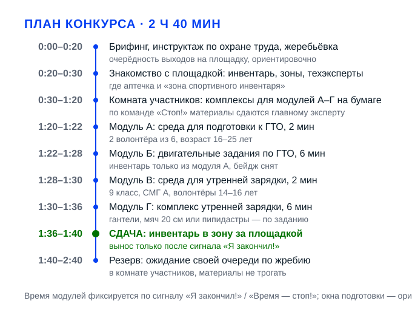
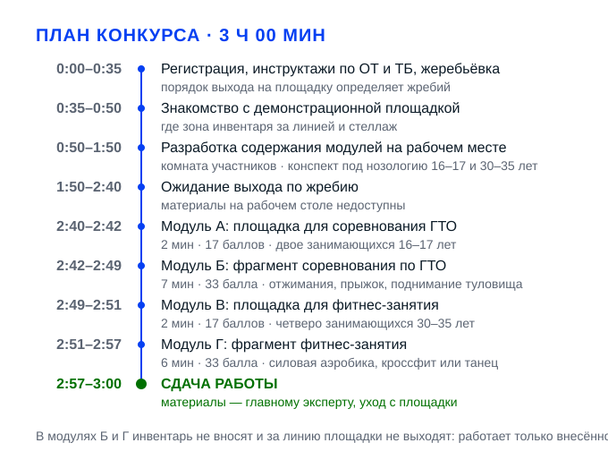
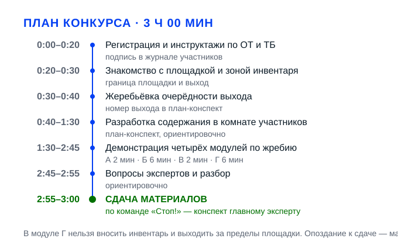

Инструктор по адаптивной физической культуре (Р)
Задания ниже — официальные файлы «Абилимпикс» (источник: abilympics-russia.ru), разложенные по категориям. Решения написаны по тексту задания, регламенту и критериям оценки; в них указано, что именно проверяет эксперт.
Школьник
14–16 лет, базовый уровень заданияВыдержка из официального конкурсного задания: страницы, относящиеся к категории «Школьник» (стр. 8–9, 14–16, 20–21 источника).
Пошаговое решение
Конкурсное задание категории «Школьники» состоит из четырёх модулей, и они идут парами: модуль А — организация места для самостоятельных занятий с инвентарём и подготовка к нормативам ВФСК ГТО для учащихся 10–11 классов с ОВЗ, модуль Б — проведение двигательных заданий с этими же занимающимися. Затем то же построение повторяется для утренней зарядки: модуль В — подготовка среды для комплекса утренней гигиенической гимнастики для девятиклассников, отнесённых к специальной медицинской группе А, модуль Г — разработка и проведение самого комплекса. На площадку отводится 2 минуты на модуль А, 6 минут на модуль Б, 2 минуты на модуль В и 6 минут на модуль Г, всего на все модули — 2 часа 40 минут с учётом подготовки в комнате участников. Занимающихся изображают волонтёры-демонстранты: в модулях А и Б это двое из шести человек в возрасте от 16 до 25 лет, в модулях В и Г — двое из шести в возрасте от 14 до 16 лет, и состав пары участник определяет сам. Два модуля организации длятся по две минуты, и в них умещается всё: представление, отбор группы, вывод лишних волонтёров, проверка внешнего вида, подбор инвентаря, разметка и доклад «Я закончил!». Два модуля проведения длятся по шесть минут, и в них нужно успеть поставить цель и задачи, провести инструктаж по охране труда, снять показатели функциональной диагностики, дать нагрузку в умеренном режиме, снова измерить пульс, подвести итоги по задачам и выдать индивидуальные рекомендации. Тридцать процентов изменения задания касаются нозологии, группы двигательных способностей и наименования инвентаря — гантели, гимнастический мяч 20 сантиметров или пипидастры, — поэтому весь план приходится собирать от карточки, а не от заученного комплекса. Отдельно учтите жёсткие правила площадки: бейдж на время двигательных действий снимают, инвентарь из модуля А остаётся в пределах площадки для модуля Б, а выносить его за границы разрешено только после сигнала об окончании. Именно на этих переходах теряется больше всего баллов, хотя сама работа может быть выполнена хорошо.

Задача 1. Организовать предметно-развивающую среду для подготовки к нормативам ГТОМодуль А · 2 минуты
Модуль А длится две минуты, и за это время нужно успеть провести полную организацию места занятий: представиться шестерым волонтёрам, отобрать двоих, вывести остальных за границы площадки, проверить внешний вид и снять бейдж, подобрать инвентарь под нозологию из карточки задания, разметить рабочую зону и сектор замера, а затем доложить экспертам об окончании. Оценивают не количество принесённого инвентаря, а связку: нозология, группа двигательных способностей, норматив ГТО, инвентарь, разметка. Поэтому порядок жёсткий — сначала карточка, потом руки, и ни одной лишней секунды на разговоры.
Действие 1.1. Войти на площадку, представить себя и отобрать двух занимающихся
Шаг 1.1.1
Останавливаемся у входа на Демонстрационную площадку, поворачиваемся лицом к шести волонтёрам-демонстрантам, а не к экспертам, и говорим обычным рабочим голосом, чуть громче разговорного: «Здравствуйте! Меня зовут так-то, я инструктор по адаптивной физической культуре, сегодня мы с вами готовимся к выполнению нормативов ГТО». На весь выход уходит не больше пятнадцати секунд, поэтому имя произносим отчётливо, без лишних слов о себе, и сразу переходим к делу: называем, что будем делать и сколько человек нам нужно.
Модуль А длится всего две минуты, и в них умещается вся организация предметно-развивающей среды: представление, отбор группы, инвентарь, разметка места и доклад экспертам. Представление — первая строка протокола, по которой судят о коммуникативных навыках и о том, умеет ли участник начинать занятие с группой, а не с самим собой. Если потратить на знакомство сорок секунд, дальше придётся бежать, и разметка будет сделана на глаз.
Проверяем по трём признакам: все шесть волонтёров смотрят на вас, а не в пол; вашу фразу слышно с трёх метров, то есть человек в дальнем конце шеренги не переспрашивает; после приветствия вы уже называете количество нужных занимающихся. Секундомер в кармане, взгляд на часы площадки — уложились в пятнадцать секунд.
Типичная ошибка — говорить вполоборота, глядя на экспертов и на стол с протоколами: группа не понимает, к ней обращаются или нет, и дальше команды приходится повторять. Вторая ошибка — длинное представление с регалиями: время уходит, а инвентарь ещё не внесён, и разметку вы делаете в спешке.
Эксперт слушает первые фразы и отмечает в листе, представился ли участник, назвал ли профессию и вид занятия. Смотрит, стоит ли участник лицом к группе и держит ли контакт с занимающимися, а не только с судейским столом.
Шаг 1.1.2
Говорим, сколько человек нам нужно и по какому признаку мы их выбираем: для работы нужны двое, и состав пары участник определяет сам, потому что гендерный и количественный состав группы волонтёров задаёт именно он. Просим выйти вперёд двух конкретных людей, называя их по описанию («вы в синей футболке и вы с короткой стрижкой»), а не «кто-нибудь, двое». Если нозология в задании — нарушение зрения, берём одного с остаточным зрением как ориентира для второго; если ДЦП, берём разный уровень двигательных возможностей, чтобы показать дифференцированную нагрузку.
Из шести предложенных волонтёров в работу идут ровно двое — это условие задания, и оно проверяется буквально: подойдут трое, и баллы за организацию снимут, даже если занятие прошло хорошо. Осознанный выбор пары — это и есть первый профессиональный шаг: по нему видно, что участник понимает нозологию и умеет составлять группу под задачу, а не набирает первых, кто под руку попался.
Перед вами ровно два человека, остальные стоят на месте и не делают шаг вперёд. Вы можете назвать вслух причину выбора: «беру вас двоих, потому что один будет выполнять с опорой на партнёра, а второй страховать». Если объяснить выбор не получается — пересмотрите пару сразу, а не в середине занятия.
Частая ошибка — сказать «подойдите двое» и получить ту пару, которая оказалась ближе: состав случаен, и дальше комплекс не соответствует возможностям. Вторая ошибка — взять больше двух «для подстраховки»: это прямое нарушение условия модуля и потеря баллов за организацию.
Эксперт фиксирует, сколько человек вышло на площадку, и слушает обоснование выбора. Отдельно отмечает, учёл ли участник нозологию и уровень подготовленности волонтёров.
Шаг 1.1.3
Просим остальных четырёх волонтёров выйти за пределы Демонстрационной площадки и подождать в отведённой зоне, показывая рукой направление выхода. Затем проверяем у двух оставшихся внешний вид: спортивная обувь с фиксированной пяткой и завязанными шнурками, форма не стесняет движений, в руках ничего нет, часы, браслеты и длинные серьги сняты, бейдж, идентифицирующий участника, снят и убран в карман. Просим занимающихся повернуться кругом, чтобы увидеть, что сзади ничего не болтается.
Внешний вид — требование охраны труда и техники безопасности, а не формальность: незавязанный шнурок на разметке сектора прыжка означает падение, а бейдж на шнурке при выполнении двигательных действий прямо запрещён конкурсным заданием, потому что нарушает нормы безопасности. Эксперты вправе остановить время, если увидят грубое нарушение, — и тогда модуль закончится раньше, чем вы начнёте.
Шнурки завязаны двойным узлом, пятка в обуви не выезжает при нажатии пальцем, на запястьях и шее ничего нет, бейдж не виден. Четыре лишних волонтёра стоят за границей площадки, а не в рабочей зоне. Проверка занимает двадцать секунд, если идти по этому списку сверху вниз.
Самая частая ошибка — не заметить бейдж: он висит на груди, и участник вспоминает о нём, только когда эксперт делает замечание. Вторая — оставить лишних волонтёров стоять у края площадки: они попадают в рабочую зону, мешают разметке и создают риск столкновения.
Эксперт смотрит на площадку в момент выхода лишних волонтёров и на то, проверяет ли участник обувь и украшения у оставшихся. Бейдж и свободные руки — отдельный пункт его листа.
Действие 1.2. Подобрать инвентарь под нозологию и группу двигательных способностей
Шаг 1.2.1
Берём карточку задания, которую выдали при жеребьёвке, и читаем вслух только две строки: нозологию занимающихся и группу двигательных способностей, на развитие которых направлен комплекс. Например: слабовидящие учащиеся 10–11 класса, скоростно-силовые способности. Сразу называем норматив ГТО, который будем отрабатывать: для скоростно-силовых это прыжок в длину с места толчком двумя ногами, для силовых — сгибание и разгибание рук в упоре лёжа или поднимание туловища за минуту, для координационных — задание с перестроением.
Тридцать процентов изменения в конкурсном задании касаются именно этой пары: нозологии и группы способностей, и они не могут затрагивать ни время модулей, ни инфраструктурный лист. Значит, подбор инвентаря выводится из карточки, а не из привычного набора «что нашлось у стены». Если участник не назвал нозологию и способности, эксперт видит, что комплекс собран заранее и не адаптирован под группу.
Вы можете одной фразой объяснить связку: нозология, способность, норматив, инвентарь. Например: слабовидящие, скоростно-силовые, прыжок в длину с места, конусы и мат с яркой разметкой. Если связка не складывается — вы взяли не ту группу способностей, вернитесь к карточке до того, как начнёте носить инвентарь.
Типичная ошибка — пропустить карточку и собирать универсальный набор «на всё»: тогда и комплекс получится никаким, и обоснование перед экспертом будет звучать общими словами. Вторая ошибка — перепутать способности: отрабатывать силовые упражнения там, где заданы координационные, и потерять главный модульный балл.
Эксперт подходит к участнику в начале модуля и слушает, как тот называет нозологию и группу способностей. Дальше он сверяет с этим весь подобранный инвентарь.
Шаг 1.2.2
Идём к зоне спортивного инвентаря и собираем набор под выбранный норматив: четыре-шесть конусов для разметки границ, два гимнастических мата, сантиметровую ленту или рулетку для замера результата, секундомер, свисток, гимнастическую палку, две-три гантели весом 0,5–1 кг, гимнастический мяч 20 см и скакалку. Каждый предмет берём в руки и проверяем: мат без разрывов и посторонних предметов на поверхности, конусы устойчивы, лента не растянута и не перекручена, гантели не имеют сколов и люфта, мяч накачан так, что при нажатии пальцем прогибается на сантиметр.
Подбор инвентаря — это и есть первая половина модуля А: в задании прямо сказано подобрать спортивный инвентарь и оборудование и внести его в пределы площадки. Инвентарь оценивают не по количеству, а по соответствию задаче и по исправности: порванный мат или разболтанная гантель — это риск травмы и снятые баллы за безопасность. Проверка в руках занимает полторы минуты и избавляет от сюрприза в середине занятия.
Набор уложен в две руки и переносится за один раз. По каждому предмету вы можете сказать, для какого упражнения он взят: мат под прыжок и под страховку, конусы под границы, лента под замер, гантели и мяч под силовые и координационные задания. Нет ни одного предмета «на всякий случай».
Классическая ошибка — набрать полную тележку: каждый лишний предмет занимает место в рабочей зоне и мешает двигаться, а на разбор уходит время, которого в двух минутах нет. Вторая — взять инвентарь, не проверив: сдутый мяч или растянутая лента обнаруживаются в момент показа норматива.
Эксперт обходит площадку после доклада и смотрит на состав набора. Отдельно отмечает исправность и то, лежит ли инвентарь в отведённой зоне, а не под ногами у занимающихся.
Шаг 1.2.3
Если по заданию нужны учебно-методические материалы, берём заранее подготовленные карточки: на одной — комплекс из шести-восьми упражнений с дозировкой (подходы и количество повторений), на второй — таблица нормативов ГТО для соответствующей ступени с пустой графой под результат. Карточки делаем крупным шрифтом, не меньше 14 пунктов, и для слабовидящих — с контрастной рамкой и жирными цифрами. Кладём их на край мата или на планшет так, чтобы было видно и вам, и занимающимся, и не приходилось искать лист в кармане.
Учебно-методические материалы в модуле А указаны как необходимость, и на школьниках они дают весомое преимущество: карточка с дозировкой показывает, что комплекс продуман, а не придуман на ходу. Крупный шрифт — не украшение, а доступность: если занимающийся слабовидящий, он должен видеть задание, а не угадывать его по вашим словам. За это отвечает критерий доступности среды, и он оценивается в модуле А.
Карточку видно с расстояния полутора метров, цифры не надо расшифровывать, дозировка записана конкретно: три подхода по восемь повторений, а не «несколько раз». Вы можете отдать карточку волонтёру, и он по ней выполнит упражнение без ваших пояснений.
Ошибка — написать карточку мелким шрифтом и держать её в руке, читая вслух: это выглядит как шпаргалка, а не как методический материал. Вторая — не сделать карточку вовсе и объяснять дозировку на пальцах: часть баллов за методическую проработанность теряется сразу.
Эксперт может взять карточку в руки и посмотреть содержание: есть ли дозировка, есть ли норматив и графа под результат. Оценивает читаемость и соответствие возрасту 10–11 класса.
Шаг 1.2.4
Перед выходом на площадку про себя проговариваем запреты: бейдж снимаем, личные вещи, сумки и телефоны оставляем в комнате участников, ничего из принесённого извне, чего нет в инфраструктурном листе, не вносим, аналогичное оборудование с площадки не дублируем. Если чего-то из нужного нет в наличии, не ищем замену самостоятельно, а подходим к техническому эксперту и коротко говорим, чего не хватает и для какого упражнения.
Общим решением эксперты вправе запретить любой предмет, принесённый извне, если он не относится к заданию или даёт несправедливое преимущество, а материалы из раздела «запрещённые на площадке» изымают без обсуждения. Один такой предмет — и часть работы просто нечем выполнять. Обращение к техническому эксперту заранее решает проблему за тридцать секунд, тогда как поиск замены в одиночку съедает время модуля.
Карманы пустые, бейдж убран, в руках только инвентарь из инфраструктурного листа. Вы точно знаете, чего не хватает и у кого это спросить. Если всё в порядке — сразу переходите к разметке, не задерживаясь на разговорах.
Частая ошибка — принести «свой» удобный инвентарь: мягкий мяч, любимую скакалку, — и получить запрет уже на площадке, перед экспертами. Вторая — молча работать тем, что есть, и в середине модуля обнаружить, что замерять результат нечем.
Эксперт и технический эксперт просматривают, что участник вносит на площадку. Спорные предметы обсуждаются до старта, и решение фиксируется в протоколе.
Действие 1.3. Подготовить и разметить место самостоятельных занятий
Шаг 1.3.1
Размечаем рабочую зону конусами: прямоугольник примерно три на три метра для двух занимающихся, отступ от края мата до конуса не меньше метра. Зону инвентаря ставим за спиной занимающихся, в полутора метрах от рабочей зоны, и складываем туда всё, что не используется в текущем упражнении. Между занимающимися оставляем интервал полтора-два метра, для слабовидящих — до двух с половиной, чтобы махи руками и выпады не задевали соседа.
Организация предметно-развивающей среды — название модуля, и оценивают её буквально по площадке: понятно ли, где работают, где лежит инвентарь, где граница. Отдельная зона инвентаря нужна не для красоты: гантель под ногами у второго занимающегося — это подвернутая стопа, а на разметке прыжка — потерянная попытка. Интервал задаётся под нозологию, потому что слабовидящий не видит соседа боковым зрением.
Пройдите по границе зоны: конусы стоят ровно, ни один не сдвинут на полметра. Между занимающимися, когда они встанут в шеренгу, остаётся не меньше полутора метров. Инвентарь не пересекает границу рабочей зоны. Всё это видно с одного взгляда от входа на площадку.
Ошибка — размечать «на глаз» и ставить конусы вплотную к мату: при прыжке в длину занимающийся уходит за границу и спотыкается о конус. Вторая — сваливать инвентарь в центр площадки: рабочая зона превращается в склад, и переставлять всё приходится уже во время занятия.
Эксперт обходит площадку и смотрит на границы, интервалы и место для инвентаря. Ему важно увидеть готовое место занятий, а не отдельные предметы, расставленные как попало.
Шаг 1.3.2
Готовим сектор для прыжка в длину с места: кладём мат так, чтобы его передний край совпал с линией отталкивания, обозначаем линию яркой лентой или мелом, рядом разворачиваем сантиметровую ленту от нулевой отметки у линии отталкивания в сторону приземления и фиксируем её концы, чтобы не сдвигалась. Проверяем, что за матом есть свободные полтора метра, а поверхность перед линией ровная, сухая и не скользкая.
Если в задании норматив на скоростно-силовые способности, то замер и есть результат: без закреплённой ленты цифра получается приблизительной, а эксперт видит, что участник не готов фиксировать показатель. Ноль ленты строго на линии отталкивания — это условие корректного измерения: отступив на пять сантиметров, вы прибавите их к результату и завысите его. Свободное место за матом нужно, чтобы приземление не закончилось ударом о стену.
Ноль ленты стоит точно на линии отталкивания, лента не перекручена, мат не сдвигается при нажатии ногой, за матом полтора метра свободного пространства, пол сухой. Замер вслух по ленте совпадает с положением пятки при приземлении.
Частая ошибка — прикрепить ленту «примерно от края мата»: мат толкается ногами и уезжает, вместе с ним уезжает и ноль. Вторая — оставить за матом конус или гантель: приземление с промахом заканчивается травмой, и модуль останавливают.
Эксперт проверяет сектор до начала модуля Б и смотрит, как участник замеряет результат: от нуля, вслух, с записью. Ошибка в замере — потеря баллов за методическую грамотность.
Шаг 1.3.3
Последним действием модуля А останавливаемся, оглядываем площадку целиком от входа, поднимаем руку вверх и громко, чтобы слышал судейский стол, говорим: «Я закончил!» или «Время — стоп!». До этого момента ничего не докладываем: пока рука не поднята, модуль продолжается, и любая перестановка конуса считается частью работы. После доклада инвентарь из пределов площадки не выносим — он останется здесь для модуля Б.
Доклад об окончании — обязательный элемент последовательности, прописанный в задании: эксперты фиксируют время модуля именно по нему, и без сигнала модуль считается незавершённым. В модуле А время короткое, две минуты, и каждая лишняя секунда после готовности — это уже не работа, а суета, которую видно. Инвентарь остаётся на площадке потому, что в модуле Б пользоваться можно только тем, что внесено здесь.
Рука поднята выше головы, фраза произнесена громко и целиком, эксперт кивнул или записал время. Площадка при этом выглядит законченной: размечено, инвентарь на местах, занимающиеся стоят у границы зоны и ждут.
Ошибка — тихо сказать «готово» себе под нос: эксперт не фиксирует сигнал, и модуль тянется дальше, а следующие две минуты вы тратите впустую. Вторая — начать выносить инвентарь сразу после доклада: в модуле Б его уже нельзя будет внести обратно.
Эксперт отмечает время доклада и осматривает площадку в этот момент — именно её состояние идёт в оценку модуля А. Отдельно он смотрит, не начал ли участник двигать инвентарь сразу после сигнала.
Задача 2. Провести двигательные задания по подготовке к выполнению нормативов ГТОМодуль Б · 6 минут · основной модуль
Модуль Б — главный: шесть минут, в которые умещается полное занятие с двумя волонтёрами-демонстрантами 16–25 лет. Начало с построением, целью, тремя задачами и инструктажем по охране труда, затем функциональная диагностика с пульсом и одной пробой под нозологию, разминка, подводящие упражнения, основная работа по дозировке со страховкой, контрольная попытка с замером и записью результата. В конце — уборка инвентаря в пределах площадки, повторный замер, итоги строго по трём объявленным задачам, индивидуальные рекомендации с мотивацией и сигнал «Я закончил!». Пользуемся только тем инвентарём, который внесли в модуле А.
Действие 2.1. Начать занятие: построение, цель, задачи и техника безопасности
Шаг 2.1.1
Приглашаем занимающихся в рабочую зону и строим в одну шеренгу по линии разметки, лицом к себе, с интервалом полтора метра. Сами встаём так, чтобы видеть обоих и не стоять против света: если за вами окно, слабовидящий занимающийся видит только силуэт. Команду даём обычным голосом, без крика: «В одну шеренгу становись! Интервал — полтора метра». После построения делаем паузу в две-три секунды, убеждаемся, что оба стоят и смотрят, и только потом начинаем говорить.
Начало занятия — отдельный пункт последовательности модуля Б, и эксперты оценивают именно организацию: сумел ли участник собрать группу, поставить её безопасно и удержать внимание. Построение в шеренгу с интервалом задаёт ту самую дистанцию, без которой на разминке идут столкновения. Пауза после команды важна методически: пока группа не успокоилась, любое объяснение проходит мимо.
Оба занимающихся стоят на одной линии, лицом к вам, между ними не меньше полутора метров, никто не переминается и не разговаривает. Вам не приходится повторять команду второй раз. Если повторять пришлось — строй был поставлен неверно с самого начала.
Типичная ошибка — начинать объяснение, пока люди ещё идут: половина фразы теряется, и дальше приходится объяснять заново, а время модуля уже идёт. Вторая — ставить шеренгу спиной к свету и лицом к окну: для слабовидящих вы превращаетесь в тёмное пятно, и показ перестаёт работать.
Эксперт смотрит на первые тридцать секунд модуля Б: есть ли построение, есть ли команда, держит ли участник группу в поле зрения. Именно здесь видно, умеет ли он работать с классом.
Шаг 2.1.2
Называем цель и задачи коротко и по-человечески, без методических терминов: «Наша цель — подготовиться к сдаче норматива ГТО по прыжку в длину с места. Задачи на сегодня три: размяться и разогреть мышцы, отработать технику отталкивания и приземления, сделать контрольную попытку и записать результат». На каждую задачу — одно предложение, всего не больше тридцати секунд. Для слабослышащих говорим лицом к занимающимся, чётко артикулируя, и дублируем главное показом; для слабовидящих — проговариваем словами то, что обычно показывают.
Сообщение цели и задач — второй пункт последовательности, и оно оценивается как отдельный методический элемент: занятие без цели превращается в набор упражнений. Кроме того, понятная цель удерживает занимающихся: подросток 10–11 класса выполняет задание осмысленно, если знает, зачем делает третий подход. Тридцать секунд на постановку задач — это норма, при которой остаётся время на саму работу.
Вы можете проверить понимание одним вопросом: «Какой норматив мы готовим?» — и получить внятный ответ. Задач названо ровно три, они не повторяют друг друга, и каждая дальше действительно выполняется. Ни одно предложение не длиннее пятнадцати слов.
Ошибка — пересказывать всю методику: «сначала подготовительная часть, потом основная, затем заключительная», — занимающиеся перестают слушать на второй фразе. Вторая — назвать цель без задач и потом на ходу придумывать, что делать дальше.
Эксперт слушает постановку цели и сверяет её с карточкой задания: та ли нозология, та ли группа способностей, тот ли норматив. Несовпадение цели с заданием — серьёзное снижение оценки модуля.
Шаг 2.1.3
Проговариваем правила безопасности на занятии конкретно, а не общей фразой: работаем только в своей зоне между конусами, не заходим на мат, пока предыдущий не освободил его, слушаем свисток и по свистку останавливаемся и смотрим на меня, при любом неприятном ощущении — головокружении, боли, нехватке воздуха — сразу говорим и прекращаем упражнение. Отдельно называем правило для нозологии: при нарушении зрения держимся за плечо партнёра при переходе, при ДЦП выполняем упражнения с опорой и страховкой.
Требования охраны труда и техники безопасности — третий обязательный пункт начала занятия, и они же отдельная строка в оценке: грубое нарушение даёт главному эксперту право остановить время модуля. Конкретные правила работают, общие — нет: «соблюдайте технику безопасности» не говорит подростку, что делать с матом. Учёт нозологии в правилах показывает, что участник понимает свою группу.
Правил названо не больше пяти, каждое сформулировано как действие: что делать, а не чего бояться. Оба занимающихся могут повторить хотя бы правило про свисток. Через минуту после начала работы никто не заходит на мат без команды.
Частая ошибка — отделаться фразой «будьте осторожны»: формально пункт закрыт, а по факту страховки нет, и эксперт это отмечает. Вторая — перечислять десять запретов, из которых не запоминается ноль, и терять на этом время модуля.
Эксперт слушает инструктаж целиком и дальше следит, соблюдаются ли названные правила в работе. Расхождение между сказанным и сделанным фиксируется отдельно.
Действие 2.2. Провести функциональную диагностику перед нагрузкой
Шаг 2.2.1
Сажаем занимающихся на мат или ставим в шеренгу, находим пульс на лучевой артерии на внутренней стороне запястья у основания большого пальца и считаем удары за десять секунд, не за минуту: так точнее, потому что пульс успевает измениться. Умножаем результат на шесть и называем вслух. Сразу после этого считаем дыхание: кладём ладонь на живот или просим положить свою и считаем вдохи за тридцать секунд, результат умножаем на два. Оба показателя записываем в карточку или на планшет.
Функциональная диагностика — четвёртый пункт последовательности модуля Б, и от неё зависит вся дозировка: без исходного пульса нельзя понять, адекватна ли нагрузка и как прошло восстановление. Пульс за десять секунд с умножением на шесть — стандартный приём, потому что за полную минуту показатель падает и цифра занижается. Данные в карточке нужны, чтобы в конце занятия сравнить состояние до и после и показать результат эксперту.
В карточке стоят два числа по каждому занимающемуся: пульс в ударах в минуту и частота дыхания в минуту. Пульс в покое у подростка 10–11 класса обычно 60–90, дыхание 16–20; если цифра вышла за эти рамки, вы либо посчитали неверно, либо занимающийся только что поднимался по лестнице, и замер надо повторить через минуту.
Типичная ошибка — считать пульс за минуту и записывать первое пришедшее в голову число, не называя его вслух: ошибка в подсчёте не проверяется и всплывает в конце, когда восстановление «не сходится». Вторая — измерять пульс через одежду на плечевой артерии, где его почти не слышно, и записывать «примерно 80».
Эксперт подходит ближе в момент замера и смотрит, находит ли участник пульс правильно, держит ли пальцы на артерии, считает ли вслух. Фиксация показателей в карточке — отдельный наблюдаемый признак.
Шаг 2.2.2
Добавляем одну простую пробу под нозологию и возраст. Для слабовидящих и слабослышащих — ортостатическая проба: занимающийся лежит или сидит две минуты, вы считаете пульс, затем он встаёт, и вы считаете снова через минуту; разница до 12–16 ударов считается нормальной. Для ДЦП и при соматических заболеваниях задержку дыхания не применяем — вместо неё просим пройти десять шагов в обычном темпе и сразу считаем пульс. Пробу с задержкой дыхания на вдохе (Штанге) на школьниках делаем только при отсутствии противопоказаний и по желанию занимающегося.
Одна проба превращает формальный замер в диагностику: по реакции на смену положения видно, как организм переносит нагрузку, и это основание для выбора интенсивности. Задержка дыхания при ДЦП и соматических заболеваниях — прямое противопоказание, потому что вызывает сбои регуляции и головокружение; на площадке это выглядит как обморок и означает остановку модуля.
Проба выполнена в одном варианте, результат записан рядом с исходными цифрами, и вы можете сказать, какой режим из него следует: «прирост 14 ударов — нагрузку даём умеренную, работаем на пульсе до 130». Если прирост больше двадцати, интенсивность снижаем и удлиняем разминку.
Ошибка — провести задержку дыхания всем подряд «для солидности»: на ДЦП это риск, а на соматических заболеваниях прямая ошибка методики. Вторая — сделать пробу и никак не использовать её результат, оставив цифру в карточке мёртвым грузом.
Эксперт оценивает, умеет ли участник выбирать пробу под нозологию. Проведение противопоказанной пробы — грубая методическая ошибка, её отмечают в протоколе отдельно.
Шаг 2.2.3
По результатам диагностики проговариваем режим нагрузки и сразу показываем его группе: «Работаем в умеренном темпе, пульс держим до 130, между подходами отдыхаем сорок секунд, дышим ровно, без задержек». Для силового норматива назначаем два-три подхода по шесть-восемь повторений, для скоростно-силового — три-четыре пробных выхода с полным отдыхом между ними, для координационного — четыре-пять повторений с паузой на восстановление равновесия.
Дозировка, привязанная к измеренному пульсу, отличает инструктора по адаптивной физической культуре от человека, который просто показывает упражнения. При ОВЗ верхняя граница интенсивности задаётся не ощущениями, а цифрой: при пульсе выше 130–140 у подростка быстро наступает истощение, и работа идёт на технику «как получится». Конкретные подходы и повторения эксперт проверяет по карточке, поэтому они называются до начала работы.
Режим назван числами: пульс, количество подходов, количество повторений, длительность отдыха. Через две минуты работы вы можете проверить пульс и увидеть, что он в заявленных рамках. Занимающиеся знают, сколько раз делают, и не спрашивают об этом в процессе.
Частая ошибка — объявить «сделаем несколько подходов» и менять дозировку по ходу: карточка расходится с реальностью, и оценивать нечего. Вторая — поставить пульс 160 «чтобы успеть», хотя для этой группы верхняя граница ниже.
Эксперт сверяет заявленный режим с карточкой и с тем, что происходит на площадке. Соответствие дозировки нозологии и возрасту — один из главных критериев модуля Б.
Действие 2.3. Провести комплекс двигательных заданий по подготовке к нормативу ГТО
Шаг 2.3.1
Начинаем с разминки на одну-полторы минуты, стоя в шеренге: двадцать шагов на месте с высоким подниманием бедра, десять круговых движений плечами назад и вперёд, десять наклонов туловища в сторону, по восемь вращений в тазобедренных суставах и по шесть — в коленных и голеностопных. Каждое упражнение показываем сами, стоя вполоборота к группе, и считаем вслух до восьми, чтобы темп держали все. Для слабовидящих добавляем словесное описание траектории: «руки вверх, к плечам, в стороны».
Разминка перед нормативом — методическая необходимость: без разогрева прыжок в длину с места даёт риск растяжения и заведомо худший результат, а на чемпионате ещё и выглядит как пропущенный этап занятия. Показ вполоборота нужен, чтобы занимающиеся видели одновременно и движение, и ваше лицо. Счёт вслух синхронизирует группу и держит заданный темп, вместо того чтобы каждый делал в своём ритме.
Все суставы, которые будут работать в нормативе, прошли через движение: голеностоп, колени, таз, плечи, шея. К концу разминки дыхание участилось, но разговор ещё возможен — это и есть признак умеренной интенсивности. Пульс после разминки 110–120, выше — снижаем темп.
Ошибка — заменить разминку одним упражнением «прыжки на месте»: голеностоп и колени остаются холодными, и первая же попытка идёт с риском. Вторая — показывать движения спиной к группе или лицом к экспертам: занимающиеся повторяют зеркально неверно и теряют темп.
Эксперт смотрит разминку целиком: последовательность сверху вниз, дозировка, показ, счёт. Это самая наблюдаемая часть модуля, и она даёт представление о методической подготовке участника.
Шаг 2.3.2
Переходим к подводящим упражнениям у мата: два-три раза выполняем замах руками с полуприседом без прыжка, затем два прыжка с места на половинную амплитуду с акцентом на мягкое приземление на две ноги, затем один прыжок через линию с остановкой после приземления, чтобы зафиксировать положение. Каждое повторение комментируем одной фразой: «руки назад — вперёд, толчок двумя ногами, приземление на пятки и сразу на всю стопу». Занимающиеся выполняют по очереди, второй в это время стоит за конусом и смотрит.
Подводящие упражнения разбирают норматив на части, и именно они дают тот прирост техники, который виден в контрольной попытке. Прыжок с места на половинную амплитуду учит приземлению — самой травмоопасной фазе: если приземляться на прямые ноги, удар идёт в колени и поясницу. Фраза-подсказка на каждое повторение нужна потому, что подросток удерживает в голове одну-две инструкции, а не пять.
Приземление мягкое, на две ноги, колени согнуты, пятки не проскальзывают. Занимающийся может сам сказать последовательность: замах, толчок двумя, приземление. Очередность соблюдается: один работает, второй стоит за границей и не заходит на мат.
Частая ошибка — сразу переходить к полной попытке без подводящих: техника остаётся прежней, а силы уже потрачены. Вторая — разрешить прыгать двоим одновременно: столкновение в воздухе на прыжках в длину с места заканчивается травмой и остановкой модуля.
Эксперт следит, разложен ли норматив на части и объясняется ли каждая часть. Наличие подводящих упражнений и поочерёдность — отдельные пункты его листа.
Шаг 2.3.3
Даём основную работу по заявленной дозировке: два-три подхода по шесть-восемь повторений, между подходами пауза сорок-шестьдесят секунд, в паузе — спокойная ходьба и дыхание. В каждом подходе называем акцент: первый — на замах и толчок, второй — на приземление и фиксацию, третий — на результат. Для слабослышащих показываем ритм рукой перед собой, для слабовидящих предупреждаем словами: «приготовились, пошли».
Дозировка и распределение акцентов — сердце методики: три подхода с разными задачами дают и технику, и результат, тогда как десять попыток подряд без пауз дают усталость и падение показателя. Пауза сорок-шестьдесят секунд укладывается в восстановление пульса и не растягивает шестиминутный модуль. Предупреждение о начале подхода для слабовидящего — это доступность, без него человек стартует с задержкой и не в полную силу.
Выполнено ровно столько подходов и повторений, сколько записано в карточке. Пульс в паузах возвращается к 120–130, дыхание восстанавливается за тридцать-сорок секунд. К третьему подходу техника не разрушается: приземление остаётся мягким, толчок — двумя ногами.
Ошибка — гнаться за количеством: после восьмой попытки подряд техника рассыпается, и последние повторения закрепляют ошибку. Вторая — забыть про паузу и вести работу «потоком»: пульс уходит за 150, занимающийся садится на мат, и модуль фактически остановлен.
Эксперт считает подходы и повторения, слушает команды и смотрит на паузы. Расхождение с заявленной дозировкой в любую сторону он трактует как методическую ошибку.
Шаг 2.3.4
Организуем страховку и физическую помощь. При прыжке в длину с места страхуем сбоку от мата, на расстоянии вытянутой руки, в полуприседе, готовые поддержать под спину и под локоть; при упражнениях с опорой на руки стоим со стороны головы и придерживаем плечо; при работе с гантелями стоим в полутора метрах и следим за амплитудой. Помощь оказываем только там, где нужно: придерживаем за плечо при переходе, подаём руку на подъёме, но не тащим и не поднимаем занимающегося за руки.
Оказание необходимой физической помощи и страховки прописано в самом задании модуля, и это критерий, за который начисляют баллы отдельно. Страховка сбоку на расстоянии вытянутой руки оставляет вам возможность вмешаться за долю секунды и не мешает движению. Избыточная помощь вредна не меньше отсутствия: если инструктор тащит человека за руки, он делает упражнение вместо него, и нагрузка не работает.
Вы стоите в правильной точке на каждом упражнении и можете дотянуться до занимающегося, не делая шага. Ни один подход не идёт без страховки. Занимающийся после помощи выполняет движение сам, а не висит на вас. При приземлении за мат никто не выходит.
Самая частая ошибка — стоять напротив и смотреть, сложив руки: формально вы рядом, фактически не страхуете, и это видно эксперту сразу. Вторая — хватать за руки при каждом подъёме: занимающийся привыкает, что его вытянут, и перестаёт работать сам.
Эксперт отмечает положение участника относительно занимающегося в каждой фазе упражнения. Именно страховка чаще всего отличает высокий результат от среднего.
Шаг 2.3.5
Проводим контрольную попытку и фиксируем результат. Даём команду «приготовились» и паузу две секунды, затем «можно», замеряем по ленте от линии отталкивания до ближайшей точки касания пяткой, называем цифру вслух и записываем в карточку рядом с нормативом. Для силового норматива считаем вслух каждое повторение в течение одной минуты по секундомеру, для координационного фиксируем время или количество ошибок. Затем показываем занимающемуся, где его результат относительно норматива его ступени, и говорим, сколько не хватило.
Без контрольной попытки занятие остаётся тренировкой без обратной связи, а подготовка к ГТО требует именно измерения: человек должен уйти с цифрой и понимать, на каком он месте. Замер от линии отталкивания до ближайшей точки касания — правило комплекса, и отклонение от него искажает результат. Запись в карточку рядом с нормативом делает сравнение наглядным и для занимающегося, и для эксперта.
Результат назван вслух, записан в карточку, и занимающийся может его повторить. Между измеренным и нормативом для его ступени видна разница в сантиметрах или повторениях. Если результат явно выбивается из серии, попытка засчитана по правилу, а не «на глаз».
Ошибка — назвать результат «примерно метр шестьдесят»: цифра без замера не проверяема и обесценивает всю диагностику. Вторая — не показать норматив: занимающийся уходит без ориентира и без мотивации, а мотивация самостоятельных занятий — отдельный пункт следующего действия.
Эксперт присутствует при замере и сверяет цифру с лентой. Умение работать с нормативной таблицей и объяснять разницу — часть оценки методической грамотности.
Действие 2.4. Завершить занятие: уборка, повторная диагностика, итоги и рекомендации
Шаг 2.4.1
Сразу после контрольной попытки просим занимающихся убрать инвентарь, но только в пределах Демонстрационной площадки: конусы выстраиваем в линию у края зоны, мат сдвигаем к границе, ленту сматываем и кладём на мат, гантели и мяч ставим рядом. Команду даём конкретно: «конусы — в линию справа, мат — к конусу, ленту смотать». Сами в это время не стоим: помогаем перенести мат, потому что вдвоём его нести удобнее и безопаснее, чем тащить одному за угол.
Пункт об уборке инвентаря в пределах площадки стоит в последовательности модуля Б отдельной строкой и работает на оценку организации пространства: площадка должна оставаться рабочей до конца. Убирать нужно именно в пределах площадки, потому что выносить инвентарь за её границы до сигнала нельзя — это прямое ограничение задания. Совместная уборка — ещё и элемент обучения: занимающиеся запоминают порядок действий, который потом повторят сами.
Инвентарь не мешает строю, конусы в линию, мат не перекрывает рабочую зону, лента смотана и не лежит петлёй под ногами. Всё это занимает не больше тридцати секунд. Если уборка затянулась — значит, инвентаря было слишком много.
Ошибка — начать выносить инвентарь за пределы площадки до сигнала: по правилам модуля Б это запрещено, и эксперты фиксируют нарушение. Вторая — оставить мат и конусы там, где они лежали: построение приходится делать в обход, и площадка выглядит незаконченной.
Эксперт смотрит, кто убирает инвентарь и куда. Уборка в пределах площадки до сигнала и вынос за её границы после сигнала — два разных требования, и оба фиксируются.
Шаг 2.4.2
Строим занимающихся в шеренгу на прежней линии и проводим повторную функциональную диагностику: пульс за десять секунд с умножением на шесть и дыхание за тридцать секунд, сразу после нагрузки и через минуту отдыха. Называем цифры вслух и сравниваем с исходными: «было 78, стало 132 сразу после, через минуту 96». Если пульс через минуту выше исходного больше чем на тридцать ударов, даём дополнительный отдых и не начинаем разговор об итогах, пока дыхание не восстановится.
Повторная диагностика — обязательный пункт последовательности, и она превращает занятие в замкнутый цикл: измерили до, измерили после, увидели реакцию. Именно эта пара цифр показывает, адекватна ли была нагрузка, и на неё опираются индивидуальные рекомендации. Замедленное восстановление — сигнал, что дозировка для этой группы завышена, и об этом нужно сказать вслух, а не скрыть.
Оба показателя записаны, есть три числа по каждому занимающемуся: до, сразу после, через минуту. Восстановление за минуту составило не больше тридцати ударов от исходного. Дыхание к моменту итогов ровное, занимающиеся могут говорить полными фразами.
Частая ошибка — измерить пульс один раз и сразу перейти к выводам: без второго замера непонятно, восстановился человек или нет. Вторая — не озвучить цифры: занимающийся уходит без знания о своей реакции, а эксперт не слышит анализа.
Эксперт присутствует при повторном замере и слушает сравнение. Умение интерпретировать восстановление, а не просто назвать цифру, оценивается отдельно.
Шаг 2.4.3
Подводим итоги строго по тем задачам, которые объявили в начале. Говорим так: «Задача размяться — выполнена, вы разогрелись. Задача отработать технику — частично: толчок двумя ногами получился, приземление надо мягче. Задача контрольной попытки — выполнена: результат 168 сантиметров при нормативе 175». На каждую задачу — одна фраза с оценкой «выполнено», «выполнено частично» или «не выполнено» и с конкретной причиной.
Подведение итогов в соответствии с поставленной целью и задачами — отдельный пункт последовательности модуля Б, и он оценивается как методическое умение замыкать занятие. Итог, привязанный к задачам, показывает, что структура занятия была настоящей, а не декоративной. Конкретная причина вместо общей похвалы даёт занимающемуся понимание, что делать дальше, — а это и есть педагогический результат.
Итог состоит из трёх фраз — по числу задач, каждая начинается с названия задачи. Есть хотя бы одна честная оценка «частично» с причиной, а не только «всё хорошо». К концу итогов занимающийся знает свой результат и знает, что именно доработать.
Ошибка — сказать «молодцы, все хорошо поработали»: это не итог, а вежливость, и связь с задачами потеряна. Вторая — выдать итог в виде претензий без разбора: занимающийся слышит недовольство, но не понимает, что исправить.
Эксперт сверяет итог с задачами, названными в начале модуля. Если итог не совпадает с задачами, он делает вывод, что занятие велось без плана, и снижает оценку методической части.
Шаг 2.4.4
Даём каждому по одной-двум индивидуальным рекомендациям, привязанным к его результату и нозологии: «вам дома — три подхода по восемь приседаний и десять прыжков с места на мягкое приземление, через день, вместо разминки перед уроками»; «вам — упражнения на равновесие: стойка на одной ноге тридцать секунд с открытыми, потом с закрытыми глазами, и только после этого прыжки». Обязательно добавляем мотивирующую фразу про конкретный срок: «если делать это три раза в неделю, к следующей пробе добавите пять-семь сантиметров».
Индивидуальные рекомендации и мотивация к самостоятельным занятиям — финальный пункт содержательной части модуля Б, и он проверяется по конкретности: рекомендация должна быть выполнима дома без оборудования. Привязка к результату делает её личной, а не общей для группы. Срок и ожидаемый прирост — это то, что превращает совет в мотивацию: подросток понимает, ради чего тратить время.
Рекомендация сформулирована числом: подходы, повторения, время, периодичность. Она выполнима без инвентаря — с опорой на стену, пол, ступеньку. Занимающийся может повторить её своими словами, и в ней есть срок и ожидаемый результат.
Ошибка — сказать «занимайтесь дома»: такая рекомендация не проверяется и не выполняется. Вторая — дать одинаковые советы двоим: тогда пропадает индивидуальный подход, который прямо назван в задании, и рекомендации выглядят заготовленными.
Эксперт слушает рекомендации и оценивает их конкретность, выполнимость в домашних условиях и связь с результатом конкретного занимающегося. Общие слова он не засчитывает.
Шаг 2.4.5
Завершаем модуль: поднимаем руку вверх, громко говорим «Я закончил!» или «Время — стоп!», и только после этого вместе с волонтёрами выносим инвентарь за пределы Демонстрационной площадки в зону спортивного инвентаря и оборудования. Выносим всё сразу и до конца, не оставляя ни конуса, ни ленты: за границей площадки инвентарь ставим на отведённые места, а не сваливаем у входа.
Остановка времени сигналом, а затем вынос инвентаря за пределы площадки — прямые требования модуля Б: пользоваться инвентарём можно только тем, что внесено в модуле А, а выносить его разрешено лишь после сигнала. Именно этот порядок проверяет, понимает ли участник регламент. Беспорядок в зоне инвентаря видят и следующие участники, и эксперты, которые проходят площадку после вас.
Рука поднята, фраза произнесена целиком и слышна судейскому столу, время зафиксировано. Площадка пустая: ни одного предмета, принесённого вами, на ней не осталось. В зоне инвентаря всё стоит по местам, мат не брошен на проходе.
Типичная ошибка — начать вынос до сигнала: нарушение регламента, которое фиксируется в протоколе, даже если сама работа выполнена хорошо. Вторая — оставить на площадке ленту или мяч «на потом»: их найдут после вас, и вопрос будет к вам.
Эксперт отмечает время сигнала и порядок уборки. Состояние площадки после участника — последнее, что он видит, и оно тоже входит в оценку модуля, как и скорость уборки.
Задача 3. Организовать предметно-развивающую среду для утренней гигиенической гимнастикиМодуль В · 2 минуты
Модуль В — зеркало модуля А, но для другой группы: девятиклассники с соматическими заболеваниями, специальная медицинская группа А, волонтёры-демонстранты 14–16 лет, двое из шести. Две минуты на представление с упоминанием группы здоровья, отбор пары с обоснованием под конкретный снаряд, проверку внешнего вида и подошвы обуви, подбор гантелей, мяча 20 сантиметров или пипидастров с обоснованием веса, разметку ковриков с интервалом полтора метра и доклад. Здесь важнее не норматив, а безопасная среда: свободное место вокруг каждого, сухой пол, приток воздуха, инвентарь в отдельной зоне.
Действие 3.1. Войти на площадку, представить себя и отобрать двух занимающихся 9 класса
Шаг 3.1.1
Переходим на площадку к новой группе волонтёров, останавливаемся лицом к шестерым и представляемся так же коротко, но с акцентом на возраст и особенность группы: «Здравствуйте! Меня зовут так-то, я инструктор по адаптивной физической культуре. Сейчас мы проведём утреннюю гигиеническую гимнастику, работаем в умеренном темпе, потому что вы занимаетесь в специальной медицинской группе». На всю фразу — пятнадцать секунд, не больше, потому что у модуля В всего две минуты на организацию среды.
Модуль В повторяет структуру модуля А, но с другой группой: учащиеся 9 класса с соматическими заболеваниями, отнесённые к специальной медицинской группе А, и волонтёры-демонстранты 14–16 лет. Упоминание группы здоровья в представлении — не формальность: оно сразу задаёт занимающимся рамку темпа и объясняет, почему нагрузка будет умеренной. Эксперт по этой фразе видит, что участник прочитал задание и понимает особенности группы.
Все шестеро смотрят на вас, фраза слышна с трёх метров, в ней прозвучали и вид занятия, и особенность группы. После представления вы сразу называете, сколько человек нужно. Секундомер показывает не больше двадцати секунд от начала.
Ошибка — представить модуль В точно так же, как модуль А, не сказав о группе здоровья: участник выглядит как человек, который не читал вторую часть задания. Вторая — растянуть представление на полминуты и потом размечать место бегом.
Эксперт слушает, названы ли возраст занимающихся и группа здоровья. Для модуля В это маркер того, что участник различает два задания, а не повторяет одно и то же.
Шаг 3.1.2
Называем нужное количество — двое — и приглашаем конкретных волонтёров, объясняя выбор: «Пойдут вы двое: вы повыше, будете работать с гантелями, а вы с мячом, так удобнее держать интервал». Если по заданию инвентарь — гимнастический мяч 20 сантиметров, выбираем пару примерно одного роста, чтобы амплитуда и темп совпадали; если пипидастры, берём тех, кто уверенно держит предмет в руках. Четверым оставшимся сразу показываем рукой направление выхода за пределы площадки.
Количественный и гендерный состав группы определяет сам участник из шести предложенных, и это условие проверяется: в работе ровно двое. Осмысленный выбор с обоснованием под инвентарь показывает понимание методики: с разным снарядом нужны разные по подготовленности занимающиеся, иначе один будет отставать, а второй скучать. Одновременный вывод остальных экономит те самые две минуты, которых в модуле В мало.
На площадке ровно двое занимающихся, остальные стоят за её границей. Вы можете объяснить выбор одной фразой, привязанной к инвентарю, и назвать, кто с каким снарядом работает. Никто не остался стоять у края рабочей зоны.
Частая ошибка — брать «первых двух» без обоснования: выбор случаен, и дальше приходится подстраивать амплитуду под разницу в росте и подготовке. Вторая — оставить лишних волонтёров рядом: они попадают в зону разметки и мешают.
Эксперт фиксирует количество занимающихся на площадке и слушает обоснование. Неверное количество — прямое нарушение условия модуля, а выбор без обоснования он отмечает как формальный.
Шаг 3.1.3
Проверяем внешний вид и готовность к зарядке: спортивная обувь на нескользящей подошве и завязанная, форма свободная, карманы пустые, в руках ничего нет, часы и браслеты сняты, бейдж убран. Отдельно просим показать подошву и проверяем, что она не скользит: для утренней гимнастики с предметами это главный риск. Затем спрашиваем каждого одним вопросом: «Как самочувствие, заниматься можете?» — и ждём ответа вслух.
Внешний вид по требованиям охраны труда и техники безопасности проверяется в модуле В так же, как в модуле А, и оценивается отдельно. Для группы с соматическими заболеваниями важен ещё и короткий опрос о самочувствии: он входит в культуру работы инструктора и защищает от нагрузки на фоне обострения. Вопрос задаётся до разметки, чтобы при жалобе успеть перестроить занятие.
Обувь завязана и не скользит, карманы пустые, украшений нет, бейдж не виден. Оба занимающихся ответили на вопрос о самочувствии утвердительно и вслух, а не кивком. Время проверки — двадцать-двадцать пять секунд.
Ошибка — ограничиться взглядом со стороны и не проверять подошву: на зарядке с гантелями скользкая подошва даёт падение на первом же повороте. Вторая — не спросить о самочувствии и узнать о плохом состоянии уже в середине комплекса.
Эксперт отмечает, проверены ли обувь и украшения и прозвучал ли вопрос о самочувствии. Для этой группы последнее считается обязательным элементом подготовки к занятию.
Действие 3.2. Подобрать инвентарь под утреннюю зарядку и группу здоровья
Шаг 3.2.1
Читаем в карточке, какой инвентарь указан в задании этого года, и действуем от него: гантели, гимнастический мяч 20 сантиметров или пипидастры. Для гантелей берём две пары весом 0,5 и 1 килограмм, чтобы можно было подобрать нагрузку каждому; вес участник определяет и обосновывает сам. Для мяча берём два мяча диаметром 20 сантиметров, проверяем накачку нажатием пальца и шов на ощупь; для пипидастров берём два комплекта с целыми лентами и ручками без заусенцев.
Тридцать процентов изменения в модуле Г касаются наименования спортивного инвентаря, а в модуле В от него зависит вся подготовка места: под гантели нужны коврики и больше интервала, под мяч — ровная поверхность и контроль выпадения, под пипидастры — свободное место для махов. Выбор веса 0,5 или 1 килограмм показывает, что участник понимает дозирование: полтора килограмма в руке для девятиклассника из специальной медицинской группы — перебор.
Инвентарь соответствует названию в карточке, а не привычному набору. Вес гантелей назван вслух с обоснованием. Мячи одинакового диаметра, накачаны, без трещин. Вы можете сказать, какое упражнение делается с этим предметом и почему именно с ним.
Типичная ошибка — взять гантели по 2–3 килограмма «чтобы было видно нагрузку»: на группе с соматическими заболеваниями это прямое превышение, и эксперт это отметит. Вторая — перепутать инвентарь и приготовить гантели там, где задание требует мяч.
Эксперт сверяет принесённый инвентарь с карточкой задания. Несоответствие наименования — потеря значительной части баллов модуля В, потому что дальше весь комплекс оказывается не про то.
Шаг 3.2.2
Проверяем количество и исправность: два комплекта ровно, ничего лишнего. Гантели осматриваем на сколы, трещины и люфт дисков, мячи — на швы и равномерность накачки, пипидастры — на крепление лент к ручке, пробуем потянуть каждую. Всё протираем сухой или слегка влажной салфеткой, потому что снаряд переходит из рук в руки. Укладываем инвентарь в зоне инвентаря, а не на рабочем месте: гантель под ногой на зарядке — это подвернутая стопа.
Исправность инвентаря — требование безопасности, и на группе с ограничениями здоровья оно весит больше обычного: треснувшая гантель рассыпается на диски в самый неудачный момент. Протирание снаряда кажется мелочью, но это гигиеническая норма, которую эксперт видит. Порядок хранения в отдельной зоне — часть организации предметно-развивающей среды, то есть названия модуля В.
Комплектов ровно два, каждый предмет проверен в руках, диски не двигаются, ленты держатся, мячи одинаково упругие. Инвентарь лежит в зоне инвентаря, рабочая зона свободна, и весь набор умещается в две руки.
Ошибка — взять инвентарь, не проверив крепление: на пипидастрах лента отлетает на первом же махе и летит в лицо соседу. Вторая — положить гантели в центр площадки: занимающиеся начинают спотыкаться о них уже на разметке.
Эксперт обходит площадку и смотрит на исправность и расположение инвентаря. Порванный или шатающийся предмет он отмечает как нарушение требований безопасности.
Действие 3.3. Подготовить и разметить место для утренней зарядки
Шаг 3.3.1
Кладём на пол два коврика или гимнастических мата параллельно друг другу на расстоянии не меньше полутора метров, передний край — на одной линии. Конусами обозначаем границы зоны так, чтобы за каждым ковриком оставалось свободное пространство не меньше метра со всех сторон: на зарядке будут махи руками в стороны и наклоны, и задетый конус означает сбитый темп. Воду и аптечку не выставляем напоказ, но уточняем у технического эксперта, где они находятся.
Разметка под утреннюю зарядку отличается от разметки под ГТО: здесь важна не дистанция, а свободное пространство вокруг каждого занимающегося, потому что движения идут в стороны и вверх. Полтора метра между ковриками — минимум, при котором махи с гантелями не задевают соседа. Знание, где аптечка, — часть готовности к занятию, и на группе с соматическими заболеваниями это обязательный элемент подготовки среды.
Коврики лежат параллельно, на одной линии, между ними не меньше полутора метров, вокруг каждого — метр свободного пола. Вы можете пройти между ковриками, не задевая их. Инвентарь стоит в зоне инвентаря, а не на ковриках.
Ошибка — положить коврики вплотную «чтобы обоих видеть»: при махе гантелью в сторону занимающиеся задевают друг друга, и упражнение приходится останавливать. Вторая — оставить коврики у стены: на наклоне назад человек упирается в стену и меняет технику.
Эксперт смотрит на интервалы и ориентацию ковриков, а также на свободное место вокруг каждого. Замкнутое, тесное пространство он оценивает как ошибку организации среды, а не как мелочь.
Шаг 3.3.2
Проверяем саму площадку: пол сухой и не скользкий, коврики не сдвигаются при нажатии ногой, посторонних предметов в рабочей зоне нет, освещение не бьёт в глаза занимающимся. Если в помещении душно, открываем окно или просим включить приточную вентиляцию: утренняя гимнастика идёт при температуре около 18–20 градусов, при более высокой занимающиеся быстро перегреваются. Занимающихся ставим так, чтобы окно было сбоку, а не в лицо и не за спиной.
Условия среды влияют на безопасность и на качество выполнения: скользкий пол в зарядке с предметами даёт падение, а духота у группы с соматическими заболеваниями — головокружение и отказ от продолжения. Температура 18–20 градусов и приток воздуха — это гигиенические требования к помещению для занятий, и они входят в понятие предметно-развивающей среды. Положение относительно окна важно, чтобы занимающиеся видели показ, а не силуэт.
Пол сухой, коврики не едут, рабочая зона пустая, в помещении прохладно и есть приток воздуха, окно сбоку. Пройдите по площадке и проверьте всё это за десять секунд до доклада — потом времени не будет.
Частая ошибка — не заметить мокрый пол у входа в зону: первый же наклон с гантелями заканчивается падением. Вторая — заниматься в душном зале при закрытых окнах: через три минуты занимающиеся бледнеют, и комплекс приходится прерывать.
Эксперт оценивает площадку целиком: покрытие, освещение, воздух, отсутствие посторонних предметов. Всё это относится к критерию организации среды и проверяется до старта модуля Г.
Шаг 3.3.3
Последним шагом модуля В останавливаемся, оглядываем площадку от входа, проверяем, что коврики на месте, инвентарь в зоне, границы обозначены, занимающиеся стоят у края зоны, поднимаем руку и громко говорим: «Я закончил!» или «Время — стоп!». Инвентарь остаётся на площадке: в модуле Г можно пользоваться только тем, что внесено здесь, и вынос до сигнала запрещён.
Доклад об окончании модуля В фиксирует время и переводит работу в модуль Г, где участник уже разрабатывает и проводит комплекс. Всего на модуль В отведено две минуты, и они заканчиваются именно на этом сигнале: тянуть дальше — значит отнимать время у следующего модуля. Инвентарь, оставленный на площадке, — не небрежность, а требование: в модуле Г дополнительно вносить ничего нельзя.
Рука поднята, фраза слышна экспертам, время зафиксировано. Площадка готова к работе: коврики, инвентарь, границы, занимающиеся. Если эксперт задаёт вопрос о готовности, вы отвечаете одной фразой, а не начинаете перечислять.
Ошибка — доложить и сразу начать переставлять коврики: после сигнала меняется только то, что допускает следующий модуль, а перестановки выглядят как незаконченная подготовка. Вторая — вынести гантели за пределы площадки: в модуле Г их уже не вернуть.
Эксперт отмечает время сигнала и состояние площадки в этот момент. Именно оно идёт в оценку модуля В, а всё, что участник сделает дальше, относится уже к модулю Г.
Задача 4. Разработать, организовать и провести комплекс утренней зарядкиМодуль Г · 6 минут · основной модуль
Модуль Г — шесть минут на полноценную утреннюю гигиеническую гимнастику: построение, цель и три задачи, инструктаж с ограничениями при соматических заболеваниях, диагностика пульса и осмотр осанки, затем комплекс сверху вниз с инвентарём — ходьба и дыхание, шея и плечи, туловище, ноги, дыхательные упражнения и растяжка. После работы: уборка в пределах площадки, повторный замер с сравнением, итоги по трём задачам, рекомендации на дом с периодичностью и признаком прогресса, сигнал об окончании и вынос инвентаря за пределы площадки. Ключ модуля — умеренный темп и пульс до 130.
Действие 4.1. Начать зарядку: построение, цель, задачи и техника безопасности
Шаг 4.1.1
Приглашаем занимающихся на коврики и ставим каждого у переднего края своего коврика, лицом к себе, на расстоянии полутора метров друг от друга. Сами встаём перед ними так, чтобы оба коврика были в поле зрения и вам не приходилось поворачиваться спиной к одному из них. Команду даём спокойно и чётко: «Встаньте каждый у своего коврика, лицом ко мне. Проверьте, что вокруг вас свободно». После этого выдерживаем паузу две секунды и начинаем говорить.
Начало занятия — первый пункт последовательности модуля Г, и оно оценивается по организации: собрана ли группа, стоят ли люди безопасно, слышно ли вас. Положение у переднего края коврика нужно, чтобы при шаге назад занимающийся оставался на мате, а не на полу. Взгляд на обоих сразу — обязательное условие: инструктор, повёрнутый спиной к одному занимающемуся, не видит, что тот делает.
Оба стоят на своих ковриках, лицом к вам, между ними не меньше полутора метров, вокруг каждого свободный метр. Вы видите обоих одновременно, не поворачивая головы больше чем на сорок пять градусов. Команду не пришлось повторять.
Ошибка — встать между ковриками и по очереди поворачиваться к каждому: один всегда остаётся без контроля, а показ идёт вполоборота. Вторая — начинать объяснение, пока занимающиеся ещё устраиваются: первые фразы пропадают, и их приходится повторять.
Эксперт смотрит на первые секунды модуля Г: собрана ли группа, видит ли участник обоих занимающихся. Положение относительно группы он оценивает как профессиональный навык.
Шаг 4.1.2
Сообщаем цель и задачи зарядки простыми словами: «Цель — утренняя гигиеническая гимнастика: разбудить организм, разогреть мышцы и суставы, настроить дыхание на рабочий день. Задачи: первая — мягко войти в нагрузку ходьбой и дыханием; вторая — проработать все группы мышц сверху вниз, от шеи до стоп; третья — закончить дыхательными упражнениями и растяжкой, чтобы пульс вернулся к спокойному». На всё — не больше тридцати секунд, по одному предложению на задачу.
Сообщение цели и задач — второй обязательный пункт, и на модуле Г он особенно важен: утренняя гимнастика без объяснения выглядит как набор махов, а с объяснением — как продуманное занятие с логикой сверху вниз. Формулировка про «разбудить организм» понятна девятикласснику и не требует терминов, а три задачи потом станут основой итогов. Тридцать секунд — это ровно та доля шестиминутного модуля, которую можно отдать словам.
Вы назвали цель и ровно три задачи, каждая — одним предложением. Занимающиеся могут повторить, с чего начинается и чем заканчивается зарядка. Ни одно предложение не длиннее пятнадцати слов, и ни одно слово не требует расшифровки.
Частая ошибка — пересказывать анатомию и говорить про «активизацию симпатической нервной системы»: группа перестаёт слушать, а время уходит. Вторая — назвать одну общую задачу «сделать зарядку»: итоги потом не к чему привязать.
Эксперт слушает постановку цели и задач и сверяет её с заданием: утренняя гигиеническая гимнастика для 9 класса, специальная медицинская группа А. Подмена формы занятия (например, тренировка вместо зарядки) снижает оценку.
Шаг 4.1.3
Проговариваем правила безопасности и ограничения для группы здоровья, конкретно и коротко: дышим ровно, без задержек дыхания; не делаем резких наклонов головы вниз и глубоких приседов; при головокружении или боли сразу останавливаемся и говорим мне; работаем только на своём коврике, не заходя на соседний; предмет из рук не выпускаем, а кладём на коврик перед собой. Для группы А добавляем: темп умеренный, отдых между упражнениями — тридцать секунд, пульс выше 130 не поднимаем.
Требования охраны труда и техники безопасности — третий пункт начала занятия, без которого модуль не засчитывается как методически полный. Ограничения при соматических заболеваниях не выдуманы: задержка дыхания и резкие наклоны дают скачки давления и могут привести к обмороку прямо на площадке. Проговорённые вслух правила дают вам право остановить упражнение, а занимающемуся — право сказать о плохом самочувствии без объяснений.
Правил не больше пяти, каждое сформулировано как действие. Прозвучало числовое ограничение: пульс до 130, отдых тридцать секунд. Через минуту работы никто не заходит на соседний коврик и не задерживает дыхание.
Ошибка — ограничиться фразой «соблюдайте технику безопасности»: пункт формально закрыт, а ограничения по группе здоровья не прозвучали, и эксперт это фиксирует. Вторая — перечислить восемь запретов, из которых не запоминается ни один.
Эксперт слушает инструктаж и отмечает, прозвучали ли ограничения, связанные с соматическими заболеваниями. Их отсутствие на этой группе он считает методической ошибкой.
Действие 4.2. Провести функциональную диагностику и оценить готовность к зарядке
Шаг 4.2.1
Просим занимающихся сесть на коврик по-турецки или встать свободно, находим пульс на запястье и считаем за десять секунд, умножаем на шесть, называем цифру вслух и записываем. Так же считаем дыхание за тридцать секунд с умножением на два. Если человек только что вошёл в зал и поднимался по лестнице, даём минуту спокойного дыхания и считаем повторно, потому что иначе исходный показатель будет завышен и вся картина нагрузки исказится.
Функциональная диагностика — четвёртый пункт последовательности модуля Г, и она задаёт рамку: по исходному пульсу видно, с какой интенсивности начинать и до какой доводить. У группы с соматическими заболеваниями пульс в покое часто выше обычного, и без замера инструктор работает вслепую. Запись цифры нужна для сравнения в конце зарядки — это и есть доказательство, что нагрузка была умеренной.
В карточке по каждому занимающемуся стоят пульс и частота дыхания в минуту. Пульс в покое у подростка 14–16 лет обычно 60–90, дыхание 16–20; при выходе за пределы повторите замер через минуту. Вы можете сразу сказать, с какого темпа начинаете.
Типичная ошибка — записать «пульс нормальный» вместо цифры: сравнивать в конце будет не с чем, и итог по нагрузке превратится в общие слова. Вторая — считать пульс на сонной артерии, сильно надавливая: это само по себе меняет пульс и даёт неверную цифру.
Эксперт наблюдает за замером и за записью цифры. Правильный поиск пульса и фиксация показателя в карточке — отдельный навык, который он отмечает в листе.
Шаг 4.2.2
Оцениваем осанку и жалобы: просим встать спиной к стене, посмотреть, касаются ли стены затылок, лопатки и ягодицы, затем пройти несколько шагов обычным шагом, глядя прямо. Отмечаем про себя, есть ли асимметрия плеч, сутулость, разная длина шага. Затем задаём два коротких вопроса: «Голова не кружится?», «Есть сегодня что-то, что беспокоит — колено, спина, сердце?» — и ждём ответа вслух, а не кивка.
Осанка и жалобы определяют, какие упражнения давать в первой половине зарядки и какие исключить: при сутулости акцент на разгибание грудного отдела, при жалобе на колено — убираем глубокие приседания и заменяем полуприседами. Опрос входит в профессиональную норму: инструктор обязан знать состояние группы до нагрузки, а не после. Ответ вслух, а не кивок, нужен потому, что кивок часто означает «не хочу объяснять».
Вы можете назвать по каждому занимающемуся одну особенность осанки и одну оговорку по нагрузке. Оба ответили на вопросы вслух. В плане комплекса отражено хотя бы одно изменение, сделанное по результатам осмотра.
Ошибка — провести осмотр для вида и не изменить комплекс: тогда диагностика не влияет на занятие, и это видно по несоответствию. Вторая — не спросить о самочувствии и дать наклон вперёд человеку с жалобой на головокружение.
Эксперт слушает вопросы и смотрит, меняется ли комплекс после ответов. Умение адаптировать занятие по ходу — сильная сторона, которую он специально отмечает.
Шаг 4.2.3
Проговариваем занимающимся план зарядки и режим нагрузки: «Сейчас идём по кругу: ходьба и дыхание, потом упражнения для шеи и плеч, затем для туловища, потом для ног, в конце дыхание и растяжка. Работаем в умеренном темпе, восемь упражнений по шесть-восемь повторений, между упражнениями отдых тридцать секунд, пульс держим до 130». Проговариваем это за двадцать-двадцать пять секунд, не читая с листа, и заканчиваем словами: «Если что-то некомфортно — просто остановитесь и скажите».
План, названный заранее, превращает зарядку в управляемый процесс: занимающиеся знают последовательность и не отвлекаются на вопросы. Принцип сверху вниз — от шеи к стопам — базовая методика утренней гимнастики, и его соблюдение видно эксперту без пояснений. Названный режим нагрузки — обещание, которое вы потом выполняете, и именно по нему сверяют вашу работу с карточкой.
План назван по частям, порядок сверху вниз не нарушен. Числа прозвучали: восемь упражнений, шесть-восемь повторений, отдых тридцать секунд, пульс до 130. Через три минуты работы последовательность совпадает с обещанной.
Частая ошибка — начинать комплекс без плана и придумывать следующее упражнение на ходу: темп рвётся, занимающиеся ждут, а логика сверху вниз теряется. Вторая — назвать десять упражнений, а выполнить шесть: обещание и реальность расходятся.
Эксперт сверяет заявленный план с фактическим ходом комплекса. Совпадение — признак того, что участник умеет планировать занятие и держать его структуру.
Действие 4.3. Провести комплекс утренней гигиенической гимнастики с инвентарём
Шаг 4.3.1
Начинаем с ходьбы на месте в течение сорока-пятидесяти секунд: двадцать шагов обычным темпом, затем двадцать с высоким подниманием колена, затем десять шагов с руками в стороны на вдохе и опусканием рук на выдохе. Считаем вслух до четырёх, задавая ритм, и сами идём в том же темпе, стоя перед группой, чтобы темп не «поплыл». В конце просим положить руки на нижние рёбра и сделать три спокойных вдоха с удлинённым выдохом.
Первая часть утренней гимнастики — мягкое вхождение в нагрузку: ходьба поднимает пульс плавно, без скачка, что особенно важно при соматических заболеваниях. Сочетание рук в стороны на вдохе и опускания на выдохе задаёт правильный стереотип дыхания, который потом удерживается в течение всего комплекса. Счёт вслух синхронизирует группу и позволяет вам управлять темпом, а не подстраиваться под него.
Пульс после ходьбы поднялся до 100–110 и не выше. Дыхание через нос, выдох не короче вдоха. Все выполняют шаги в одном ритме, никто не отстаёт и не спешит. Вы сами не сбились со счёта ни на одном переходе.
Ошибка — начать сразу с махов и наклонов, без ходьбы: пульс подскакивает, а суставы ещё не разогреты. Вторая — вести счёт молча, «в голове»: через тридцать секунд темп распадается, один занимающийся идёт быстрее, второй медленнее.
Эксперт смотрит на вводную часть: есть ли постепенное повышение нагрузки и работа с дыханием. Отсутствие подготовительной части он оценивает как нарушение методической последовательности.
Шаг 4.3.2
Переходим к верхнему поясу: четыре-шесть медленных наклонов головы вперёд и назад без запрокидывания, четыре-шесть поворотов головы в стороны, восемь круговых движений плечами назад, по шесть подъёмов плеч вверх и опусканий. Затем берём инвентарь — гантели, мяч или пипидастры — и делаем восемь подъёмов рук вперёд до уровня плеч с предметом в руках, восемь разведения рук в стороны и восемь сгибаний рук к плечам. Каждое упражнение показываем, стоя вполоборота, и повторяем счёт два раза по четыре.
Верхний пояс идёт первым, потому что методика утренней гимнастики строится сверху вниз: сначала мелкие группы, затем крупные. Отказ от запрокидывания головы — прямое ограничение при соматических заболеваниях: запрокинутая голова вызывает прилив крови и головокружение. Подключение инвентаря именно на плечах и руках даёт нагрузку без осевого давления на позвоночник, что для этой группы безопасно.
Амплитуда у всех одинаковая, движения плавные, без рывков. Запрокидывания головы нет ни у кого. Предмет удерживается двумя руками и не выпадает. Пульс после блока 110–120, дыхание не сбито, занимающиеся могут коротко ответить на вопрос.
Типичная ошибка — резкие повороты головы «чтобы размять шею»: у подростка с сосудистыми изменениями это даёт головокружение. Вторая — задать такой темп махов, при котором предмет выскальзывает из рук и летит на соседа.
Эксперт смотрит на амплитуду, темп и учёт ограничений. Резкие движения головой на этой группе он отмечает как ошибку дозирования, даже если внешне всё выглядит бодро.
Шаг 4.3.3
Прорабатываем туловище: восемь наклонов в сторону, по четыре в каждую, с предметом в двух руках над головой; восемь поворотов корпуса в стороны с предметом перед грудью; четыре-шесть наклонов вперёд с опорой ладонями на бёдра и обязательным выдохом на наклоне. Амплитуда — до комфортного предела, без пружинящих доталкиваний внизу. Между упражнениями пауза тридцать секунд: просим положить предмет на коврик, встряхнуть руки и сделать два спокойных вдоха.
Туловище — самая крупная часть комплекса, и здесь нагрузка для группы с соматическими заболеваниями дозируется жёстче всего: наклон вперёд с задержкой дыхания даёт прилив крови к голове, поэтому выдох на наклоне обязателен, а опора на бёдра снимает нагрузку с поясницы. Паузы по тридцать секунд удерживают пульс в рамках 120–130 и позволяют проверить состояние группы. Пружинящие доталкивания в нижней точке дают микротравмы.
Наклон вперёд выполняется с выдохом и опорой на бёдра, без пружин. Пульс остаётся в пределах 130, дыхание восстанавливается за паузу. Амплитуда у обоих занимающихся соответствует их возможностям, а не задана одинаково для всех.
Ошибка — дать глубокий наклон вперёд без опоры и с задержкой дыхания: у человека с соматическим заболеванием это головокружение и остановка занятия. Вторая — не делать пауз и вести упражнения потоком: пульс уходит за 140, и группа садится на коврики.
Эксперт смотрит на дыхание в наклонах, наличие опоры под ладонями и паузы между упражнениями. Это ключевой блок для оценки того, учтены ли особенности группы здоровья.
Шаг 4.3.4
Заканчиваем нижним поясом и дыханием: шесть-восемь полуприседов с опорой рук на пояс, восемь подъёмов на носки, по шесть подъёмов колена к груди с опорой на плечо партнёра. Затем тридцать секунд спокойной ходьбы с замедлением, три дыхательных упражнения с удлинённым выдохом и короткая растяжка: наклон к прямой ноге сидя по двадцать секунд на каждую сторону, без пружин. Предмет всё это время лежит на коврике.
Заключительная часть возвращает пульс к спокойному: без неё нагрузка обрывается резко, и восстановление затягивается. Полуприседы вместо глубоких приседов — ограничение для группы А: глубина приседа напрямую связана с подъёмом давления. Растяжка в конце улучшает субъективное ощущение от зарядки и делает её законченной, а не оборванной на последнем счёте. Убранный в руки предмет убирает риск падения на уставших мышцах.
Через минуту после окончания пульс не выше исходного плюс тридцать ударов, дыхание ровное. Растяжка выполнена без пружин, по двадцать секунд на сторону. Занимающиеся стоят спокойно и могут говорить полными фразами.
Частая ошибка — закончить на последнем счёте последнего упражнения и сразу перейти к итогам: пульс остаётся высоким, и повторный замер покажет плохое восстановление. Вторая — растягивать с пружинящими движениями, которые на уставших мышцах дают боль и микротравмы.
Эксперт оценивает заключительную часть: снижение нагрузки, дыхательные упражнения, растяжку без пружин. Полнота структуры занятия — отдельный критерий модуля Г.
Действие 4.4. Завершить зарядку: уборка, повторная диагностика, итоги и рекомендации
Шаг 4.4.1
Просим убрать инвентарь, но только в пределах Демонстрационной площадки: гантели поставить в зону инвентаря, мячи положить рядом с ковриками, пипидастры собрать в один комплект и уложить сверху. Коврики не сдвигаем, пока идёт повторная диагностика: занимающиеся остаются на них. Команду даём конкретно: «предметы — в зону справа, коврики оставляем на месте, садимся». Сами помогаем отнести то, что тяжёлое или неудобное в руках.
Уборка инвентаря в пределах площадки — обязательный пункт последовательности модуля Г, и она должна пройти до сигнала; выносить что-либо за границы площадки разрешено только после остановки времени. Убирать предметы до повторного замера нужно потому, что гантель в руке искажает и пульс, и позу: замер должен идти в спокойном положении. Коврики при этом остаются как рабочее место для диагностики.
Инвентарь в зоне инвентаря, в руках у занимающихся ничего нет, коврики на месте, все сидят или стоят спокойно. Уборка заняла не больше тридцати секунд. На полу в рабочей зоне не осталось ни одного предмета.
Ошибка — начать выносить гантели за пределы площадки до сигнала: нарушение регламента модуля Г, которое фиксируется в протоколе. Вторая — оставить предметы лежать на ковриках: занимающиеся садятся на гантель и получают ушиб, а рабочая зона выглядит неубранной.
Эксперт смотрит, что и куда убирают. Порядок на площадке до сигнала — часть оценки организации, а вынос за её границы — отдельное требование после сигнала.
Шаг 4.4.2
Проводим повторную диагностику: считаем пульс за десять секунд и умножаем на шесть, сразу после последнего упражнения и ещё раз через минуту отдыха. Считаем дыхание за тридцать секунд. Называем цифры вслух и сравниваем с исходными: «до зарядки было 76, сразу после 124, через минуту 88». Сравниваем не только с исходным, но и с обещанным ограничением: «в 130 уложились, значит нагрузка была умеренной, как и планировали».
Повторная функциональная диагностика — предпоследний пункт последовательности, и она замыкает занятие: без неё нельзя ни подтвердить адекватность нагрузки, ни дать обоснованные рекомендации. Сопоставление с заявленным ограничением в 130 ударов превращает замер в вывод, а не в набор чисел. Для группы с соматическими заболеваниями именно восстановление, а не пиковый пульс, показывает, переносится ли нагрузка.
Три числа по каждому занимающемуся записаны: до, сразу после, через минуту. Восстановление за минуту — не больше тридцати ударов от исходного. Вы проговорили вслух, уложились ли в заявленное ограничение. Дыхание к моменту итогов ровное, голос у занимающихся спокойный.
Типичная ошибка — измерить пульс формально и не сравнить с исходным: тогда непонятно, восстановился человек или нет, и весь блок диагностики обесценивается. Вторая — не заметить, что пульс не снижается, и отпустить занимающегося без дополнительного отдыха и без упоминания об этом.
Эксперт присутствует при повторном замере и слушает интерпретацию. Умение объяснить цифры и связать их с заявленным ограничением оценивается отдельно.
Шаг 4.4.3
Подводим итоги строго по трём задачам, объявленным в начале: «Первая задача — войти в нагрузку мягко — выполнена, шли спокойно, дыхание не сбилось. Вторая задача — проработать все группы мышц сверху вниз — выполнена: шея, плечи, туловище, ноги прошли по порядку. Третья задача — вернуть пульс к спокойному — выполнена частично: через минуту 88 при исходных 76, к следующему разу удлиним заключительную ходьбу». По одной фразе на задачу, с оценкой и причиной.
Подведение итогов в соответствии с поставленной целью и задачами — пункт, который прямо назван в задании модуля Г, и он проверяется по структуре: итог должен повторять задачи, а не быть отдельным рассказом. Честная оценка «выполнено частично» с причиной показывает, что участник анализирует свою работу, а не только хвалит её. Такая форма занимает тридцать секунд и полностью закрывает методическое требование.
Итог состоит из трёх фраз, каждая начинается с названия задачи. Есть хотя бы одна оценка с причиной, привязанной к цифре или к наблюдению. Занимающиеся понимают, что было сделано и что получилось хуже. Вы не ушли в общие слова про пользу зарядки.
Ошибка — сказать «всё прошло хорошо, молодцы»: связь с задачами потеряна, и эксперту нечего оценивать как методический элемент. Вторая — перечислять ошибки группы вместо разбора собственного занятия: занимающиеся слышат претензии, а структура итога отсутствует.
Эксперт сверяет итог с задачами из начала модуля. Совпадение по трём пунктам и наличие короткого разбора — то, что отличает полный ответ от формального отчёта.
Шаг 4.4.4
Даём индивидуальные рекомендации на дом, привязанные к состоянию и к инвентарю, и мотивируем самостоятельные занятия: «Делайте эту зарядку дома каждое утро по десять-двенадцать минут, пять-шесть раз в неделю, с гантелями 0,5 килограмма или без них. Если утром чувствуете слабость — сократите до шести упражнений, но не отменяйте. Через две недели пульс после зарядки будет ниже, а подъём даваться легче — это и есть первый результат». Рекомендация даётся каждому отдельно, с учётом его жалоб.
Индивидуальные рекомендации и мотивация самостоятельных занятий — финальный содержательный пункт модуля Г, и он оценивается по конкретности и выполнимости: совет должен работать дома, без зала и оборудования. Привязка к пульсу и к сроку делает мотивацию проверяемой: человек понимает, какой признак покажет прогресс. Учёт жалоб важен потому, что одинаковая рекомендация для двоих с разными ограничениями неверна методически.
Рекомендация содержит время, периодичность и инвентарь. Она выполнима в квартире и не требует зала. Занимающийся может повторить её своими словами. В рекомендации есть признак прогресса и срок, за который его ждать.
Ошибка — сказать «занимайтесь дома регулярно»: такая рекомендация не выполняется и не проверяется. Вторая — предложить упражнения, противопоказанные при соматическом заболевании, например бег или глубокие приседы.
Эксперт слушает рекомендации и оценивает их конкретность, безопасность для группы А и наличие мотивационной части с признаком прогресса и сроком. Общие советы он не засчитывает.
Шаг 4.4.5
Завершаем модуль: поднимаем руку вверх, громко и целиком говорим «Я закончил!» или «Время — стоп!», дожидаемся, пока эксперт зафиксирует время, и только после этого вместе с занимающимися выносим инвентарь и коврики за пределы Демонстрационной площадки в зону спортивного инвентаря и оборудования. Ставим всё на отведённые места, коврики сворачиваем и укладываем в стопку, гантели — на полку или в контейнер, мячи — в корзину.
Сигнал об окончании, а затем вынос инвентаря за пределы площадки — прямые требования модуля Г, и порядок здесь строгий: сначала остановка времени, потом уборка за границы. Это последнее, что видит эксперт, и по этому он судит о дисциплине участника. Аккуратно сложенный инвентарь нужен и следующим участникам: площадка общая, и от вашей уборки зависит их подготовка.
Рука поднята, фраза слышна судейскому столу, время зафиксировано. Площадка пустая: ни коврика, ни гантели, ни мяча. В зоне инвентаря всё на своих местах, проход свободен. Вы покидаете площадку, не возвращаясь за забытым предметом.
Ошибка — начать вынос до сигнала: нарушение регламента, которое фиксируется, даже если работа выполнена хорошо. Вторая — оставить коврик или гантель на площадке: их найдут после вас, и это будет последним впечатлением о работе.
Эксперт отмечает время сигнала и порядок уборки. Состояние площадки после участника — финальная точка в оценке модуля Г, и по ней видно, довёл ли он работу до конца.
Студент
учащиеся колледжей и техникумовВыдержка из официального конкурсного задания: страницы, относящиеся к категории «Студент» (стр. 8–9, 16–17, 21–22 источника).
Пошаговое решение
Задание категории «Студенты» состоит из четырёх модулей и стоит сто баллов, а на всё отводится три часа вместе с регистрацией, инструктажами, жеребьёвкой и разработкой содержания на рабочем месте. В модуле А вы за две минуты готовите площадку для фрагмента спортивно-массового соревнования по нормам ВФСК ГТО и получаете 17 баллов, в модуле Б за семь минут проводите сам фрагмент с двумя занимающимися 16–17 лет с ОВЗ и зарабатываете 33 балла. Та же пара повторяется второй раз: в модуле В за две минуты организуете место для фрагмента фитнес-занятия с занимающимися 30–35 лет (17 баллов), в модуле Г за шесть минут проводите этот фрагмент (33 балла). Логика конкурса проста: сначала среда, потом действие, и всё, что не внесли в модуле А, в модуле Б взять будет негде.

Задача 1. Подготовить площадку к соревнованию по ГТОМодуль А · 17 баллов · 2 минуты
За две минуты нужно превратить пустой участок площадки в работающий сектор соревнования: представиться, выбрать двух занимающихся из шести волонтёров, проверить их внешний вид, внести и расставить инвентарь под три испытания — сгибание и разгибание рук в упоре лёжа, прыжок в длину с места толчком двумя ногами и поднимание туловища из положения лёжа на спине за минуту. Семнадцать баллов складываются из мелких критериев по одному-два, и почти все снимаются за конкретные, видимые вещи: неверное число отобранных, невнятная речь, инвентарь, лежащий кучей, выход за пределы регламента.
Действие 1.1. Представиться и собрать группу занимающихся
Шаг 1.1.1
Выходим на площадку и встаём на метку у переднего края, лицом к экспертам, а волонтёров просим повернуться к нам: они должны видеть наше лицо и артикуляцию, потому что среди них могут быть слабослышащие. Называем фамилию и имя, компетенцию, категорию и одним предложением то, что сейчас произойдёт: «Я инструктор по адаптивной физической культуре, через минуту мы проведём фрагмент спортивно-массового соревнования по нормам комплекса ГТО с двумя занимающимися». Темп речи держим около ста слов в минуту, громкость — на треть выше обычной, корпус развёрнут к группе, руки не скрещены.
Представление — первый пункт последовательности действий модуля А, и за соответствие этой последовательности дают отдельный балл; кроме того, культура речи и умение держать визуальный контакт с аудиторией оцениваются ещё одним баллом. Эксперт в эти первые пятнадцать секунд уже понимает, умеет ли участник работать с группой, а не только с инвентарём, и дальше смотрит на площадку с этой поправкой.
Проверяем просто: волонтёры смотрят на нас, а не по сторонам, и после вашей фразы никто не переспрашивает, кто вы и зачем пришли. Если кто-то переспросил — значит, вы говорили в пол, слишком тихо или слишком быстро, и это надо исправить на следующем шаге, а не потом.
Самая частая ошибка — сразу командовать: «В одну шеренгу — становись!» без представления. Формально работа началась, но один балл за последовательность и один за культуру речи уже потеряны, а восстановить их в этом модуле нечем: представиться можно только в начале.
Эксперты слушают представление с секундомером в руках и отмечают в листе три вещи: названы ли фамилия, компетенция и суть предстоящей работы, был ли зрительный контакт и хватило ли громкости для человека, стоящего в шести метрах.
Шаг 1.1.2
Отбираем из шести волонтёров ровно двух занимающихся: по конкурсному заданию это два человека 16–25 лет, а гендерный и количественный состав определяем мы сами. Действуем так: коротко объясняем, что нужны два человека, и приглашаем их шагнуть вперёд, а не тыкаем пальцем — при работе с людьми с ОВЗ указательный жест читается как давление. Если волонтёры нерешительны, называем по имени тех, кто стоит ближе, и просим встать рядом с нами на линию старта. При равных условиях выбираем тех, кто выше ростом или шире в плечах, если предстоят отжимания, и тех, кто уже работал на площадке.
За количество моделей, отобранных в соответствии с условиями задания, дают балл, и его теряют на пустом месте: берут трёх «чтобы веселее» или одного, чтобы меньше хлопот. Второй критерий — целесообразность расстановки субъектов на площадке: два занимающихся должны стоять так, чтобы эксперт видел и их, и ваши руки, и снаряд, а не спину участника.
Считаем вслух: «нас двое», «встаньте, пожалуйста, здесь и здесь». В группе осталось четверо — они должны быть уже развёрнуты к выходу, и это видно по их положению в первые же секунды. Если кто-то подошёл «просто посмотреть», его надо вернуть, иначе число отобранных не совпадёт с заданием.
Ошибка новичков — набрать группу «по симпатии», не глядя на нозологию: для слабовидящего занимающегося важно, чтобы партнёр мог подстраховать, а не просто стоял рядом. Вторая ошибка — потерять десять секунд на уговоры: регламент модуля две минуты, и на отбор уходит не больше пятнадцати секунд.
Эксперт пересчитывает занимающихся и сверяет с условиями задания: два человека, возраст 16–25 лет. Три человека или один — это минус балл за количество моделей и косвенно минус за целесообразность расстановки.
Шаг 1.1.3
Тех, кого не отобрали, выводим с площадки сами, а не отправляем жестом в неизвестном направлении: подходим к краю зоны, показываем рукой на зону ожидания у входа и говорим спокойно и вежливо: «Спасибо, вы можете подождать здесь, за линией». Провожаем взглядом до тех пор, пока последний не перешагнёт границу площадки, и только после этого возвращаемся к своей группе. Четыре человека должны уйти все — в модуле А это прямо прописано отдельным пунктом последовательности.
Вывод лишних волонтёров — не формальность, а требование к организации пространства: на площадке не должно быть людей, которые не участвуют в работе, иначе эксперт не может оценить расстановку субъектов и не видит, кого именно вы ведёте. За этот пункт отвечает критерий соответствия последовательности действий, и он стоит балл, а заодно снимает вопросы о том, кто тут занимающийся, а кто зритель.
Признак выполненного шага: за границей площадки стоят четыре человека, на площадке — двое, и никто не переговаривается через линию. Если кто-то остался у стойки с инвентарём, подойдите и повторите просьбу один раз, но твёрдо.
Часто участник показывает рукой в сторону выхода и продолжает работать: половина группы остаётся топтаться у края, попадает в кадр и мешает выносить инвентарь. Это тянет за собой сразу два критерия — последовательность действий и аккуратность выполнения задания.
Эксперт смотрит на площадку целиком: чистая ли она. Лишние люди у края читаются как неспособность управлять группой, даже если все упражнения потом выполнены идеально.
Действие 1.2. Проверить внешний вид и допустить к работе
Шаг 1.2.1
Проверяем себя до того, как проверим других: спортивная куртка без капюшона и завязок, футболка заправлена в длинные спортивные брюки, носки, обувь с нескользящей подошвой, шнурки завязаны и убраны внутрь. Часы — механические с крупным циферблатом или фитнес-браслет, смарт-часы запрещены; свисток на шнуре, секундомер в кармане или на руке. Волосы убраны, если они длинные. Проходим руками по поясу и карманам: ничего свисающего, ничего в нагрудном кармане, что может выпасть при наклоне.
Соответствие внешнего вида участника требованиям технического задания и инструкциям по охране труда — отдельный критерий на балл, и он проверяется в первые секунды модуля. Капюшон и завязки — это риск зацепиться за стойку или за руку занимающегося, открытая обувь на скользком полу — прямая травма, а смарт-часы вообще запрещены регламентом, потому что передают информацию извне.
Смотрим на себя в зеркало или в телефонную камеру, если зеркала нет: футболка не выбилась, шнурки не болтаются, свисток на месте, брюки не подвернуты. Отдельно проверяем подошву — она должна быть сухой и чистой, иначе на разметке останутся следы, а нога поедет при первом же прыжке.
Типичная ошибка — прийти в удобных кроссовках «на мягкой подошве» или в куртке с капюшоном, сняв его на затылок: визуально это капюшон, и балл снимается. Вторая ошибка — оставить телефон в кармане: по регламенту гаджеты, передающие информацию, на площадке запрещены.
Эксперт осматривает участника до старта модуля и в спорных случаях просит показать обувь и запястья. Проверка идёт один раз, но отметка в листе остаётся на весь конкурс.
Шаг 1.2.2
Теперь осматриваем занимающихся — это отдельный критерий на два балла, и он дороже собственного внешнего вида. Идём вдоль шеренги из двух человек и смотрим сверху вниз: шнурки завязаны, обувь закрытая и нескользящая, спортивные брюки не волочатся по полу, украшения — кольца, длинные серьги, браслеты — сняты, ногти короткие. Отдельно проверяем очки: если они держатся на дужках без резинки, просим поправить или снять, потому что при отжиманиях они сползают и бьются о коврик. Заодно смотрим на ладони: мокрые или жирные ладони — это скольжение на коврике.
Контроль внешнего вида моделей — второй по величине критерий модуля А после размещения инвентаря, целых два балла, и его почти всегда теряют те, кто «не хочет трогать людей». Смысл не в формальности, а в безопасности: серьга в ухе при поднимании туловища, расшнурованный кроссовок на разметке прыжка и скользкие ладони дают травму за две секунды, а конкурс на этом и заканчивается.
Осмотр занимает пятнадцать секунд и заканчивается короткой фразой: «Проверили: обувь закрытая, шнурки завязаны, украшений нет». Если что-то пришлось поправить — проговариваем вслух, что именно поправили, чтобы эксперт видел результат контроля, а не только его начало.
Частая ошибка — окинуть группу взглядом и сказать «всё хорошо»: эксперт видит, что осмотр был имитацией, и два балла уходят. Вторая — стесняться попросить снять кольцо и оставить украшение: при поднимании туловища оно упирается в коврик и мешает движению.
Эксперт смотрит, подходите ли вы к каждому занимающемуся и называете ли конкретные замечания. Оценивается именно контроль, а не исходное состояние одежды волонтёров.
Шаг 1.2.3
Даём короткий инструктаж по технике безопасности и охране труда — три предложения, не больше, потому что модуль идёт вторую минуту. Говорим: слушаем команду и не начинаем испытание без сигнала; при плохом самочувствии, головокружении или боли сразу поднимаем руку и останавливаемся; за линию разметки не выходим, инвентарь берём только с разрешения. Затем обязательно задаём вопрос о самочувствии: «Есть ли у кого-то боль, головокружение, жалобы?» — и ждём ответа, а не проходим мимо.
Соблюдение норм по технике безопасности и охране труда, санитарных норм — критерий на два балла в модуле Б, и он стартует именно здесь, в модуле А, потому что инструктаж входит в последовательность действий. Отдельно оценивается своевременность и точность методических указаний: указание, данное после начала упражнения, не считается.
Проверяем по ответу: занимающиеся кивнули и повторили хотя бы одно правило — «без команды не начинаем». Если ответа нет, повторите вопрос персонально, назвав имя, и добейтесь реакции. Молчание в ответ — это не согласие, а непонимание.
Ошибка — проговорить инструктаж скороговоркой, глядя в протокол, и не спросить о самочувствии: два балла за безопасность становятся спорными, а при реальной жалобе волонтёра участник ещё и теряет время на разбор ситуации с экспертом.
Эксперт слушает инструктаж целиком и отмечает, названы ли три обязательных элемента: сигнал к началу, действие при плохом самочувствии и границы площадки.
Действие 1.3. Подобрать, внести и разместить инвентарь
Шаг 1.3.1
Составляем в голове перечень под три испытания и называем его вслух, чтобы эксперту было слышно: для отжиманий — два гимнастических коврика, для прыжка — рулетка на пять метров, мел или конусы для линии отталкивания, для поднимания туловища — коврик, секундомер и помощник-счётчик. Плюс общее: свисток, протокол с ручкой, два конуса-ориентира, маркеры зон. Перечисление занимает восемь секунд и сразу показывает, что вы понимаете, какие испытания проводятся.
Целесообразность размещения инвентаря и оборудования — два балла, а целесообразность использования форм организации деятельности — ещё два; оба критерия проверяются по тому, что именно вы взяли. Инвентарь, не относящийся к трём заявленным испытаниям, читается как непонимание задания, а забытая рулетка означает, что прыжок вы измерить не сможете.
Сверяем перечень с заданием: три испытания — три набора. Если чего-то не хватает на стеллаже, ищем аналог с теми же характеристиками, а не заменяем другим снарядом: конкурс допускает аналоги по инфраструктурному листу, но не подмену испытания.
Ошибка — тащить всё, что стоит на стеллаже: обручи, скакалки, мячи. Это загромождает площадку, мешает работать в модуле Б, и оба «целесообразных» критерия падают, хотя формально вы ничего не нарушили.
Эксперт смотрит на состав инвентаря в момент выноса: три испытания — три комплекта, ничего лишнего. Перечень, названный вслух, помогает ему связать предметы с вашим планом.
Шаг 1.3.2
Носим инвентарь сами или с помощью занимающихся, но не больше двух предметов за раз: рулетка и конусы — в одной руке, коврики — в другой. Раскладываем по зонам, а не в кучу у центра: зона отжиманий — ближний левый угол, зона прыжка — по длинной стороне площадки, чтобы разбег был свободен, зона поднимания туловища — справа. Между зонами оставляем проход не меньше полутора метров: это требование к рабочим местам по любым нозологиям, и оно же нужно вам, чтобы свободно перемещаться со секундомером.
Целесообразность размещения инвентаря и оборудования — два балла, и они снимаются не за аккуратность, а за логику: снаряд должен лежать там, где будет выполняться испытание, а не там, где нашлось место. Проход полтора метра и площадь рабочего места три метра на метр девяносто — цифры из раздела о минимальных требованиях к оснащению, и эксперт сверяется с ними, когда смотрит на вашу разметку.
Обходим площадку по периметру и проверяем: в каждой зоне лежит свой комплект, между зонами можно пройти, не перешагивая, и ничто не выходит за границы площадки. Один взгляд сверху — и картина должна читаться без объяснений.
Классический провал — снести всё в центр: рулетка лежит на коврике для отжиманий, конус стоит в зоне поднимания туловища. За две минуты вы не успеете переставить всё заново, а два балла за размещение уйдут вместе с баллом за аккуратность.
Эксперт фотографирует или зарисовывает площадку после модуля А, потому что в модуле Б инвентарь менять нельзя: всё, что вы разместили сейчас, будет работать следующие семь минут.
Шаг 1.3.3
Готовим сектор прыжка в длину с места: кладём рулетку вдоль направления прыжка, ноль совмещаем с линией отталкивания, натягиваем полотно и фиксируем его так, чтобы оно не сдвигалось ногой. Линию отталкивания обозначаем мелом или двумя конусами на расстоянии полуметра друг от друга, за линию не заступаем. На полу или на полу площадки отмечаем ориентиры через каждые пятьдесят сантиметров — по ним потом удобно называть результат вслух, не наклоняясь к шкале.
Измерение прыжка — часть испытания, и без подготовленной разметки оно превращается в суету с рулеткой в руках, а суета съедает время модуля Б, где на всё семь минут. Замер по пяткам, от линии отталкивания, с точностью до сантиметра — это методическая грамотность, которая входит в критерий владения техникой и в критерий целесообразности двигательных заданий.
Проверяем рулетку на себе: встаём, отталкиваемся, смотрим, читается ли результат без наклона. Если полотно сложилось гармошкой или ноль сместился на пять сантиметров, переделайте сразу: в модуле Б исправлять будет некогда.
Ошибка — отметить линию отталкивания, но не закрепить рулетку: при первом же прыжке полотно уезжает, и результат приходится мерить заново, теряя тридцать секунд и точность. Ещё одна — разметить сектор спиной к экспертам, так, что никто не видит замер.
Эксперт подходит к сектору прыжка первым делом: смотрит, есть ли линия отталкивания, закреплена ли рулетка и понятно ли, откуда считается результат. Разметку он смотрит до начала испытаний, а не во время прыжка.
Шаг 1.3.4
Последняя проверка перед работой — безопасность покрытия и границ. Проходим по площадке и смотрим под ноги: нет ли воды, песка, катышков от разметки, торчащих углов коврика. Коврики укладываем так, чтобы край не заворачивался: заворачивающийся край — это подножка на скорости. Проверяем, что за линию площадки ничего не выходит и что зона инвентаря за её пределами свободна, потому что после сигнала «Стоп!» туда придётся всё вынести.
Соблюдение норм техники безопасности и санитарных норм — два балла, и они даются не за слова, а за состояние площадки. Ровное покрытие и свободные проходы — одновременно требование охраны труда и условие нормального выполнения прыжка: на скользком или завёрнутом коврике техника ломается, а результат падает.
Признак готовности: по площадке можно пройти от зоны к зоне, не переступая через предметы, и ни один край коврика не поднимается выше пальца. Пятен и влаги на полу нет, конусы стоят устойчиво и не качаются от касания.
Ошибка — пропустить этот шаг, потому что «и так всё нормально». Именно на нём ловят мокрый пол после влажной уборки и незакреплённый конус, о который спотыкаются в модуле Б. Штраф здесь двойной: два балла за безопасность и балл за аккуратность.
Эксперт обходит площадку после вашего сигнала об окончании модуля А и проверяет именно то, что вы только что проверили: покрытие, границы, устойчивость конусов.
Действие 1.4. Доложить о готовности
Шаг 1.4.1
Перед сигналом делаем контрольный обход длиной в десять шагов: взгляд на площадку с того места, где стоят эксперты. Проверяем три вещи — все ли зоны на месте, стоят ли занимающиеся там, где начнут работу, и свободна ли зона инвентаря. Заодно поправляем мелочи: ровняем коврик, ставим конус шляпкой вверх, кладём протокол так, чтобы ручка не висела на цепочке.
Аккуратность и эффективность выполнения задания — оценочный критерий на балл, и он складывается из таких вот мелочей. Кроме того, этот обход — единственная возможность увидеть площадку глазами эксперта до того, как он начнёт ставить оценки, и заодно проверить соблюдение временного регламента модуля А: он стоит отдельный балл.
Если после обхода вы можете назвать вслух, где что лежит и кто где стоит, — площадка готова. Если приходится всматриваться и вспоминать, значит какая-то зона сложилась не там, и лучше потратить пять секунд на перестановку.
Ошибка — закончить раскладку и сразу поднять руку, не взглянув на площадку целиком. Эксперт видит то, что вы не увидели: коврик наехал на линию, конус перекрывает проход, протокол лежит на полу. Каждая мелочь — минус по оценочным критериям.
Эксперт фиксирует в листе момент, когда вы подняли руку: с этой секунды модуль А закрыт, и переставлять инвентарь до конца модуля Б уже нельзя. После вашего сигнала он уже не разрешит перестановку на площадке.
Шаг 1.4.2
Сообщаем об окончании строго так, как требует задание: поднимаем руку вверх и громко, с расстановкой говорим «Я закончил!» или «Время — стоп!». Стоим при этом лицом к экспертам и держим руку поднятой, пока кто-то из них не кивнёт или не запишет время. Голос направляем в сторону экспертной группы, а не в пол: площадка большая, и тихое «готово» просто не услышат.
Сигнал об окончании — обязательный пункт последовательности, и несвоевременный или невнятный сигнал стоит балла за соблюдение временного регламента. Эксперты останавливают отсчёт по вашей руке, поэтому задержка на десять секунд означает, что вы работали дольше положенного — даже если на самом деле уже закончили.
Убеждаемся, что вас услышали: кто-то из экспертов поднял голову, кивнул или сделал отметку. Если никто не реагирует, повторяем сигнал один раз, чуть громче, но не начинаем работать дальше «пока не заметили».
Ошибка — сказать «я закончил» обычным голосом, не поднимая руки, или сообщить о готовности уже во время модуля Б. В обоих случаях время модуля А не закрыто, и балл за регламент спорный, а восстановить справедливость на месте почти невозможно.
Эксперт записывает время вашего сигнала в протокол и с этого момента считает модуль А сданным: дальше оценивается только проведение. Опоздание сигнала он отмечает как нарушение временного регламента.
Задача 2. Провести фрагмент соревнования по нормам ГТОМодуль Б · 33 балла · 7 минут
Семь минут на площадке, которую вы только что подготовили: построить двух занимающихся 16–17 лет с ОВЗ, назвать цель и четыре задачи, провести инструктаж, снять показатели диагностики и организовать три испытания — отжимания, прыжок в длину с места и поднимание туловища за минуту. Затем убрать инвентарь, построить группу, повторить диагностику, подвести итоги, дать рекомендации и только потом подать сигнал. Тридцать три балла складываются из восемнадцати критериев, и дороже всего стоит методическая стройность: цель, задачи и содержание должны совпадать между собой и с нозологией группы.
Действие 2.1. Открыть занятие и поставить цель с задачами
Шаг 2.1.1
Начинаем с организации, а не с упражнений: «В одну шеренгу — становись!» — пауза, пока оба занимающихся встанут на линию в полутора метрах от вас, — «Равняйсь! Смирно!». Дистанция между ними вытянутая рука, носки на одной линии, лицом к вам. Затем приветствие по имени: «Здравствуйте, Анна, здравствуйте, Ильдар» — обращение по имени в адаптивном занятии работает лучше любого построения, потому что снимает напряжение первых секунд.
Организованное начало — первый пункт последовательности действий модуля Б, за соответствие последовательности дают два балла, и они снимаются, если занятие началось «с ходу», без построения и приветствия. Кроме того, построение в шеренгу нужно вам самим: только из строя видно обоих занимающихся одновременно, и только из строя удобно объяснять задание обоим сразу, не повторяя дважды.
Признак выполненного шага: оба стоят на одной линии, смотрят на вас, никто не переминается и не оглядывается. Если один из занимающихся не слышит команду, продублируйте её жестом — поднятая рука и ладонь, показывающая линию, — и встаньте так, чтобы вас было видно.
Ошибка — крикнуть «становись» и начать объяснять, пока люди ещё идут: половина указаний уходит в воздух, а балл за последовательность и методическую стройность уже под вопросом. Вторая ошибка — построить группу спиной к экспертам: они должны видеть и вас, и занимающихся.
Эксперт отмечает момент начала: была ли команда, была ли пауза на выполнение, прозвучало ли приветствие. Дальше он смотрит на занятие как на целое, и первые пятнадцать секунд задают впечатление обо всём фрагменте.
Шаг 2.1.2
Формулируем цель одной фразой, сразу за ней — четыре задачи, каждая в одно предложение. Цель: «сформировать готовность к выполнению норм комплекса ГТО у обучающихся 16–17 лет с нарушением зрения средствами соревновательной деятельности». Задачи называем по типам: образовательная — совершенствовать технику отжиманий, прыжка в длину с места и поднимания туловища; оздоровительная — развивать силовые и скоростно-силовые способности; воспитательная — воспитывать волю и уважение к сопернику; специфическая — корригировать осанку и компенсировать дефицит зрительного контроля слуховыми ориентирами.
За формулировку и полноту реализации цели дают два балла, за формулировку задач — ещё два и за полноту их реализации — ещё два: в сумме шесть баллов из тридцати трёх, то есть почти пятая часть модуля. Проверяется при этом не красота формулировки, а совпадение: если цель про подготовку к ГТО, а в задачах нет ни одного испытания из задания, эксперт отметит несоответствие содержания.
Проверяем себя по чек-листу из пяти пунктов: цель названа, задачи перечислены по типам, нозология и возраст упомянуты, каждое испытание из задания попало хотя бы в одну задачу, формулировка уложилась в тридцать секунд. Если хотя бы один пункт не выполнен, лучше поправить сразу: модуль короткий, второго шанса сказать не будет.
Типичная ошибка — назвать только образовательную задачу и умолчать о коррекционной: именно она показывает, что вы понимаете специфику адаптивной физической культуры, и именно её отсутствие снимает балл за соответствие содержания нозологии. Вторая ошибка — говорить задачи списком на полторы минуты, съедая время испытаний.
Эксперт записывает формулировку цели дословно и потом сверяет с ней ваши итоги: если в конце вы подводите результат не по тем задачам, которые поставили, балл за полноту реализации снижается.
Шаг 2.1.3
Сразу за задачами — инструктаж по технике безопасности и охране труда, три коротких правила: начинаем и заканчиваем упражнение только по команде; при боли, головокружении или нехватке воздуха немедленно останавливаемся и поднимаем руку; за линию отталкивания не заступаем, инвентарь не переставляем. Затем распределяем роли: один занимающийся считает вслух и страхует партнёра, второй выполняет, потом меняются. Роль страховщика проговариваем отдельно: стоять сбоку, а не спереди, руки держать наготове у поясницы и у лопаток.
Соблюдение норм техники безопасности и охраны труда — два балла, целесообразность расстановки субъектов — ещё два, а приёмы физической помощи и страховки — балл. Все три критерия проверяются в первые минуты: если страховка не распределена, во время отжиманий никто не придержит поясницу, и эксперт зафиксирует и отсутствие страховки, и неверную расстановку.
Проверяем, что роли поняты: просим повторить, кто считает, а кто выполняет, и кто страхует. Если ответ сбивчивый, назначьте роли сами, назвав имена, — это быстрее, чем объяснять второй раз. Роли должны быть названы до первого подхода, иначе страховка появится позже.
Ошибка — проговорить технику безопасности формально, не связав её с конкретными упражнениями: «соблюдайте ТБ» вместо «за линию не заступаем, пятки не отрываем». Эксперт слышит разницу и снижает балл за точность методических указаний.
Эксперт слушает инструктаж и смотрит, где стоят занимающиеся относительно снарядов и относительно друг друга: расстановка должна позволять страховку, не мешая выполнению.
Действие 2.2. Провести функциональную диагностику
Шаг 2.2.1
Измеряем частоту сердечных сокращений у каждого: указательный и средний пальцы на лучевую артерию у основания большого пальца, секундомер на пятнадцать секунд, результат умножаем на четыре. Считаем вслух, чтобы занимающийся слышал ритм, и называем итог: «семьдесят два удара в минуту». У слабослышащего занимающегося дополнительно смотрим на дыхание и цвет лица — он не всегда может сказать словами, что чувствует.
Функциональная диагностика — четвёртый пункт последовательности действий модуля Б, и она входит в критерий методической стройности: без исходных показателей невозможно ни дозировать нагрузку, ни доказать в конце, что занятие что-то изменило. Пульс за пятнадцать секунд — стандартный приём в адаптивном занятии: короткий отрезок счёта не утомляет и не искажает результат у людей с нарушениями ритма.
Сверяем с ориентиром: у подростка 16–17 лет пульс покоя обычно в пределах шестидесяти – девяноста ударов в минуту. Если получилось больше ста или меньше пятидесяти, проговариваем это вслух, снижаем планируемую нагрузку и обязательно отражаем в рекомендациях: это и есть индивидуальный подход, который эксперт ищет в вашей работе.
Ошибка — измерить пульс «на глазок» и назвать круглое число, не прикладывая пальцы. Эксперт видит постановку рук и слышит счёт; имитация стоит балла за методическую стройность и делает бессмысленной повторную диагностику в конце.
Эксперт подходит ближе в этот момент: смотрит, на какую артерию вы положили пальцы, сколько длился счёт и назвали ли вы результат вслух. Счёт вслух он тоже слышит и сверяет с показаниями своего секундомера.
Шаг 2.2.2
Дополняем пульс внешним осмотром и коротким опросом: цвет кожи, влажность ладоней, ровность дыхания, симметрия плеч и положение стоп. Спрашиваем про самочувствие и переносимость нагрузки: «Как дышится? Голова не кружится? Что-то болит?» Ответы запоминаем дословно, потому что они пойдут в рекомендации. Отдельно уточняем, какие испытания занимающийся уже сдавал и что вызывало трудности: это влияет на порядок выполнения и на дозировку.
Соответствие содержания занятия особенностям возраста и нозологической группы — два балла, и оно проявляется именно в таких вопросах. Инструктор, который не спросил про самочувствие и не посмотрел на осанку, не сможет обосновать ни выбор упражнений, ни снижение нагрузки для одного из двоих.
Признак того, что шаг выполнен: вы можете назвать два-три конкретных наблюдения по каждому занимающемуся — например, «у Анны плечи приведены вперёд, у Ильдара правая стопа развёрнута наружу». Общие слова «всё в норме» означают, что осмотра не было.
Ошибка — ограничиться пульсом и не смотреть на осанку и стопы: тогда коррекционная задача, которую вы поставили, повисает в воздухе, и балл за её реализацию не дадут. Вторая ошибка — задать вопрос и не выслушать ответ, перебив на середине.
Эксперт слушает ваш опрос и потом сверяет с рекомендациями в конце: если в рекомендациях появится то, о чём вы не спрашивали, это выглядит как заготовка, а не как работа с группой.
Шаг 2.2.3
Фиксируем результат диагностики так, чтобы это было видно: вслух называем показатели и записываем их в протокол или на карточку — фамилия, возраст, нозология, пульс покоя, жалобы, планируемая нагрузка. Запись делаем крупно, печатными буквами, и держим протокол в руке или на планшете, а не в кармане. Две строки на двоих занимающихся — это тридцать секунд, зато потом есть с чем сравнивать.
Протокол нужен для повторной диагностики и для итогов: без исходной цифры ваша фраза «пульс восстановился» ничего не доказывает. Кроме того, аккуратность и эффективность выполнения задания — оценочный критерий, и работа с карточкой читается как признак профессиональной привычки, а не как театральный жест.
Проверяем запись: в ней есть четыре обязательных поля по каждому — имя, возраст, пульс покоя, самочувствие. Если чего-то нет, допишите сразу: через четыре минуты вы уже не вспомните, у кого был пульс восемьдесят, а у кого девяносто два.
Ошибка — держать всё в голове «я запомню»: к концу модуля цифры смешиваются, и повторная диагностика сравнивается с придуманным значением. Вторая ошибка — писать, стоя спиной к группе и пропуская начало упражнения.
Эксперт может подойти и посмотреть в карточку: наличие записей и их содержание оцениваются как часть методической грамотности. Пустые графы в карточке он воспринимает как отсутствие диагностики.
Действие 2.3. Организовать три испытания комплекса
Шаг 2.3.1
Перед испытаниями — короткая разминка на сорок секунд, без которой скоростно-силовые задания дают риск растяжения: вращения кистями и предплечьями по десять раз, круговые движения плечами назад по восемь, наклоны вперёд с касанием голеней по шесть, пять приседаний в среднем темпе и два пробных отжимания с колен. Каждое упражнение называем и показываем: показ — обязательная часть, особенно для слабовидящих, которым нужно увидеть амплитуду и услышать, куда двигаться.
Разминка входит в методическую стройность фрагмента, а показ упражнения — в критерий владения техникой выполнения двигательных действий, который стоит два балла. Пробные подходы нужны ещё и для дозирования: по ним видно, тянет ли занимающийся заявленный объём, и можно снизить нагрузку до того, как начнётся соревновательная часть.
Смотрим на качество пробных движений: спина прямая, локти идут вдоль корпуса, дыхание не задерживается. Если пробное отжимание выполнено с прогибом в пояснице, останавливаем и объясняем ещё раз — лучше потерять десять секунд сейчас, чем весь результат потом.
Ошибка — начать сразу с испытаний «чтобы уложиться во время»: мышцы не готовы, техника ломается на первом же повторении, а эксперт отмечает отсутствие подготовительной части. Вторая ошибка — разминать только одного занимающегося, оставив второго зрителем.
Эксперт смотрит, показано ли упражнение и названо ли оно профессионально: «круговые движения в плечевых суставах», а не «покрутите руками». Терминология при назывании упражнений учитывается и в этом критерии.
Шаг 2.3.2
Испытание первое — сгибание и разгибание рук в упоре лёжа. Исходное положение: упор лёжа, кисти под плечевыми суставами, туловище и ноги на одной линии, стопы на ширине таза. Сгибание до угла девяносто градусов в локтевых суставах, касание грудью коврика не требуется, разгибание до полного выпрямления рук. Считаем только полные повторения и только те, где сохранена прямая линия тела; занимающийся считает вслух вместе со страхующим. Для слабовидящего ставим ориентир — конус на уровне груди, до которого нужно опуститься.
Целесообразность использования комплекса упражнений для развития физического качества, необходимого для сдачи норматива, — два балла, и техника здесь главный аргумент: прогиб в пояснице или разведение локтей в стороны означают, что нагрузка ушла с грудных мышц и трёхглавой мышцы плеча, а норматив засчитан не будет. Владение и демонстрация техники — ещё два балла, они ваши, если вы показываете и поправляете.
Контролируем три признака одновременно: линия «плечи — таз — пятки» не ломается, локти идут вдоль корпуса, подбородок не прижат к груди. Как только линия ломается — подход заканчиваем и фиксируем результат, а не «дотягиваем» два повторения в наклоне.
Ошибка — считать любое движение, включая неполные повторения: результат завышается, а на настоящем фестивале ГТО он не подтвердится, потому что судья не зачтёт такие отжимания. Вторая ошибка — стоять впереди выполняющего и закрывать его от экспертов вместо того, чтобы встать сбоку.
Эксперт смотрит на вашу позицию относительно занимающегося: страховка сбоку, на уровне поясницы, и голос, который слышно, — это и есть приёмы физической помощи.
Шаг 2.3.3
Испытание второе — прыжок в длину с места толчком двумя ногами. Исходное положение: стопы параллельно на ширине плеч, носки за линией отталкивания, руки отведены назад. Прыжок: одновременный мах руками вперёд-вверх, отталкивание двумя ногами, приземление на обе ноги с мягким приседом. Даём две попытки и фиксируем лучший результат, измеряя по пяткам от линии отталкивания с точностью до сантиметра. Заступ за линию — попытка не засчитывается, поэтому перед прыжком ещё раз показываем, где линия.
Замер прыжка — самая частая точка потери баллов: результат нужно назвать вслух и записать, а порядок «покажи — прыгни — измерь — назови» входит в методическую стройность. Целесообразность расстановки субъектов тоже проверяется здесь: измеряющий стоит сбоку у рулетки, выполняющий — за линией, остальные не заходят в сектор.
Проверяем: рулетка не сместилась, ноль остался на линии отталкивания, пятки приземления видны, результат назван громко и записан в карточку. Приземление должно быть на обе ноги — приземление на одну ногу травмоопасно, и такую попытку лучше не засчитывать.
Ошибка — измерять от носков или от места приземления рук: результат искажается на десять –двадцать сантиметров. Вторая ошибка — дать сразу три-четыре попытки подряд, превращая испытание в тренировку и съедая время, которого осталось меньше четырёх минут.
Эксперт встаёт у рулетки и смотрит, куда вы поставили ноль и как назвали результат: расхождение между вашим числом и его наблюдением сразу видно. Он стоит рядом с рулеткой до конца обеих попыток и фиксирует заступ.
Шаг 2.3.4
Испытание третье — поднимание туловища из положения лёжа на спине за одну минуту. Исходное положение: лёжа на спине, ноги согнуты в коленных суставах под углом девяносто градусов, стопы на ширине таза, руки за головой в замок, локти разведены. Партнёр придерживает стопы и голени, не надавливая на колени. Счёт: подъём до касания локтями бёдер, опускание до касания лопатками коврика. Считаем вслух, время объявляем на тридцатой секунде и за десять секунд до конца.
Осуществление контроля за дозированием нагрузки и дифференциация — два балла, и это испытание их показывает лучше всего: одну минуту подряд выполняют не все, и ваша задача вовремя предложить паузу или снизить темп. Целесообразность расстановки субъектов тоже здесь: страхующий у стоп, считающий сбоку, никто не сидит на ногах.
Контролируем качество: локти действительно доходят до бёдер, лопатки возвращаются на коврик, поясница не отрывается с рывком, дыхание не задерживается. Если к сороковой секунде амплитуда падает, а темп разваливается, лучше остановить подход и записать честный результат.
Ошибка — считать быстрые мелкие подъёмы, при которых локти не доходят до бёдер: цифра выглядит красиво, но норматив не сдан. Вторая ошибка — держать стопы так, чтобы занимающийся мог тянуться за счёт рывка партнёра.
Эксперт слушает ваш счёт и смотрит на амплитуду: совпадение счёта с реальными повторениями проверяется выборочно, и расхождение стоит балла за эффективность.
Шаг 2.3.5
Между испытаниями держим паузу отдыха шестьдесят – девяносто секунд и заполняем её смыслом: объясняем следующее упражнение, показываем его, проверяем пульс у того, кто только что работал. Нагрузку дифференцируем: занимающемуся с нарушением зрения даём больше словесных ориентиров и страховки, занимающемуся с интеллектуальными нарушениями — короткую инструкцию из двух шагов и внешний счёт, при слабослышащем дублируем всё жестами и показом. Объём повторений подбираем по пробным подходам, а не по нормативу.
Дифференциация физической нагрузки при проведении задания — два балла, и это тот критерий, который отличает инструктора по АФК от инструктора общей физической подготовки. Своевременность и точность методических указаний — ещё два балла: указание, прозвучавшее после начала движения, считается несвоевременным.
Проверяем по пульсу: после восстановительной паузы он должен снижаться, а не расти. Если у занимающегося пульс не падает за девяносто секунд, следующее испытание переносим или снижаем объём — это и есть управление нагрузкой, а не формальность.
Ошибка — гнать всех по одному плану: «все делают по двадцать повторений». При разных нозологиях это либо недогрузка, либо перегрузка, и эксперт видит, что дифференциации нет. Вторая ошибка — заполнять паузу болтовнёй вместо объяснения следующего задания.
Эксперт смотрит на паузы: чем вы их заполняете, меняется ли речь при обращении к разным занимающимся, снижаете ли вы нагрузку, когда видите усталость.
Действие 2.4. Завершить фрагмент и подвести итоги
Шаг 2.4.1
Убираем инвентарь, но строго в пределах демонстрационной площадки: коврики складываем и относим к краю зоны, рулетку сматываем и кладём рядом, конусы ставим в линию у границы. За пределы площадки ничего не выносим — это делается только после сигнала об окончании модуля. Убираем вместе с занимающимися, распределив, кто что несёт: это и быстрее, и правильнее с точки зрения организации деятельности.
Приведение площадки в порядок в пределах демонстрационной зоны и отсутствие выхода за её пределы — отдельный критерий на балл, а в примечаниях к модулю прямо сказано: до окончания задания участник и волонтёры не имеют права выносить инвентарь и выходить за границы. Нарушение читается как грубая ошибка организации.
Проверяем: площадка свободна от инвентаря в рабочих зонах, всё собрано у края, никто из группы не перешагнул линию. Если что-то осталось лежать в секторе прыжка, значит вы убрали не до конца. Коврики должны лежать у края зоны, а не в секторе прыжка.
Ошибка — начать выносить коврики за линию «чтобы не мешали»: это прямое нарушение примечаний к модулю, и оно стоит балла, даже если всё остальное сделано идеально. Вторая ошибка — убирать самому, оставив занимающихся стоять без дела.
Эксперт следит за линией площадки в этот момент: любое движение инвентаря наружу фиксируется сразу. Он также смотрит, кто уносит инвентарь — участник или занимающиеся вместе с ним, и не остаётся ли что-то на площадке до сигнала.
Шаг 2.4.2
Строим группу снова: «В одну шеренгу — становись!», пауза, «Смирно!». И сразу повторная функциональная диагностика: пульс за пятнадцать секунд у каждого, сравнение с исходным значением, вопрос о самочувствии. Результат называем вслух: «было семьдесят два, стало восемьдесят восемь, восстанавливается». Если пульс высокий, предлагаем спокойное дыхание и не начинаем итоги, пока дыхание не выровняется.
Повторная диагностика — седьмой пункт последовательности и прямое доказательство того, что нагрузка была управляемой. Она входит в критерий методической стройности и в критерий контроля за дозированием: без неё ваши слова о нагрузке остаются декларацией.
Смотрим на цифры и на внешний вид: пульс после минуты отдыха обычно снижается к исходному уровню, дыхание ровное, речь спокойная. Если пульс выше исходного на тридцать и больше ударов, обязательно проговорите это в рекомендациях как сигнал снизить темп на самостоятельных занятиях.
Ошибка — пропустить повторную диагностику, сославшись на нехватку времени: на неё уходит двадцать секунд, а теряется балл за методическую стройность и за дозирование, то есть три балла минимум. Вторая ошибка — измерить пульс только у одного из двоих.
Эксперт сверяет исходные и итоговые цифры в вашей карточке: если итоговых нет, диагностика считается незавершённой. Если итоговых цифр нет, диагностика считается незавершённой, и он записывает это отдельной строкой.
Шаг 2.4.3
Подводим итоги строго по тем задачам, которые поставили: образовательная — «техника отжиманий стала ровнее, линия тела держалась», оздоровительная — «пульс вырос и восстановился за минуту», воспитательная — «работали в паре, страховали друг друга», коррекционная — «ориентир-конус помог держать глубину опускания». Называем и результаты испытаний: сколько повторений, сколько сантиметров, сколько раз за минуту. Затем сравниваем с нормативами возрастной ступени и говорим, до какой отметки осталось добрать.
Полнота реализации представленных задач — два балла, и они даются именно за такой возврат к каждой задаче. Эксперт слушает итоги с вашей же формулировкой цели в руках: совпадение или несовпадение видно сразу, и это самый простой способ потерять сразу два-четыре балла из тридцати трёх.
Проверяем: в итогах прозвучали все четыре задачи, названы цифры по каждому испытанию и хотя бы одно сравнение с нормативом. Если какая-то задача осталась без ответа, вернитесь к ней одной фразой — времени хватает.
Ошибка — сказать «всё прошло хорошо, молодцы»: общие слова не считаются реализацией задач, и два балла уходят. Вторая ошибка — подводить итоги, глядя в пол и не называя имён, тогда занимающиеся не понимают, к кому относится похвала.
Эксперт в этот момент сверяет ваши слова с целью из начала модуля и с заданием: итоги должны быть про ГТО и про конкретные испытания, а не про настроение.
Шаг 2.4.4
Даём индивидуальные рекомендации — по одной-две на человека, конкретные и выполнимые дома: «Ильдару — три подхода отжиманий от опоры по десять раз через день, чтобы выйти на норматив», «Анне — упражнения на осанку у стены по две минуты и прыжки через скакалку для скоростно-силовых». Проговариваем частоту и объём: три раза в неделю, по двадцать минут, с обязательной разминкой. Заканчиваем мотивацией: называем, сколько повторений осталось до знака отличия, и хвалим за конкретное действие, а не «за старание».
Индивидуальные рекомендации и мотивация к самостоятельным занятиям — отдельный пункт последовательности, и он оценивается в критериях соответствия содержания и полноты реализации задач. Именно здесь видно, умеет ли участник переносить занятие в жизнь занимающегося: рекомендация должна быть привязана к его результату и к его нозологии.
Проверяем по формуле: у каждого занимающегося есть упражнение, дозировка, частота и понятная цель. Если рекомендация звучит как «позанимайтесь дома», она не выполнена: нет ни объёма, ни срока, ни связи с нормативом.
Ошибка — дать одинаковые рекомендации обоим: при разных нозологиях это невозможно, и эксперт отметит отсутствие индивидуального подхода. Вторая ошибка — уйти в длинную лекцию о здоровом образе жизни и не уложиться в регламент.
Эксперт слушает рекомендации и потом сверяет их с протоколом диагностики: совет должен вытекать из ваших же измерений и результатов испытаний. Дозировку и частоту в совете он проверяет так же строго, как само упражнение.
Шаг 2.4.5
Последние секунды модуля: поднимаем руку вверх и громко говорим «Я закончил!» или «Время — стоп!», дожидаемся реакции эксперта и только после этого вместе с занимающимися выносим инвентарь в зону спортивного инвентаря за пределами площадки. Выносим тем же порядком, каким вносили: сначала коврики, потом рулетку и конусы, каждый предмет на своё место на стеллаже. Площадку оставляем пустой — её принимает следующий участник.
Сигнал об окончании и последующий вынос — прямые пункты последовательности, и порядок здесь принципиален: вынести инвентарь до сигнала нельзя, это нарушение примечаний к модулю. Соблюдение временного регламента демонстрации стоит балла, а аккуратность уборки входит в оценочный критерий.
Признак правильного завершения: площадка пуста, инвентарь на стеллаже, занимающиеся стоят за линией, ваша рука была поднята до того, как первый коврик покинул площадку. Если эксперт успел сказать «время», а вы ещё убираете — регламент уже нарушен.
Ошибка — начать уборку до сигнала, чтобы «сэкономить время»: это самая обидная потеря балла в модуле, потому что всё остальное могло быть сделано отлично. Вторая ошибка — уйти с площадки, оставив инвентарь, и не попрощаться с группой.
Эксперт фиксирует время сигнала и только потом смотрит, как вы убираете: спешка после сигнала уже не влияет на балл за регламент, но влияет на аккуратность.
Задача 3. Организовать площадку для фрагмента фитнес-занятияМодуль В · 17 баллов · 2 минуты
Второй организационный модуль устроен так же, как первый, но группа другая: четыре волонтёра-демонстранта, а занимающиеся — люди 30–35 лет с ОВЗ и/или инвалидностью, то есть те, для кого вы будете вести фрагмент адаптивного фитнес-занятия. За две минуты нужно представиться, отобрать ровно четырёх из шести, проверить внешний вид, подобрать современное фитнес-оборудование под доставшийся вид занятия и расставить его так, чтобы четверо работали одновременно. Здесь появляется то, чего не было в модуле А: коляска, степ-платформа, гантели и фитбол со своими требованиями к расстояниям и устойчивости.
Действие 3.1. Представиться и отобрать четверых занимающихся
Шаг 3.1.1
Встаём на метку так, чтобы шестеро волонтёров видели ваше лицо, и представляемся по той же схеме, что и в модуле А, но с поправкой на формат: «Меня зовут…, я инструктор по адаптивной физической культуре, сейчас мы подготовим площадку для фрагмента адаптивного фитнес-занятия с четырьмя занимающимися 30–35 лет». Одной фразой называем вид занятия, который достался по жеребьёвке: силовая аэробика, кроссфит или танцевальная аэробика, — это сразу показывает, что вы понимаете, подо что выбираете оборудование.
Культура речи и невербальные средства общения — отдельный балл, применение профессиональной терминологии — два балла, и это самые дешёвые баллы модуля: достаточно говорить внятно, смотреть на группу и называть вещи своими именами. Терминология здесь не украшение, а рабочий инструмент: «фитбол», «степ-платформа», «бодибар» эксперт ожидает услышать вместо «этот мяч» и «эта штука».
Проверяем реакцию группы: волонтёры смотрят на вас, никто не переспрашивает, что происходит. Затем задаём контрольный вопрос: «Кто из вас занимался фитнесом или аэробикой раньше?» — ответ сразу покажет, кого удобнее ставить на коляску, а кого на степ-платформу, и заодно даст вам материал для расстановки.
Ошибка — представиться формально и сразу начать командовать, не назвав вид занятия: дальше эксперту непонятно, почему вы выбрали именно эти снаряды, и балл за целесообразность размещения инвентаря становится спорным. Вторая ошибка — говорить в сторону, глядя на инвентарь, а не на людей.
Эксперт слушает первые пятнадцать секунд и отмечает: названы ли имя, компетенция, формат занятия и возраст группы. Дальше он оценивает всё через призму этого вступления.
Шаг 3.1.2
Отбираем четверых — по заданию это четыре волонтёра-демонстранта 16–25 лет, состав определяем сами. Говорим прямо: «Мне нужны четверо, шагните, пожалуйста, вперёд» — и дожидаемся, пока выйдут. Если в группе есть человек на кресле-коляске или с выраженным нарушением зрения, включаем его в четвёрку осознанно: именно такая нозология стоит в условии задания, и работа с ней показывает вашу квалификацию. Двоих оставшихся отправляем за линию площадки спокойной фразой и показывающим жестом, не оставляя их у стеллажа с инвентарём.
Количество моделей, отобранных в соответствии с условиями задания, стоит балла, а целесообразность использования форм организации деятельности — двух: четверо — это ровно столько, сколько позволяет работать фронтально, видя всех. Пять человек вы физически не успеете проконтролировать за шесть минут модуля Г, а трое — не выполните условие задания.
Считаем вслух и расставляем сразу: «четверо, встаньте полукругом на расстоянии вытянутой руки». Полукруг — самая удобная форма для фитнеса: все видят инструктора, инструктор видит всех, и при перестроении в шахматный порядок не нужно переходить через площадку.
Ошибка — взять всех шестерых «чтобы никого не обидеть»: условие задания нарушено, а на площадке становится тесно, и два балла за формы организации теряются вместе с баллом за количество. Вторая ошибка — не вывести двоих лишних, оставив их в зоне, где будет раскладываться инвентарь.
Эксперт пересчитывает группу: четыре человека на площадке, двое за линией. Дальше он смотрит, учтена ли нозология при отборе и хватит ли вам места для расстановки.
Действие 3.2. Проверить внешний вид и допустить группу
Шаг 3.2.1
Проверяем себя: спортивная куртка без капюшона и завязок, футболка заправлена, длинные брюки, носки, обувь с нескользящей подошвой и завязанными шнурками. Для фитнес-занятия это критичнее, чем для соревнования: на степ-платформе подошва должна цепляться, иначе нога съезжает с поверхности при шаге. Свисток на шнуре, секундомер на руке, фитнес-браслет разрешён, смарт-часы — нет. Волосы убраны, ничего свисающего на шее и запястьях.
Соответствие внешнего вида участника требованиям технического задания и инструкциям по охране труда — балл, и это тот балл, который снимают чаще, чем хотелось бы: капюшон, выбившаяся футболка и кроссовки на мягкой подошве видны на расстоянии. В фитнесе риск выше: при шаге на платформу скользкая подошва даёт падение с высоты пятнадцати-двадцати сантиметров.
Проверяем себя тем же способом, что и в модуле А: пройтись, присесть, наклониться — ничего не тянет, не мешает, не выпадает из карманов. Подошву проверяем большим пальцем: она должна быть шероховатой и сухой.
Ошибка — надеть красивую, но скользкую обувь или спортивные штаны с длинными завязками: завязки попадают под ногу на платформе, и это уже не эстетика, а безопасность. Вторая ошибка — оставить смарт-часы, посчитав, что они «как браслет».
Эксперт осматривает участника до начала модуля: обувь, запястья, шею. Отметка идёт в лист один раз и действует на оба организационных модуля. Обувь он проверяет и в модуле Г, потому что там работа на степ-платформе.
Шаг 3.2.2
Осматриваем четверых — по два балла этот критерий стоит дороже собственного внешнего вида. Идём по полукругу и проверяем по порядку: обувь закрытая, подошва нескользящая и сухая, шнурки завязаны и убраны, украшения сняты, длинные волосы убраны, очки сидят плотно. У человека на кресле-коляске отдельно проверяем тормоза и подножки: они должны быть зафиксированы, а подножки подняты или закрыты, чтобы ноги не соскользнули во время движения рук. Ладони сухие — на гантелях и бодибаре влажные ладони означают выскальзывание.
Выполнение контроля внешнего вида моделей — два балла, и в модуле В этот контроль шире, чем в модуле А, потому что добавляется техника: кресло-коляска должна стоять на тормозах, а стопы — не касаться колёс. Это прямая обязанность инструктора по адаптивной физической культуре, и эксперт ищет именно её, а не общий осмотр одежды.
Проговариваем результат контроля вслух, чтобы он был зафиксирован: «Обувь закрытая, шнурки завязаны, украшений нет, кресло на тормозах». Если попросили снять кольцо — скажите, зачем: при работе с гантелью кольцо сдавливает палец и мешает хвату.
Ошибка — осмотреть только тех, кто стоит, и не посмотреть на коляску: незаблокированные колёса на неровном полу дают движение назад в самый неподходящий момент, и это уже вопрос безопасности с потерей двух баллов. Вторая ошибка — не проверить обувь у того, кто будет стоять на степ-платформе.
Эксперт подходит ближе к тому занимающемуся, у которого есть ТСР: смотрит, проверили ли вы тормоза, и прозвучало ли это словами. Ему важно, чтобы вы назвали проверку тормозов вслух, а не просто нажали на них.
Действие 3.3. Подобрать и расставить фитнес-оборудование
Шаг 3.3.1
Подбор начинаем от вида занятия, который достался по жеребьёвке. Силовая аэробика — степ-платформы высотой пятнадцать сантиметров, гантели по одному-двум килограммам, бодибар, коврики; кроссфит — медболы три-четыре килограмма, эспандеры-резинки разной жёсткости, степ-платформы и коврики; танцевальная аэробика — коврики, лёгкие ленты и никакого тяжёлого железа, потому что смысл в координации и ритме. Называем перечень вслух, по предмету, и объясняем одним предложением, зачем он нужен именно в этом виде.
Целесообразность использования двигательных заданий с современным фитнес-оборудованием — два балла, и это ключевой критерий модуля В: оборудование должно соответствовать направленности занятия. Гантели на танцевальной аэробике и отсутствие отягощений на силовой — одинаково неверный выбор, и эксперт видит его ещё до начала работы.
Сверяем набор с перечнем в пункте 3 конкурсного задания: современное фитнес-оборудование участник определяет самостоятельно из предложенного списка, а значит подменять его самодельными предметами нельзя. Если нужного веса нет, берём ближайший и проговариваем это вслух — аналоги допускаются, подмена направления нет.
Ошибка — тащить всё сразу «на всякий случай»: шесть предметов на четверых превращают площадку в склад, а два балла за размещение инвентаря уходят. Вторая ошибка — взять оборудование, не соответствующее виду занятия, например бодибар на танцевальную аэробику.
Эксперт смотрит на состав инвентаря в момент выноса и сверяет с заданием: вид занятия известен ему заранее, поэтому несоответствие он замечает сразу. Набор должен читаться как единый комплект под конкретный вид занятия.
Шаг 3.3.2
Вносим оборудование и расставляем рабочие места в шахматном порядке: четыре точки, между соседями не меньше полутора метров, каждый стоит так, чтобы видеть инструктора и не загораживать соседа. Для человека на кресле-коляске оставляем площадку шириной не менее метра двадцать на полтора метра с твёрдым покрытием — коляска не едет по мягкому мату, и разворачиваться ей нужно больше места, чем стоящему человеку. Своё место выбираем в двух-трёх метрах перед строем, чтобы все четыре точки попадали в поле зрения.
Целесообразность размещения инвентаря и оборудования — два балла, целесообразность расстановки субъектов — ещё два в модуле Г, и обе оценки ставятся уже сейчас, потому что в модуле Г переставлять ничего нельзя: работает только то, что внесено и поставлено в модуле В. Полтора метра прохода — цифра из требований к рабочим местам, и она же нужна для безопасности на степе.
Проверяем на себе: проходим между точками, не задевая снаряды, встаём на место инструктора и смотрим — видно ли каждую из четырёх точек целиком, не перекрывает ли степ-платформа соседа. Если видно не всех, разворачиваем шахматный порядок иначе.
Ошибка — поставить всех в одну линию лицом к себе: второй ряд не видит инструктора, а первый загораживает обзор, и балл за расстановку снимается. Вторая ошибка — поставить коляску в угол, где нет твёрдого покрытия и места для разворота.
Эксперт обходит площадку и смотрит на расстояния: между рабочими местами должен пройти человек, а к коляске — подъехать. Ему важно, чтобы к каждой точке был свободный подход и чтобы вас было видно со всех четырёх мест.
Шаг 3.3.3
Проверяем снаряды на безопасность по очереди: степ-платформа стоит всеми четырьмя ногами на полу, не качается при нажатии, регулировочные вставки защёлкнуты; гантели и медболы сухие, без сколов, замки на разборных гантелях затянуты; резиновые эспандеры без трещин и надрывов у ручек; коврики не скользят, край не завёрнут. Всё лишнее, что лежит в рабочих зонах, убираем. Отдельно проверяем, что путь к зоне инвентаря за пределами площадки свободен: после сигнала туда придётся всё вынести.
Соблюдение норм техники безопасности и охраны труда, санитарных норм — два балла, и на фитнес-оборудовании этот критерий работает буквально: треснувшая ручка эспандера рвётся в руке, а незащёлкнутая вставка складывается под ногой на шаге. Проверка занимает двадцать секунд и снимает главный риск модуля Г.
Признак готовности: надавили на платформу — не качается; потянули эспандер — не тянется с треском; провели ладонью по коврику — не скользит. Всё, что вызывает сомнение, заменяем сразу, на складе есть аналоги.
Ошибка — проверить только то, что выглядит подозрительно: на вид целая платформа с выпавшей вставкой ломается на третьем шаге. Вторая ошибка — оставить в рабочей зоне лишний инвентарь, который потом мешает при перемещениях.
Эксперт может нажать на платформу рукой в вашем присутствии: устойчивость проверяется физически, а не на слово. Он также смотрит, проверяли ли вы снаряды до того, как поставить группу на исходные точки.
Действие 3.4. Доложить о готовности площадки
Шаг 3.4.1
Делаем короткий контрольный обход: отходим к месту инструктора и смотрим на площадку целиком, как её увидят эксперты. Проверяем четыре вещи — все четыре рабочие точки на месте, между ними есть проход, четвёрка стоит там, откуда начнёт работу, зона инвентаря за линией свободна. Поправляем мелочи: выравниваем платформы, разворачиваем надписи на снарядах к себе, кладём свисток так, чтобы достать одной рукой. Затем поднимаем руку и громко говорим: «Я закончил!» или «Время — стоп!».
Контрольный обход закрывает сразу три критерия: соблюдение временного регламента модуля В (балл), аккуратность и эффективность выполнения задания (балл) и соответствие последовательности действий (балл). Сигнал об окончании — последний пункт этой последовательности, и без него модуль не считается закрытым, даже если площадка готова.
Проверяем, что сигнал услышан: эксперт поднял голову или кивнул. Если никто не отреагировал, повторяем громче один раз. После сигнала ничего не переставляем — до конца модуля Г площадка остаётся такой, какой вы её сдали.
Ошибка — сразу начать работать, не подав сигнал: время модуля В не закрыто, и балл за регламент спорный. Вторая ошибка — подать сигнал, а потом вспомнить про забытый коврик и побежать за ним, заходя в рабочую зону.
Эксперт записывает время сигнала и ставит отметку о готовности площадки; именно с этого момента он оценивает вашу расстановку как окончательную. Дальше площадка оценивается как неизменная до конца модуля Г.
Задача 4. Провести фрагмент адаптивного фитнес-занятияМодуль Г · 33 балла · 6 минут
Шесть минут на той же площадке, что вы подготовили в модуле В, с четырьмя занимающимися 30–35 лет с ОВЗ и/или инвалидностью. Нужно организовать начало, повторить цель и задачи, провести функциональную диагностику, затем основную часть в том виде, который достался по жеребьёвке, — силовая аэробика, кроссфит или танец, — с фитнес-оборудованием, и завершить уборкой, построением, повторной диагностикой, итогами и рекомендациями. Тридцать три балла набираются здесь так же, как в модуле Б: по одному-два балла за элемент методики, и ни один нельзя выбросить без потери нескольких баллов.
Действие 4.1. Открыть занятие и объяснить замысел
Шаг 4.1.1
Организуем начало так, чтобы всех было видно: «В полукруг — становись!» — и, назвав каждого по имени, помогаем рукой, если кто-то не понял. Занимающегося на кресле-коляске ставим в полукруг на линию, а не за спинами, и разворачиваем так, чтобы свет от окон падал на ваше лицо, а не в глаза группе: для слабовидящих контражур убивает всю мимику и показ. Сами встаём в двух-трёх метрах, на возвышении не нуждаемся, но следим, чтобы между вами и группой не было степ-платформ.
Организованное начало и целесообразная расстановка субъектов — по два балла каждый критерий, и в адаптивном фитнесе они решают больше, чем в обычном: если занимающийся не видит показа, он выполняет движение по памяти и ошибается. Эксперт проверяет именно это — видно ли каждому инструктора и слышно ли команды.
Проверяем по глазам: все четверо смотрят в вашу сторону, никто не щурится от света, коляска стоит так, что её не задевают при движении. Спросите прямо: «Всем видно? Всем слышно?» — и дождитесь ответа, а не кивка в пустоту.
Ошибка — построить группу лицом к окну: половина занятия пройдёт в контразуре, показ не читается, а балл за расстановку снимается. Вторая ошибка — встать за спинами занимающихся «чтобы не мешать»: тогда показ отсутствует как таковой.
Эксперт обходит площадку и встаёт там же, где стоит группа: если ему не видно, значит и занимающимся не видно. Если ему самому не видно показа, он попросит перестроить группу, и это уже минус балл.
Шаг 4.1.2
Называем цель и задачи, затем три правила безопасности — всё вместе не дольше 40 секунд. Цель для силовой аэробики: «повысить уровень силовых способностей и функциональных возможностей занимающихся 30–35 лет средствами базовой силовой аэробики»; для кроссфита — «развить общую и силовую выносливость методом круговой тренировки»; для танцевальной аэробики — «улучшить координацию и аэробные возможности средствами танцевальной аэробики». Задачи: образовательная, оздоровительная, воспитательная и специфическая — коррекция осанки, компенсация нарушенной функции, профилактика вторичных отклонений.
За формулировку цели дают два балла, за формулировку задач — два, за полноту их реализации — ещё два: шесть баллов из тридцати трёх, и они самые предсказуемые. Соответствие содержания особенностям возраста и нозологии — ещё два балла: если в задачах нет специфической коррекционной, эксперт считает, что адаптивная направленность не заявлена.
Проверяем формулировку по трём признакам: назван возраст (30–35 лет), названа нозология или ограничение, названо средство (силовая аэробика, кроссфит, танец). Если одного из признаков нет, добавьте его одной фразой — это две секунды.
Ошибка — скопировать цель из модуля Б про ГТО: здесь другое занятие и другие задачи, и несовпадение цели с содержанием стоит сразу четырёх-шести баллов. Вторая ошибка — перечислять задачи дольше минуты, съедая время основной части.
Эксперт записывает формулировку и потом сверяет с ней итоги в конце модуля: расхождение — прямой минус за полноту реализации. Он же проверяет, прозвучала ли специфическая задача, а не только образовательная.
Действие 4.2. Провести функциональную диагностику
Шаг 4.2.1
Измеряем пульс за пятнадцать секунд у каждого из четырёх и умножаем на четыре, считаем вслух, чтобы занимающийся слышал ритм. Дополнительно оцениваем частоту дыхания за тридцать секунд, цвет кожи и влажность ладоней. У человека на кресле-коляске пульс меряем на лучевой артерии, руку кладём на подлокотник, а не поднимаем вверх. Если у кого-то есть тонометр или фитнес-браслет, показания записываем и называем результат громко: «восемьдесят два, дыхание ровное».
Функциональная диагностика — обязательный пункт последовательности и часть критерия методической стройности; кроме того, без неё невозможно обосновать дозирование, за которое дают два балла. В группе 30–35 лет с ОВЗ исходные показатели особенно важны: гипертония и нарушения ритма в этом возрасте не редкость, и нагрузку строят от измеренного пульса, а не от среднего по группе.
Сверяем с ориентиром: пульс покоя у взрослого обычно шестьдесят – девяносто. Если у кого-то выше ста, для него сразу планируем работу без отягощений и с удлинённой паузой, и говорим об этом вслух — это видимая дифференциация нагрузки.
Ошибка — измерить пульс у одного и распространить на всех: четверо занимающихся с разными нозологиями дают разброс в двадцать-тридцать ударов. Вторая ошибка — считать про себя, так, что группа не понимает, что происходит.
Эксперт смотрит на постановку пальцев и на то, названы ли цифры: диагностика оценивается по внешним признакам, а не по вашей уверенности. Важно, чтобы цифры были названы до начала разминки, а не после неё.
Шаг 4.2.2
Дополняем диагностику оценкой опорно-двигательного аппарата: осанка в положении стоя или сидя в коляске, симметрия надплечий, объём движения в плечевых суставах, возможность поднять руки выше головы, устойчивость в положении стоя на одной ноге с опорой. Записываем в карточку по каждому: имя, возраст, нозология, пульс, ограничения, планируемая нагрузка. Формулируем ограничения словами: «правый плечевой сустав ограничен, махи выше горизонтали не выполняем».
Соответствие содержания занятия особенностям нозологии — два балла, и оно доказывается именно этими записями. Инструктор по адаптивной физической культуре отличается от фитнес-тренера тем, что видит ограничение и подбирает модификацию, а не предлагает всем одно и то же упражнение.
Проверяем карточку на полноту: у каждого из четырёх есть пульс, ограничение и запланированная модификация. Если у кого-то пустая строка, значит для него занятия не спланировано, и эксперт это увидит в основной части.
Ошибка — оценить группу «в целом» и не зафиксировать ограничения: через минуту вы предложите махи руками выше головы, а человек с ограничением плеча их не выполнит, и это будет видно всем. Вторая ошибка — записывать в блокнот, стоя к группе спиной.
Эксперт может заглянуть в карточку: наличие индивидуальных пометок читается как профессиональная зрелость участника. Пометки об ограничениях он ищет по каждому из четырёх занимающихся.
Действие 4.3. Провести основную часть занятия
Шаг 4.3.1
Начинаем с аэробной разминки на сорок секунд: марш на месте с активной работой рук, перекат с пятки на носок, круговые движения в плечевых суставах назад по восемь раз, наклоны корпуса в стороны по четыре в каждую. Показываем каждое движение в зеркальном отражении — стоя лицом к группе, поднимаем левую руку, когда группа поднимает правую, — и называем счёт вслух на четыре. Для слабослышащих дополнительно показываем количество повторений на пальцах.
Разминка входит в методическую стройность фрагмента, а показ упражнения — в критерий владения и демонстрации техники выполнения двигательных действий, два балла. Зеркальный показ обязателен именно потому, что группа смотрит на вас: если вы поднимете правую руку, а скажете «левую», половина ошибётся, а темп разминки развалится.
Проверяем синхронность: к десятому повторению группа двигается вместе с вами, дыхание не задерживается, никто не сбивается. Если кто-то отстаёт — не ускоряйте, а замедлите счёт и повторите движение ещё четыре раза.
Ошибка — начать с силовых упражнений без аэробной разминки: мышцы и суставы не готовы, а эксперт отмечает отсутствие подготовительной части. Вторая ошибка — показывать движение спиной к группе, тогда лица не видно и команды теряются.
Эксперт смотрит на темп и на то, успевает ли группа за вами: разминка должна быть медленнее, чем кажется нужным. Он также отмечает, названо ли каждое движение профессиональным термином, а не бытовым словом.
Шаг 4.3.2
Силовой блок на одну минуту двадцать секунд: приседания на степ-платформе или полуприседания без опоры по десять раз, жим гантелей вверх из положения стоя или сидя по восемь, тяга эспандера к поясу по десять. Между упражнениями — двадцать секунд отдыха с дыхательными упражнениями. Дозировку даём дифференцированно: гантели один килограмм для тех, у кого пульс выше восьмидесяти, полтора-два для остальных; занимающемуся на коляске приседания заменяем разгибанием рук с эспандером и жимом от подлокотников, сохраняя ту же структуру подхода.
Целесообразность двигательных заданий с современным фитнес-оборудованием — два балла, контроль за дозированием и дифференциация нагрузки — два, страховка и физическая помощь — балл. Замена приседания для человека на коляске не «упрощение», а методически верное решение: тренируется та же группа мышц и сохраняется нагрузка на опорную функцию.
Контролируем три признака: спина не округляется в приседе, дыхание не задерживается на усилии, темп одинаковый у всех четырёх. Пульс проверяем после блока — рост до ста двадцати – ста сорока допустим, выше — снижаем вес.
Ошибка — дать всем одинаковые гантели и одинаковое число повторений: для одного это легко, для другого предельно, и два балла за дифференциацию уходят. Вторая ошибка — забыть про страховку: стоять в центре и не видеть, что у кого-то подкашивается нога.
Эксперт следит, подходите ли вы к отдельным занимающимся и меняете ли вес или амплитуду по ходу блока. Ему важно увидеть, что при усталости вы снижаете вес, а не повторяете подход с тем же отягощением.
Шаг 4.3.3
Кардио-блок на минуту: для силовой аэробики — шаги на платформу с подъёмом колена и захлёстом, по тридцать секунд на каждое движение; для кроссфита — круговая работа по двадцать секунд: броски медбола в стену или вверх, берпи без прыжка с опорой на платформу, работа с эспандером; для танцевальной аэробики — простые танцевальные связки на четыре счёта с повторением и перемещением на шаг в сторону.
Методическая стройность и логичность проведения фрагмента — два балла, и она видна по последовательности: сила идёт до кардио или после, но структура должна читаться. Целесообразность использования форм организации деятельности — ещё два: фронтальная работа с четырьмя занимающимися уместна, а круговая — только если она заявлена в задачах.
Проверяем темп: он должен позволять разговаривать короткими фразами, но не петь. Если кто-то не успевает — оставляем ему упрощённый вариант без перемещения, а группу не замедляем больше чем на два счёта.
Ошибка — включить берпи с прыжком и приземлением на прямые ноги в группе 30–35 лет с ОВЗ: это ударная нагрузка, противопоказанная при большинстве нозологий, и сразу вопрос безопасности. Вторая ошибка — менять движение каждые пятнадцать секунд, так, что группа не успевает его освоить.
Эксперт смотрит на соответствие движений виду занятия и на то, нет ли среди них запрещённых при заявленной нозологии. Соответствие движений виду занятия он проверяет по названию, которое вы объявили в начале модуля.
Шаг 4.3.4
Заминка и стретчинг на сорок секунд: ходьба на месте с постепенным замедлением, дыхательные упражнения на четыре счёта вдох и шесть выдох, затем растягивание по двадцать секунд на группу мышц — задняя поверхность бедра, икры, грудные мышцы, широчайшие. Каждое положение удерживаем спокойно, без пружинящих движений, и проговариваем, что должно чувствоваться: «натяжение под коленом, но не боль». Для человека на коляске растягивание задней поверхности бедра выполняем сидя, с наклоном корпуса к колену.
Заминка — часть методической стройности, а растягивание без пружинящих движений — вопрос безопасности: пружина в холодной мышце даёт надрыв. Кроме того, здесь проявляется знание нозологии: у занимающихся с нарушением чувствительности растягивание идёт по ощущению натяжения, а не по максимальной амплитуде.
Проверяем дыхание и пульс к концу заминки: дыхание должно стать ровным, пульс — пойти вниз. Если пульс не снижается, заминку продлеваем на двадцать секунд за счёт времени итогов — это правильнее, чем оборвать её.
Ошибка — закончить занятие на пике нагрузки, без заминки: пульс остаётся высоким, а балл за методическую стройность снижается, потому что фрагмент не имеет завершения. Вторая ошибка — тянуть до боли и с пружиной.
Эксперт оценивает именно завершённость: есть ли снижение нагрузки и объяснение ощущений. Ему важно, чтобы вы объяснили ощущения при растягивании и не допустили пружинящих движений, а заминка шла после кардио, а не вместо него.
Шаг 4.3.5
По ходу всей основной части работаем голосом и телом: команда — показ — выполнение. Команду даём до начала движения, а не одновременно с ним, показ держим в зеркальном отражении, а на перемещениях по площадке не поворачиваемся к группе спиной дольше чем на две секунды. Страховку на степе делаем со стороны опорной ноги, руку держим наготове у поясницы; при работе с гантелями подходим сбоку, а не спереди. Физическую помощь предлагаем словами: «можно я придержу вас за локоть», — и не берём человека за руку без предупреждения.
Применение профессиональной терминологии и своевременность методических указаний — два балла; целесообразность приёмов физической помощи и страховки — балл. Предупреждение перед прикосновением — не вежливость, а требование: для человека с нарушением зрения неожиданный захват за руку означает потерю ориентировки и реальный риск падения.
Проверяем себя по трём вопросам после каждого блока: все ли слышали команду, все ли увидели показ, никого ли не пришлось поправлять дважды. Если кого-то приходится поправлять повторно, значит объяснение не подошло этому человеку — меняем формулировку, а не громкость.
Ошибка — подходить к занимающимся сзади и брать за плечо без предупреждения: это типичная ошибка начинающих, и она стоит балла за приёмы помощи. Вторая — кричать через всю площадку вместо того, чтобы подойти.
Эксперт смотрит на вашу траекторию по площадке: инструктор должен двигаться, а не стоять на месте весь блок. Он также фиксирует, предупреждаете ли вы о физической помощи до прикосновения и с какой стороны подходите.
Действие 4.4. Завершить занятие и дать рекомендации
Шаг 4.4.1
Убираем оборудование в пределах площадки: коврики складываем, гантели и медболы ставим у края зоны, эспандеры сматываем, платформы сдвигаем к границе, но не за неё. Убираем вместе с занимающимися, распределив предметы по одному на человека, — это быстрее и правильнее по организации. Затем строим группу в полукруг и повторно измеряем пульс за пятнадцать секунд у каждого, сравнивая с исходным и называя результат вслух.
Приведение площадки в порядок в пределах демонстрационной зоны и отсутствие выхода за её пределы — балл; повторная диагностика входит в методическую стройность и доказывает управляемость нагрузки. Выносить инвентарь за линию до сигнала нельзя: это прямое нарушение примечаний к модулю Г.
Проверяем: пульс после заминки ниже, чем сразу после кардио-блока, дыхание ровное, лицо спокойное. Если у кого-то пульс остался выше ста двадцати, проговариваем это и предлагаем продолжить дыхательные упражнения — это войдёт в рекомендации.
Ошибка — пропустить повторную диагностику и сразу перейти к итогам: два-три балла теряются, а слова «нагрузка была адекватной» остаются без доказательства. Вторая ошибка — начать выносить инвентарь за линию, «пока группа отдыхает».
Эксперт сверяет исходный и итоговый пульс в карточке: разница — ваш главный аргумент. Приведение площадки в порядок в пределах демонстрационной зоны он оценивает отдельной строкой, а вынос за линию до сигнала считает нарушением примечаний к модулю.
Шаг 4.4.2
Подводим итоги по каждой из четырёх задач и обязательно по цели: «Цель достигнута частично: силовая выносливость выросла, об этом говорит выполненный объём, а координация требует ещё работы». Называем конкретику по людям: сколько подходов выполнено, кто освоил шаг на платформу, у кого увеличилась амплитуда. Отмечаем коррекционный эффект: у кого выровнялись надплечья, кто держал спину ровнее к концу занятия.
Полнота реализации задач — два балла, и это самый честный критерий: он проверяется только по вашим словам в конце. Эксперт держит перед собой вашу цель из начала модуля и слушает, совпадает ли итог с ней — расхождение видно сразу и стоит нескольких баллов.
Проверяем: названы все четыре задачи, прозвучали имена и конкретные наблюдения, есть фраза о степени достижения цели. Если какая-то задача осталась без ответа, вернитесь к ней одной фразой. Проверяется и время: на итоги отводится не больше тридцати секунд.
Ошибка — сказать «всем спасибо, все молодцы»: общие слова не считаются реализацией задач. Вторая ошибка — подводить итоги по упражнениям, а не по задачам, тогда связь «цель — задачи — результат» распадается.
Эксперт слушает итоги с секундомером: на них отводится не больше тридцати секунд, и затянутый монолог тоже снижает оценку за эффективность. Полнота реализации задач — это ровно то, что вы скажете сейчас, а не то, что было в плане.
Шаг 4.4.3
Даём индивидуальные рекомендации каждому из четырёх — по одному упражнению с дозировкой, частотой и целью: «Гульнаре — тяга эспандера к поясу по двенадцать раз, три подхода, три раза в неделю, для осанки»; «Сергею — жим гантелей сидя по десять раз, два подхода через день, для плечевого пояса»; «Марине — шаги на платформе по две минуты в спокойном темпе для выносливости»; «Ринату — разгибание рук с эспандером из положения сидя». Заканчиваем мотивацией: связываем рекомендацию с бытовой задачей человека — дольше ходить без усталости, легче подниматься по лестнице.
Индивидуальные рекомендации и мотивация к самостоятельным занятиям — отдельный пункт последовательности, он входит в критерии полноты реализации задач и соответствия содержания особенностям занимающихся. Рекомендация без дозировки и частоты — не рекомендация: её невозможно выполнить, и эксперт это отмечает.
Проверяем по формуле «упражнение — дозировка — частота — зачем»: если хотя бы одного элемента нет, добавьте его. И проверяем, что рекомендации разные: четыре одинаковых совета при разных нозологиях читаются как отсутствие индивидуального подхода.
Ошибка — дать общий совет «занимайтесь дома по тридцать минут»: он не связан с результатом занятия и не учитывает ограничений. Вторая ошибка — посоветовать упражнение, которое человеку противопоказано, например прыжки при выраженном ограничении опорной функции.
Эксперт сверяет рекомендации с карточкой: совет должен вытекать из ваших же измерений и наблюдений за занятие. Он также смотрит, названа ли частота занятий и связано ли упражнение с бытовой задачей человека.
Шаг 4.4.4
Финальная точка: поднимаем руку вверх и громко говорим «Я закончил!» или «Время — стоп!», дожидаемся реакции эксперта, прощаемся с группой и только после этого вместе с занимающимися выносим инвентарь в зону спортивного инвентаря за пределами площадки. Раскладываем всё по местам: гантели на стойку по весу, платформы в штабель, коврики в рулон, эспандеры в контейнер. Площадку оставляем пустой и чистой.
Сигнал об окончании и последующий вынос — последние пункты последовательности модуля Г; порядок «сначала сигнал, потом вынос» прописан в примечаниях и проверяется буквально. Соблюдение временного регламента демонстрации — балл, аккуратность уборки — оценочный критерий, и вместе они задают финальное впечатление о работе: последнее, что видит эксперт, формирует впечатление о работе в целом.
Признак правильного завершения: инвентарь на стеллаже, площадка пуста, группа за линией, ваша рука была поднята раньше, чем первый предмет покинул площадку. Если эксперт сказал «время», а вы ещё убираете — регламент нарушен.
Ошибка — начать вынос до сигнала: это стоит балла, и обидно терять его после хорошей работы. Вторая ошибка — уйти, не попрощавшись с группой и не поблагодарив её: культура общения оценивается до последней секунды.
Эксперт фиксирует время сигнала и наблюдает за уборкой: аккуратность на выходе он отмечает отдельной строкой в листе. Порядок «сигнал, потом вынос» он проверяет буквально: по секундомеру и по первому предмету, покинувшему площадку.
Специалист
работающие профессионалыВыдержка из официального конкурсного задания: страницы, относящиеся к категории «Специалист» (стр. 8–14, 17–35 источника).
Пошаговое решение
Разбор конкурсного задания регионального чемпионата «Абилимпикс» 2026 по компетенции «Инструктор по адаптивной физической культуре» для категории «Специалисты». На всё задание даётся 3 часа и 100 баллов: модуль А «Организация самостоятельного занятия по подготовке к нормативам ГТО» — 2 минуты и 17 баллов, модуль Б «Проведение комплекса для самостоятельной подготовки к ГТО» — 6 минут и 33 балла, модуль В «Организация фрагмента малогруппового занятия по программам АФВ» — 2 минуты и 17 баллов, модуль Г «Проведение этого фрагмента» — 6 минут и 33 балла. Модули идут парами: сначала готовите место, потом на нём же проводите занятие, причём инвентарь из модуля А работает в модуле Б, а из модуля В — в модуле Г, где вносить новое запрещено. Занимающихся выбираете из шести волонтёров: двое в модулях А и Б, четверо в В и Г. Нозологию, класс и направленность средств объявляют перед модулем.

Задача 1. Войти в конкурсный день и подготовить материалыМодули А–Г · организационная часть
Конкурсный день начинается не на площадке, а в комнате участников. Те самые 3 часа включают регистрацию, инструктажи, знакомство с демонстрационной площадкой, жеребьёвку и разработку содержания, и только потом начинается демонстрация. Всё, что вы успеете продумать и записать до вызова, потом работает на вас: на самой площадке думать некогда, потому что в модулях А и В даётся 2 минуты, а в модулях Б и Г — по 6 минут. Здесь же решается судьба четырёх баллов, которые снимаются за внешний вид, — по одному в каждом модуле.
Действие 1.1. Пройти регистрацию, инструктаж и жеребьёвку
Шаг 1.1.1
Приходим к началу регистрации, предъявляем документы и ставим подпись в журнале участников, затем слушаем инструктаж по охране труда и технике безопасности и подписываемся под ним. На инструктаже записываем в план-конспект три адреса: где находится зона спортивного инвентаря и оборудования, где проходит граница демонстрационной площадки и к какому техническому эксперту обращаться по оборудованию и покрытию. Эти три адреса понадобятся в каждом из четырёх модулей.
Без подписи в журнале участника не допускают к демонстрации, а время инструктажа входит в те самые 3 часа, которые даны на всё задание, поэтому опоздание съедает время разработки. Знание границы площадки приносит баллы напрямую: критерий «Соблюдение норм по технике безопасности и охране труда» стоит 2 балла в модулях Б и Г, а сознательный выход за пределы площадки вынесен в отдельный критерий на 1 балл.
Проверьте по конспекту, что записаны все три адреса, и покажите границу площадки рукой себе или техническому эксперту. Если не можете показать, где кончается зона и куда убирается инвентарь, переспросите сразу: во время модуля на это не будет ни одной свободной секунды.
Самая частая ошибка — отложить инструктаж на «после жеребьёвки»: отсутствие подписи фиксируется как нарушение, и участника могут не допустить к модулю. Вторая — не уточнить, куда именно убирается инвентарь, и в модуле Г отнести его не в ту зону, что читается как выход за границы площадки.
Главный эксперт сверяет журнал и подписи до жеребьёвки, поэтому дисциплина видна ещё до первой демонстрации. Отдельно он отмечает, задаёт ли участник уточняющие вопросы по площадке: это читается как осознанная готовность, а не как заученный порядок.
Шаг 1.1.2
Тянем жребий и записываем в конспект номер своего выхода и примерное время вызова на площадку. Сразу помечаем закладками страницы того модуля, с которого начнём, чтобы не листать весь конспект перед экспертами, и считаем, сколько минут остаётся на ожидание. В период ожидания остаёмся на своём рабочем месте в комнате участников и материалами, лежащими на столе, не пользуемся.
Порядок выхода задаёт жребий, и от него зависит, успеете ли вы мысленно проговорить первый модуль целиком. Правило ожидания прописано в регламенте: в период ожидания участник находится в комнате участников и не имеет права пользоваться материалами на рабочем столе, поэтому всё нужное должно быть уже переписано в конспект, а не лежать в разрозненных черновиках.
В конспекте стоят номер выхода и время вызова, страницы модулей подписаны и идут в том порядке, в котором вы будете выступать. Проверьте, что конспект складывается и помещается в одну руку вместе с планшетом: россыпь листов на площадке вам помешает.
Ошибка — разложить на столе черновики и дорабатывать их во время ожидания: это замечание эксперта и потерянные минуты. Вторая — не посчитать время и начать суетиться за пять минут до выхода, когда продумывать содержание уже поздно.
Эксперты видят, кто в комнате участников работает спокойно, а кто мечется между столом и дверью. Управление собственным временем входит в оценку организационной культуры, и жеребьёвка — первый момент, где это заметно.
Шаг 1.1.3
Надеваем форму по требованиям: спортивную куртку без капюшона и завязок, длинные спортивные брюки, футболку, заправленную в брюки, носки и обувь с нескользящей подошвой, которая не оставляет следов на покрытии площадки. Бейдж участника снимаем и оставляем в комнате участников: на шнурке или клипсе он болтается при наклонах и поворотах и цепляется за инвентарь и за руки занимающихся.
Соответствие внешнего вида требованиям технического задания и инструкциям по охране труда — это 1 балл в каждом из четырёх модулей, то есть до 4 баллов, которые снимаются до начала работы и восстановить их потом нельзя. Бейдж прямо назван в конкурсном задании среди предметов, запрещённых на демонстрационной площадке, потому что при двигательных действиях он нарушает нормы безопасности.
Проверьте три вещи: шнурки завязаны и убраны внутрь, украшений и часов на жёстком браслете нет, подошва сухая и не скользит при повороте на месте. Футболка заправлена, длинные волосы убраны, потому что при наклоне они закрывают обзор.
Типичная ошибка — выйти с бейджем «чтобы эксперты знали фамилию»: это прямое нарушение, за которое снимают балл за безопасность. Вторая — прийти в обуви на светлой подошве, оставляющей следы: покрытие площадки помечается, и замечание делается уже во время вашего модуля.
Эксперт осматривает участника и волонтёров в первые секунды выхода, до команды о начале времени. Повторно он смотрит на форму после модуля Г: к концу дня она должна оставаться такой же опрятной, как на входе.
Действие 1.2. Собрать план-конспект и дидактические материалы
Шаг 1.2.1
Пишем на каждый модуль отдельный лист по одной схеме: тема и нозология, цель, четыре задачи, содержание с дозировкой, методы и приёмы, примечания по страховке. Дозировку записываем числами — число повторений, число серий, пауза отдыха в секундах, темп выполнения, — потому что на площадке считать по памяти придётся в спешке. Объём держим таким, чтобы лист модуля Б и лист модуля Г читались с одного взгляда, без поиска нужной строки пальцем.
План-конспект — единственный документ, который разрешено взять с собой на площадку, и он работает сразу на несколько критериев: «Методическая стройность и логичность проведения фрагмента» — 2 балла, «Соответствие формулировки цели» — 2 балла, «Соответствие формулировки задач» — 2 балла. Числа в конспекте экономят время шестиминутного модуля: пока вы вспоминаете количество повторений, волонтёры стоят без задания, и темп фрагмента проваливается.
Пролистайте конспект и проверьте, что на каждом листе есть цель, четыре задачи и таблица дозировки. Если какого-то элемента нет, допишите его в комнате участников: на площадке вы к столу уже не вернётесь, а время на разработку после жеребьёвки заканчивается по команде.
Ошибка — написать конспект сплошным текстом без дозировки: на демонстрации начинается импровизация, и методическая стройность рассыпается на глазах у экспертов. Вторая — сделать конспект на двадцати листах: листать их в шестиминутном модуле физически некогда.
Конспект могут попросить показать после модуля, и по нему сразу видно, готовился участник или писал на ходу. Отдельно сверяется, совпадает ли записанная дозировка с тем, что реально делалось на площадке.
Шаг 1.2.2
Готовим дидактику под каждую нозологию: схемы упражнений с человечком и стрелками направления движения, пиктограммы для слабослышащих, крупные печатные подписи для слабовидящих, контрастные метки и липучки для тактильной ориентировки на полу. Шрифт на карточках — не меньше 24 пунктов, изображение чёрным по белому без мелких деталей, потому что освещение на площадке часто хуже, чем в комнате участников, а слабовидящий волонтёр смотрит карточку с расстояния вытянутой руки.
Дидактические материалы разрешено брать с собой, и они закрывают критерий «Своевременность и точность методических указаний, обеспечивающих необходимую помощь занимающимся» — 1 балл в модулях А и В, а также поддерживают «Применение профессиональной терминологии» — 2 балла. Карточка с крупной схемой заменяет длинное словесное объяснение: в шестиминутном модуле каждая сэкономленная минута идёт в практику, а не в разговоры.
Проверьте карточки на вытянутой руке: текст читается, стрелки понятны без пояснений, метки не размокают и не рвутся. Проговорите по одной карточке вслух — если формулировка сбивает вас самих, её надо упростить здесь, а не на площадке.
Ошибка — принести карточки, свёрстанные дома на светлом фоне мелким шрифтом: на площадке они бесполезны, а время на них потрачено. Вторая — сделать дидактику только для одной нозологии, а на жеребьёвке получить другую.
Эксперт смотрит, пользуетесь ли вы карточками по назначению или держите их в руке как реквизит. Карточка, ни разу не использованная, критерий методических указаний не закрывает.
Шаг 1.2.3
Раскладываем по карманам то, что разрешено иметь при себе: свисток, спортивный секундомер или механические часы с крупным циферблатом, фитнес-браслет для контроля собственного состояния, калькулятор для расчёта нагрузки. Всё остальное оставляем в комнате участников, включая бейдж, собственный инвентарь, не заявленный в инфраструктурном листе, и любые предметы, которые эксперты могут счесть не относящимися к заданию. Принесённое дополнительно предъявляем экспертам до начала работы.
Список разрешённого в конкурсном задании закрытый, а общим решением эксперты вправе запретить любой предмет, который сочтут несправедливо дающим преимущество или не предъявленным жюри. Секундомер и часы решают практическую задачу: шесть минут модуля Б и шесть минут модуля Г нужно раскладывать на части, а без отсчёта времени вы либо не успеваете, либо заканчиваете раньше и теряете 1 балл за «Эффективность выполнения конкурсного задания».
Проверьте перед выходом: браслет и часы идут, секундомер обнулён, свисток на шнуре, калькулятор работает. Пройдитесь по карманам рукой: всё, что не нужно в первом модуле, должно остаться на столе, а бейдж — в сумке.
Ошибка — пронести на площадку смарт-часы: они прямо запрещены как передающие информацию извне, и это уже разговор с главным экспертом. Вторая — оставить секундомер в комнате участников и вести модуль на глазок.
Эксперты проверяют руки и карманы при выходе на площадку и фиксируют незаявленные предметы. Предмет, который не предъявили, но использовали, считается нарушением независимо от его безобидности.
Задача 2. Модуль А — организовать место самостоятельного занятия к ГТОМодуль А · 17 баллов · 2 минуты
В модуле А вы ничего не проводите: вы готовите площадку и обосновываете её. Даётся 2 минуты и 17 баллов, из которых 2 — за размещение инвентаря, 2 — за форму организации деятельности, 2 — за контроль внешнего вида занимающихся, по 1 — за их количество, регламент, последовательность действий и методические указания. Задание звучит так: для лиц трудоспособного возраста с ОВЗ и/или инвалидностью подобрать инвентарь, оборудование и учебно-методические материалы и подготовить место для фрагмента основной части самостоятельного занятия по подготовке к нормативам ВФСК ГТО. Нозологию и группу двигательных способностей объявляют перед модулем, и именно они определяют, что вы несёте на площадку: гантели и резинки для силовых, конусы и разметку для скоростно-силовых, палки и валики для гибкости.
Действие 2.1. Представиться и собрать группу
Шаг 2.1.1
Выходим на площадку, останавливаемся в полутора метрах от группы волонтёров, устанавливаем визуальный контакт и представляемся: имя, фамилия, роль — инструктор по адаптивной физической культуре. Сразу уточняем, как обращаться к каждому волонтёру, и просим называть вас по имени, а не «тренер», потому что имя сокращает дистанцию и снимает напряжение первых секунд.
Критерий «Культура речи» стоит 1 балл в каждом из модулей А и В и включает вербальные средства общения: поддержание диалога, правильно заданные наводящие вопросы, ответы с учётом запроса аудитории. Представление занимает пятнадцать секунд из ста двадцати, но именно оно показывает экспертам, что вы умеете начать контакт с группой, а не начинаете сразу командовать.
Проверьте, что вас услышали все шестеро: двое могут стоять чуть в стороне. Если кто-то не отреагировал, повторите обращение, а не повышайте голос — на площадке хорошая акустика, и крик читается как потеря контроля.
Ошибка — начинать с команд «встали, построились», не назвавшись: эксперты отмечают отсутствие контакта, а волонтёры не понимают, кто ими руководит. Вторая — говорить в пол, глядя в конспект. Третья — представиться так тихо, что слышат только первые двое из шести.
Эксперт слушает первые фразы и отмечает визуальный контакт, открытую позу и обращение по имени. Ему важно, смотрит ли участник в глаза каждому волонтёру, а не в одну точку над головами.
Шаг 2.1.2
Отбираем из шести предложенных волонтёров ровно двоих — того количества, которое задано в модуле А. Выбор объясняем вслух и коротко: например, для развития скоростно-силовых способностей при нарушении слуха берём двух занимающихся примерно одного роста и без внешних признаков утомления, чтобы нагрузку можно было дозировать одинаково. Остальных четверых благодарим и просим выйти за пределы демонстрационной площадки, показывая рукой направление выхода.
Количество отобранных — отдельный измеримый критерий на 1 балл, и он проверяется простым пересчётом: если на площадке осталось трое вместо двоих, балл снят независимо от качества дальнейшей работы. Обоснование выбора входит в «Целесообразность использования форм организации деятельности» — 2 балла, и эксперту важно услышать логику, связанную с нозологией, а не «взял первых двух».
Пересчитайте группу глазами и назовите число вслух: «работаем вдвоём». Убедитесь, что вышедшие действительно покинули площадку, а не остались у её края, и что на разметке стоят ровно двое. Пересчёт делайте вслух, чтобы его слышали эксперты.
Ошибка — оставить всех шестерых «пусть посмотрят»: критерий количества не выполнен, и одновременно нарушена организация пространства. Вторая — выбрать волонтёров молча, без обоснования, и потерять два балла за формы организации.
Эксперт пересчитывает занимающихся сразу после объявления и слушает, чем обоснован выбор. Обоснование, не совпавшее с нозологией из карточки, снижает балл за формы организации.
Шаг 2.1.3
Проводим контроль внешнего вида двоих отобранных: обувь зашнурована и не скользит, шнурки убраны, украшения и висящие браслеты сняты, длинные волосы убраны, очки держатся плотно, при необходимости используются технические средства реабилитации по назначению. Осматриваем сверху вниз и вслух проговариваем, что проверили, потому что молчаливый осмотр эксперты не всегда засчитывают.
Контроль внешнего вида моделей — это 2 балла в модуле А, самый весомый пункт организационной части вместе с размещением инвентаря. Логика простая: развязавшийся шнурок на площадке с резиновым покрытием приводит к падению, а падение занимающегося с ОВЗ — это остановка модуля и разбирательство, а не потеря одного балла.
Убедитесь, что у обоих волонтёров ничего не болтается на руках и шее, обувь закрытая и сухая, а технические средства реабилитации зафиксированы. Если видите риск, устраняйте его сразу, а не по ходу занятия.
Ошибка — осмотреть только обувь и забыть про украшения и очки. Вторая — заметить проблему и промолчать, чтобы не тратить время: время на это есть, а травма обнулит модуль. Третья — поправить ребёнку очки своими руками без предупреждения: это воспринимается как вторжение.
Эксперт оценивает само действие контроля, а не его результат: осмотр должен быть виден. Отсутствие замечаний по обуви он проверяет ещё раз перед модулем Б, когда нагрузка станет выше.
Действие 2.2. Подобрать и внести инвентарь
Шаг 2.2.1
Читаем выданную карточку задания и переводим её в перечень: нозология плюс группа двигательных способностей. Для силовых способностей при нарушении слуха берём гантели 1–2 кг, резиновую ленту средней жёсткости, гимнастическую скамью и мат; для скоростно-силовых при нарушении зрения — конусы с контрастной жёлтой полосой, гимнастические палки 1,2 м как ориентиры и маты; для гибкости при нарушении опорно-двигательного аппарата — коврики, палки, валики под колени и мягкие мячи 20 см. Перечень ограничиваем шестью-семью позициями.
Критерий «Целесообразность размещения инвентаря и оборудования» — 2 балла, и он начинается с подбора: лишний инвентарь на площадке читается как непонимание задачи, а недостающий — как неготовность. Соответствие подобранного инвентаря нозологии входит и в критерий «Соответствие содержания особенностям возраста и нозологии» — 2 балла, который в модуле А оценивается через подготовленное место.
Проверьте перечень вопросом «зачем»: напротив каждой позиции вы должны одной фразой назвать упражнение, которое на ней делается. Позиция без ответа остаётся на месте, а сомнительная откладывается до выхода на площадку.
Ошибка — тащить на площадку всё, что лежит в зоне инвентаря, «чтобы было из чего выбрать»: загромождённое место теряет баллы за размещение. Вторая — взять гантели 4 кг для занимающегося с инвалидностью и не рассчитать нагрузку.
Эксперт подходит к разложенному инвентарю и оценивает, соответствует ли он объявленной нозологии и группе способностей. Он может задать вопрос, какое упражнение делается с этим предметом, и ждёт ответа без паузы.
Шаг 2.2.2
Вносим инвентарь в пределы демонстрационной площадки сами или с помощью волонтёров, но не более двух-трёх предметов за один проход: маты и скамью несём вдвоём, держа мат за торцы и не волоча его по полу. Тяжёлое ставим на пол, а не на стопку, резинки и палки несём в руках так, чтобы не задеть занимающихся. Всё внесённое сразу ставим в намеченные точки, а не сваливаем у входа.
В конкурсном задании прямо сказано, что участник и волонтёры пользуются инвентарём, внесённым при подготовке площадки в модуле А: в модуле Б нового инвентаря не будет, и если вы что-то не внесли сейчас, занятие придётся строить без этого предмета. В модуле Б новый инвентарь не появится, поэтому перечень закрывается здесь.
Проверьте, что каждый предмет оказался на своём месте и ничего не осталось за конусами, обозначающими границу зоны. Тяжёлое кладите на пол, а не на скамью: поднимать его в спешке придётся вам же. Если несут волонтёры, следите, чтобы они не задевали конусы.
Ошибка — носить по одному предмету и тратить на это минуту из двух. Вторая — оставить часть инвентаря за площадкой: в модуле Б выйти за него уже нельзя, а недостающий предмет заметят эксперты. Третья — поставить тяжёлый предмет на скамью, а потом искать, кому его снять.
Эксперты следят, как организован перенос, и отмечают случаи, когда инвентарь волокут или бросают. Отдельно фиксируется, помогали ли волонтёры и не переложил ли участник работу на них.
Шаг 2.2.3
Расставляем инвентарь по зонам: рабочая зона занимающихся 3×3 метра в центре, инвентарь вдоль границы с интервалом не меньше метра, свободный проход шириной 1,2 метра для занимающегося на кресле-коляске, лицевая сторона стоек и конусов повёрнута к группе. Снаряды, которые используются в одном упражнении, ставим рядом, а между станциями оставляем 1,5–2 метра, чтобы при переходе никто не задел соседа.
Расстановка — сердце критерия «Целесообразность размещения инвентаря и оборудования», 2 балла, плюс она влияет на критерий безопасности, ещё 2 балла: предметы в проходе превращаются в препятствия, о которые спотыкаются. Проход 1,2 метра — не формальность, это ширина, при которой коляска разворачивается без задевания стоек.
Пройдите по площадке маршрутом занимающегося: от места построения до каждого снаряда и обратно. Если на маршруте приходится обходить предмет или между снарядами меньше полутора метров, переставьте снаряд сейчас.
Ошибка — расставить инвентарь по периметру вплотную к стенам, оставив центр пустым: занимающимся неудобно подходить, а эксперты видят неумение организовать пространство. Вторая — оставить гантели в проходе между зонами.
Эксперт обходит площадку и проверяет ширину проходов и расстояния между станциями. Он проходит маршрутом занимающегося и отмечает места, где пришлось обходить инвентарь.
Шаг 2.2.4
Раскладываем учебно-методические материалы в той части площадки, где они не мешают движению: карточку-схему комплекса на стойке или на полу у края зоны, плакат с последовательностью упражнений лицом к занимающимся, рядом секундомер и лист записи. Всё бумажное крепим так, чтобы не сдувало и не сбивало при движении воздуха в зале, а мелкие карточки не лежали под ногами.
Учебно-методические материалы прямо названы в задании модуля А, но баллы за них сами по себе не дают: они работают через критерий «Своевременность и точность методических указаний» — 1 балл и через применение профессиональной терминологии — 2 балла. Схема на стойке позволяет показать упражнение жестом, не прерывая объяснение, и это особенно важно, когда занимающийся плохо слышит.
Проверьте, что схема читается с трёх метров, не загораживает занимающихся от экспертов и не лежит на полу в рабочей зоне. Лист записи и секундомер должны быть под рукой, но за пределами зоны движения.
Ошибка — положить карточки на пол в центре зоны: их затопчут в первую минуту. Вторая — принести плакат мелкого формата, который никто не увидит. Третья — принести плакат формата меньше А3, который не читается с трёх метров.
Эксперт отмечает, пользуетесь ли вы материалами во время демонстрации и видны ли они занимающимся. Ему важно, что схему читают с трёх метров и что участник ссылается на неё по ходу объяснения.
Действие 2.3. Завершить подготовку и доложить
Шаг 2.3.1
Размечаем место: конусами обозначаем лицевую и боковые границы рабочей зоны, липучками или мелом — точки построения и исходные положения, для слабовидящих добавляем контрастную полосу по краю зоны. Проверяем, что разметка не пересекает маршрут движения и что граница демонстрационной площадки видна: за неё в модуле Г выходить запрещено, и граница должна читаться без напоминаний.
Разметка — это то, что делает площадку читаемой для человека с нарушением зрения или слуха, и она закрывает сразу два критерия: последовательность действий в модуле А — 1 балл и безопасность — 2 балла. Чёткая граница нужна и вам: эксперт фиксирует сознательный выход за площадку отдельным критерием на 1 балл, а случайный шаг за черту защиты не имеет.
Отойдите на пять метров и посмотрите на площадку как на картинку: видно ли, где зона, где инвентарь, где вход. Если картинка не читается, добавьте один-два ориентира, но не больше: избыток меток сам становится помехой.
Ошибка — размечать площадку только словами «встанем здесь»: без меток занимающиеся с нарушением зрения теряют ориентиры. Вторая — поставить конусы так, что они оказываются на пути разбега. Третья — поставить конусы так, что часть рабочей зоны оказалась за их линией.
Эксперт смотрит на площадку до начала модуля Б и отмечает, понятна ли она без объяснений. Разметку он оценивает вместе с планом модуля Б: совпадают ли точки с задуманным построением.
Шаг 2.3.2
Убеждаемся, что всё готово, поднимаем руку вверх и громко говорим: «Я закончил!» или «Время — стоп!». После этого не делаем никаких дополнительных движений — не переставляем конус, не поправляем коврик: остановка времени означает, что работа принята. Если до команды остаются секунды, а что-то не готово, лучше доложить вовремя с мелким недочётом, чем опоздать с докладом.
Доклад — обязательный элемент последовательности действий, и на нём держится критерий «Соблюдение временного регламента выполнения конкурсного задания в модуле А» — 1 балл, а также «Соответствие последовательности выполнения действий» — 1 балл. Модуль длится 2 минуты, и если вы не доложили вовремя, время останавливает главный эксперт, а это фиксируется как нарушение регламента.
Проверьте перед докладом три вещи: группа стоит в обозначенной зоне, инвентарь разложен, руки свободны, конспект и секундомер при себе. Доклад делается стоя, с поднятой рукой, глядя на экспертов, а не в пол.
Ошибка — продолжать поправлять инвентарь после того, как объявили об окончании: это выглядит как несоблюдение регламента. Вторая — доложить шёпотом, не поднимая руки, и остаться незамеченным. Третья — доложить, не проверив, что группа стоит внутри обозначенной зоны.
Эксперты фиксируют время доклада по секундомеру, поэтому доклад должен быть слышен и виден. После доклада они подходят к площадке и проверяют, всё ли осталось на местах до модуля Б.
Задача 3. Модуль Б — провести комплекс подготовки к ГТОМодуль Б (основной) · 33 балла · 6 минут
Основной модуль: 6 минут и 33 балла, треть всей оценки. Здесь вы работаете с теми же двумя занимающимися и тем же инвентарём, который внесли в модуле А, — новый вносить нельзя. Задание: для лиц трудоспособного возраста с ОВЗ и/или инвалидностью разработать, организовать и провести комплекс упражнений для самостоятельной подготовки к выполнению нормативов ВФСК ГТО. Нозологию и группу двигательных способностей объявляют перед модулем, а возрастные рамки трудоспособного возраста вы определяете сами, и это решение нужно проговорить вслух. Баллы распределены по методике, а не по эффектности: по 2 стоят цель, каждая из четырёх задач и их полнота, техника двигательных действий, терминология и указания, целесообразность упражнений для норматива, расстановка субъектов и формы организации; по 1 — размещение инвентаря, физическая помощь и страховка, регламент.
Действие 3.1. Начать занятие и объявить замысел
Шаг 3.1.1
Выводим двоих занимающихся на размеченное место, ставим их боком к экспертам и в полушаге от стены, чтобы был свободный тыл для страховки. Здороваемся, называем тему занятия одной фразой и задаём три коротких вопроса о самочувствии: как спали, было ли головокружение или боль в суставах в последние сутки, готовы ли работать сегодня в полную силу. Держим полукруг так, чтобы тыл у обоих был свободен.
Начало занятия — обязательный шаг последовательности, и на нём держатся два критерия: «Методическая стройность и логичность проведения фрагмента» — 2 балла и безопасность — 2 балла. Вопросы о самочувствии не ритуал: у человека с ОВЗ артериальное давление и болевой синдром меняются день ото дня, и нагрузку, подобранную для хорошего самочувствия, сегодня надо менять.
Услышьте ответ, а не только задайте вопрос: если человек говорит о головокружении или боли, нагрузку снижаем и говорим об этом вслух. Проверьте, что оба занимающихся стоят в зоне разметки и видят вас.
Ошибка — начать с разминки, пропустив опрос: эксперт фиксирует отсутствие контроля состояния. Вторая — построить группу спиной к экспертам, так что не видно ни лиц, ни работы рук. Третья — построить группу так далеко от инвентаря, что до него надо идти через всю площадку.
Эксперт оценивает первые тридцать секунд: приветствие, опрос о самочувствии, расстановку людей. Пропущенный опрос он отмечает сразу, не дожидаясь основной части.
Шаг 3.1.2
Объявляем цель так, чтобы в ней были и нозология, и качество, и норматив: например, «сегодня мы развиваем силовую выносливость и готовим технику сгибания и разгибания рук в упоре лёжа для выполнения норматива ВФСК ГТО». Формулировку держат три элемента — кто занимается, какое качество развиваем, к какому испытанию готовимся, — и этой же фразой вы закрываете первую строку конспекта.
Соответствие формулировки и полноты реализации цели — 2 балла, причём в критерии прямо указано «после внесения 30% изменений»: цель должна совпасть с той нозологией и тем качеством, которые вам выдали на карточке, а не с заготовкой, написанной дома. Эксперт сверяет вашу фразу с карточкой задания буквально по словам.
Проверьте себя: если из цели убрать нозологию или качество, она останется верной для любого занятия — значит, она слишком общая. Скажите её так, чтобы нельзя было повторить для другой группы, и проговорите одинаково в комнате и на площадке.
Ошибка — сказать «цель занятия: укрепление здоровья и физическое развитие»: это не цель, а направление, и два балла уходят. Вторая — назвать качество, не совпадающее с карточкой. Третья — назвать цель без указания норматива, к которому готовитесь.
Эксперт слушает цель с карточкой задания в руках и сверяет формулировку дословно. Совпадение по двум словам из трёх он считает частичным и снижает балл.
Шаг 3.1.3
Объявляем четыре задачи в правильной связке: образовательная — освоить или закрепить технику конкретного упражнения норматива; оздоровительная — укрепить мышечные группы, участвующие в этом движении, и повысить выносливость; воспитательная — сформировать привычку самостоятельных занятий и умение контролировать своё состояние; специфическая — коррекционная, компенсаторная или профилактическая задача под вашу нозологию, например развитие компенсаторной координации при нарушении зрения или профилактика застойных явлений при ограничении движений.
За формулировку задач дают 2 балла и за полноту их реализации ещё 2 — это четыре балла из тридцати трёх, и получить их можно только за четыре задачи, а не за две. Специфическая задача — та, которая отличает инструктора по АФК от обычного тренера: без неё эксперты видят общую физкультуру, а не адаптивную.
Проверьте, что каждая задача начинается с глагола и содержит проверяемый результат: «освоить», «укрепить», «сформировать», «скорректировать». Если задача звучит как «развивать вообще всё», она не будет реализована и полноту вам не засчитают.
Ошибка — перечислить задачи без специфической: теряются сразу два балла за полноту, потому что одна из четырёх названных линий не закрыта. Вторая — объявить задачи, а потом вести занятие о другом. Третья — объявить четыре задачи, а в итогах вспомнить только про технику.
Эксперт записывает задачи и потом сверяет с ними ваши действия в основной части. Отдельно проверяется, звучит ли специфическая задача словами про нозологию, а не общими.
Шаг 3.1.4
Проговариваем правила безопасности в трёх пунктах: дистанция между занимающимися не меньше полутора метров и граница рабочей зоны обозначена конусами; упражнения начинаем и заканчиваем по команде или по условному сигналу, которым служит поднятая рука; при появлении боли, головокружения или нехватки воздуха упражнение прекращается сразу, без разрешения. Для слабослышащего дополнительно показываем сигнал руками, для слабовидящего проговариваем голосом и ставим его так, чтобы он видел контрастную линию края.
Соблюдение норм техники безопасности и охраны труда — 2 балла, а целесообразность приёмов страховки — ещё 1 балл в каждом модуле. Инструктаж нужен и практически: занимающийся должен знать, что можно остановиться в любой момент, иначе он терпит до последнего, и эксперт видит отсутствие контроля нагрузки.
Проверьте, что сигнал остановки понятен обоим: попросите повторить его или показать. Убедитесь, что конусы стоят на границе зоны, не мешают движению и что оба занимающихся знают, где лежит коврик для отдыха.
Ошибка — проговорить технику безопасности одной фразой «соблюдаем ТБ»: эксперт не слышит содержания, и балл снимается. Вторая — не договориться о сигнале остановки и потом кричать через зал. Третья — не показать, где лежит коврик, если кому-то придётся сесть.
Эксперт слушает инструктаж и проверяет, знают ли занимающиеся, как остановиться. Он же смотрит, где они стоят относительно конусов, ещё до первой команды.
Действие 3.2. Провести функциональную диагностику
Шаг 3.2.1
Измеряем частоту сердечных сокращений пальпаторно на лучевой артерии: считаем удары за 10 секунд и умножаем на 6, либо за 15 секунд и умножаем на 4. Пульс в покое у взрослого человека с ОВЗ чаще всего лежит в диапазоне 60–90 ударов в минуту; если получилось больше 100 или меньше 55, нагрузку начинаем с минимальной и говорим об этом вслух. Одновременно оцениваем дыхание: частота в покое 12–18 вдохов в минуту, разговор на выдохе не должен прерываться.
Функциональная диагностика стоит в обязательной последовательности модуля Б и работает на критерий «Осуществление контроля за дозированием физической нагрузки» — 2 балла, а также на «Целесообразность приёмов дозирования» и «Дифференциацию нагрузки». Без исходного пульса невозможно посчитать рабочий коридор, и вся дальнейшая дозировка превращается в «сделайте ещё пять раз».
Проверьте, что оба замера записаны на лист: цифра в памяти стирается через минуту. Сравните пульс двух занимающихся — при разнице больше пятнадцати ударов нагрузку придётся дифференцировать, и это стоит отметить на листе.
Ошибка — измерить пульс «на глаз по частоте дыхания»: эксперт не видит измерения и считает, что диагностики не было. Вторая — считать удары за 6 секунд и ошибаться в два раза при умножении. Третья — не назвать исходные цифры вслух, и эксперты не слышат диагностики.
Эксперт смотрит, как вы держите руку занимающегося и что делаете с полученными цифрами. Ему важно увидеть пальцы на лучевой артерии, а не просто захват запястья.
Шаг 3.2.2
Проводим короткую пробу под то качество, которое выдано: для силовых — удержание положения упор лёжа или вис на перекладине по секундомеру; для скоростно-силовых — прыжок в длину с места с измерением результата или десять приседаний за десять секунд; для гибкости — наклон вперёд из положения стоя с фиксацией, достают ли пальцы до пола и на сколько сантиметров; для выносливости — проба с задержкой дыхания на вдохе. Пробу выполняем один раз, без повторов, и сразу фиксируем результат.
Проба превращает диагностику в инструмент: по её результату вы говорите, что именно будете развивать, и этим закрываете критерий «Целесообразность использования двигательных заданий, необходимых для выполнения нормативов ВФСК ГТО» — 2 балла. Кроме того, проба даёт вам право менять нагрузку по ходу занятия со ссылкой на цифру, а не на ощущение.
Проверьте, что результат измерен, а не оценён словами: сантиметры, секунды, количество раз. Запишите его рядом с пульсом, чтобы в конце было с чем сравнивать; незаписанная проба считается невыполненной.
Ошибка — провести пробу, никак не связанную с качеством из задания: эксперты видят разрыв между диагностикой и содержанием. Вторая — превратить пробу в соревнование и выложить занимающегося до основной части.
Эксперт отмечает, соответствует ли проба заявленному качеству и не превратилась ли она в отдельное упражнение. За пробу без измерения он снижает балл за эффективность.
Шаг 3.2.3
Записываем результаты и сразу объявляем вывод: например, «пульс в покое 78, при десяти приседаниях за десять секунд восстановление идёт медленно, значит сегодня работаем в коридоре 95–115 ударов и держим паузы по шестьдесят секунд». Рабочий коридор считаем от максимального пульса: для человека сорока лет максимум примерно 180 ударов, и 50–60 процентов от него — это 90–110 ударов в минуту, что для занятий с ОВЗ и считается основной зоной.
Дифференциация физической нагрузки — 2 балла, и она оценивается по тому, звучит ли в вашей речи адресная поправка: «вы сегодня работаете с лентой, а не с гантелью». Расчёт коридора нужен и для оперативного контроля: если через две минуты пульс вышел за верхнюю границу, вы обязаны снять нагрузку, а не ждать финала.
Проверьте, что цифры записаны и что ваша поправка касается конкретного человека, а не группы: дифференциация — это разные задания, а не разные громкости голоса. Убедитесь, что коридор назван двумя числами, а не словами «умеренно» и «спокойно».
Ошибка — назвать общий коридор и вести обоих одинаково, хотя разница в пульсе пятнадцать ударов. Вторая — не сказать вслух о выводе, и эксперты не понимают, зачем была диагностика. Третья — посчитать коридор от 220 без вычета возраста и получить завышенные цифры.
Эксперт слушает, есть ли в выводе числа и адресная поправка под конкретного человека. Ему важно услышать два числа коридора, а не слова «умеренно» и «спокойно».
Действие 3.3. Провести комплекс специально-подготовительных упражнений
Шаг 3.3.1
Начинаем с подводящих упражнений к тому нормативу, под который готовим: для сгибания и разгибания рук в упоре лёжа — упор на коленях, упор у скамьи высотой сорок сантиметров, сгибание рук с касанием грудью опоры; для прыжка в длину с места — замах руками без прыжка, полуприсед с махом, выпрыгивание вверх; для наклона вперёд — наклон к прямой ноге сидя, «складной нож» у стены. Каждое подводящее показываем сами в зеркальном отражении и повторяем шесть-восемь раз в медленном темпе.
Владение и демонстрация техники двигательных действий — 2 балла, и для инструктора это значит: вы обязаны показать движение так, чтобы его можно было скопировать. Подводящие упражнения нужны и методически, и по критерию «Целесообразность использования двигательных заданий для выполнения нормативов ГТО» — 2 балла: эксперт видит, что вы ведёте человека к нормативу, а не просто даёте нагрузку.
Проверьте, что занимающиеся повторяют за вами, а не смотрят в сторону: если повторяют с ошибкой, объясните ещё раз через одну деталь — положение локтей, постановку стоп. Правильная техника на шести повторениях важнее двадцати повторений с проседанием.
Ошибка — сразу дать основное упражнение без подводящих: техника ломается, и эксперты видят, что инструктор не владеет методикой обучения движению. Вторая — показывать сидя или стоя в стороне, не принимая положения вместе с группой.
Эксперт оценивает технику вашего собственного показа и то, как вы исправляете ошибку у занимающегося. Показ сидя или со стороны он считает неполным. Показ должен совпадать с тем, что записано в конспекте.
Шаг 3.3.2
Переходим к основной серии: два-три подхода по восемь-двенадцать повторений с паузой отдыха сорок пять — шестьдесят секунд, в умеренном темпе, при котором движение выполняется на два счёта и возврат на три. Между подходами не стоим молча: в паузу даём коррекционное упражнение на расслабление или на дыхание. Общее время основной серии — около трёх минут, и это ровно половина модуля.
Дозировка — это то, за что дают 2 балла по критерию «Осуществление контроля за дозированием физической нагрузки» и 1 балл по критерию «Эффективность выполнения конкурсного задания». Числа в речи инструктора слышны экспертам: «восемь повторений, отдых минута, темп спокойный» звучит как работа, а «давай ещё немного» — как отсутствие плана.
Проверьте по секундомеру, что пауза действительно длится сорок пять — шестьдесят секунд, а не пятнадцать: на глазок отдых всегда кажется длиннее, чем есть. Считайте повторения вслух, чтобы занимающийся и эксперт считали вместе с вами.
Ошибка — дать максимальное количество повторений «до отказа»: для человека с ОВЗ это риск срыва адаптации и резкого подъёма давления. Вторая — сократить паузу, чтобы успеть всё, и загнать пульс за верхнюю границу коридора.
Эксперт слушает, названы ли числа, и сверяет по часам длину паузы. Если числа не названы, он считает повторения за вас, и расхождение с конспектом трактуется не в вашу пользу.
Шаг 3.3.3
Внутри серии вставляем специфические упражнения под нозологию: при нарушении зрения — упражнения на сохранение равновесия у опоры и на точность движения по звуковому ориентиру; при нарушении слуха — на координацию по зрительному сигналу и вестибулярную устойчивость; при нарушении опорно-двигательного аппарата — на расслабление и на увеличение амплитуды в доступном суставе; при интеллектуальных нарушениях — на согласование движения с речевым счётом. Каждое такое упражнение занимает тридцать-сорок секунд и идёт между подходами.
Специфическая задача, объявленная в начале, должна быть видна в содержании, иначе критерий «Полнота реализации задач» — 2 балла — не закрывается. Заодно это закрывает «Соответствие содержания особенностям нозологии» — 2 балла: эксперту нужен не рассказ о нозологии, а конкретное упражнение, которого не было бы в обычном занятии.
Проверьте, что каждое специфическое упражнение привязано к вашей нозологии. Если упражнение можно без изменений дать любой группе, оно не специфическое — замените его на другое до начала серии. Специфическое упражнение должно быть непонятно человеку без вашей нозологии.
Ошибка — рассказать про нозологию словами, но не дать ни одного упражнения: полнота задач не засчитывается. Вторая — дать коррекционное упражнение, противопоказанное при этой нозологии, например глубокие наклоны головой при вестибулярных нарушениях.
Эксперт ждёт в основной части именно того упражнения, о котором говорилось в задачах. Упражнение, подходящее любой группе без изменений, он специфическим не считает.
Шаг 3.3.4
Через каждые полтора-две минуты останавливаем работу на пятнадцать секунд и считаем пульс: у первого занимающегося сразу после подхода, у второго — после паузы. Сравниваем с объявленным коридором 90–110 ударов: если выше, снимаем одно повторение и увеличиваем паузу, если ниже — добавляем темп, а не вес. Одновременно смотрим на внешние признаки: покраснение лица, сбитое дыхание, дрожь в руках — это сигнал прекращать серию.
Оперативный контроль — вторая половина критерия «Осуществление контроля за дозированием физической нагрузки» на 2 балла и единственный способ показать дифференциацию в действии. Внешние признаки перечислены не для красоты: у человека с нарушением слуха или зрения он не всегда может сам сообщить о плохом самочувствии, и решает инструктор.
Проверьте, что замер пульса сделан и назван вслух: «сто десять, работаем дальше, пауза та же». Смотрите и на внешние признаки: покраснение лица, сбитое дыхание, дрожь в руках — это сигнал прекращать серию.
Ошибка — измерить пульс один раз в начале и считать, что контроль есть: оценивается динамика. Вторая — заметить признаки утомления и не среагировать, чтобы не сбить темп модуля. Третья — заметить признаки утомления и решить, что «дотянет до конца».
Эксперт смотрит на часы и на то, останавливаетесь ли вы для замера в середине серии. Замер, сделанный один раз в начале, он контролем не считает. Отсчёт он ведёт по вашим действиям, а не по часам занимающихся.
Действие 3.4. Завершить занятие и подвести итоги
Шаг 3.4.1
После последнего подхода убираем инвентарь вместе с занимающимися: гантели и ленты на прежние места вдоль границы зоны, маты складываем в стопку, палки в стойку. Убираем только в пределах демонстрационной площадки — за её границу выходить нельзя даже с инвентарём в руках, потому что это фиксируется как выход за пределы. На уборку отводим тридцать секунд и делаем её одновременно с восстановлением дыхания.
Критерий «Приведение площадки в порядок после демонстрации в пределах демонстрационной зоны» — 1 балл, и он объединён с запретом выходить за границу площадки, поэтому порядок наводится внутри, а не выносится наружу. Одновременно уборка руками занимающихся — это форма организации деятельности, ещё 2 балла: инструктор по АФК учит самостоятельности, а не обслуживает группу.
Проверьте, что рабочая зона свободна, а весь инвентарь стоит в обозначенных точках. Если что-то осталось в центре, уберите до построения, а не после доклада, и убедитесь, что занимающиеся участвуют в уборке.
Ошибка — вынести инвентарь за площадку, чтобы освободить место: это прямое нарушение с потерей балла. Вторая — убирать всё самому, пока занимающиеся стоят: форма организации не засчитывается. Третья — убрать инвентарь после доклада, когда время уже остановлено.
Эксперт осматривает площадку после остановки времени и фиксирует, чисто ли в рабочей зоне. Инвентарь, вынесенный за границу, он отмечает как нарушение.
Шаг 3.4.2
Строим занимающихся в полукруг лицом к себе, снова считаем пульс и сравниваем с исходным: восстановление за минуту до значений не выше исходных плюс двадцать ударов считается нормальным. Проговариваем итоги по каждой из четырёх задач — что освоили, что укрепили, что сформировали, что скорректировали, — и называем цифры: сколько повторений сделали, какой был пульс, что изменилось в технике.
Повторная диагностика и построение — обязательные пункты последовательности, и на них стоят сразу два критерия: «Методическая стройность и логичность проведения фрагмента и его окончания» — 2 балла и «Целесообразность расстановки субъектов» — 2 балла. Итоги по задачам закрывают «Полноту реализации задач» — 2 балла: эксперт слышит, что вы вернулись к тому, с чего начали.
Проверьте, что в итогах прозвучали все четыре задачи, а не только образовательная. Если по какой-то задаче сказать нечего, значит, она не реализовывалась, и лучше честно назвать, что получилось частично.
Ошибка — закончить на «молодцы, хорошо поработали»: полнота задач не засчитывается, а окончание фрагмента считается смазанным. Вторая — не сделать повторный замер и потерять связь с диагностикой в начале.
Эксперт сверяет ваши итоги с задачами, объявленными в начале, пункт за пунктом. Пропущенную задачу он считает нереализованной. Он же проверяет, названы ли в итогах цифры замера, а не общие слова.
Шаг 3.4.3
Даём каждому по одной конкретной рекомендации для самостоятельных занятий: что делать дома, сколько раз в неделю, в каком темпе и как проверять себя — например, «три раза в неделю по два подхода сгибания рук у скамьи, восемь повторений, пауза минута, пульс не выше ста десяти». Затем объясняем, зачем это ему: как это сокращает путь к знаку отличия ГТО и что изменится через месяц. Заканчиваем поднятой рукой и громкой фразой «Я закончил!».
Критерий «Своевременность и точность методических указаний» — 2 балла в модуле Б вместе с применением терминологии, и рекомендация — последнее, что слышат эксперты, поэтому она запоминается лучше всего. Мотивация входит в воспитательную задачу, и без неё эта задача остаётся нереализованной, а вместе с ней теряются два балла за полноту.
Проверьте, что рекомендация измерима: частота, количество, пауза, граница пульса. И проверьте по секундомеру, что доклад прозвучал до истечения шести минут и до него оставался хотя бы десяток секунд запаса.
Ошибка — дать совет «занимайтесь регулярно»: он невыполним и не проверяется. Вторая — забыть про доклад и продолжать говорить, пока время не остановит главный эксперт. Третья — дать рекомендацию только одному из двоих занимающихся.
Эксперт записывает время доклада и оценивает, прозвучала ли рекомендация с числами. Ему важно, чтобы совет был выполним без оборудования и проверялся самостоятельно.
Задача 4. Модуль В — организовать место малогруппового занятия по АФВМодуль В · 17 баллов · 2 минуты
Во втором организационном модуле снова 2 минуты и 17 баллов, но меняется всё остальное: занимающихся четверо, это школьники с 1 по 12 класс с ОВЗ и/или инвалидностью, а работа идёт по программам адаптивного физического воспитания и индивидуальным планам физической реабилитации. Вам предлагают наименование и направленность средств, класс и нозологию. Готовите вы место не под упражнение, а под коррекционно-развивающую игру, и это меняет требования к площадке: нужны секторы, ориентиры и такие дистанции, при которых четверо детей не сталкиваются. Здесь же решается судьба модуля Г: в нём запрещено вносить новый инвентарь и выходить за границу площадки, поэтому всё, что понадобится в игре, должно попасть на площадку именно сейчас.
Действие 4.1. Представиться и собрать четвёрку
Шаг 4.1.1
Выходим к волонтёрам, представляемся по имени и фамилии, называем свою роль и сразу проговариваем вслух то, что дано в карточке: класс обучающихся, нозологию и направленность средств. Уточняем у группы, кто как привык, чтобы обращаться по имени, и просим поднять руку тех, кто сегодня занимается впервые, — так вы получаете контакт и одновременно показываете, что опираетесь на данные задания, а не на заготовку.
Проговаривание класса и нозологии вслух — самый быстрый способ показать «Соответствие предлагаемого содержания особенностям возраста и нозологической группе» — 2 балла, и заодно «Культуру речи» — 1 балл. Эксперт держит карточку перед собой и сверяет: если вы называете другую нозологию, дальше работа пойдёт мимо задания, как бы хорошо она ни выглядела.
Проверьте, что названы все три данных: класс, нозология, направленность средств. Если о чём-то забыли, добавьте пропущенное в следующей фразе, пока не начали отбор, — потом это будет звучать как оправдание.
Ошибка — начать с инвентаря, пропустив объявление условия: эксперты не слышат, что вы вообще прочитали карточку. Вторая — называть класс неверно, например «средние классы» вместо конкретного четвёртого.
Эксперт сверяет ваши слова с карточкой задания в первые двадцать секунд модуля. Несовпадение класса или нозологии он фиксирует как работу мимо задания.
Шаг 4.1.2
Отбираем четверых из шести, как требует модуль В, и обосновываем выбор через задачу игры: например, при нарушении зрения берём двух детей с разной степенью поражения, чтобы один работал с опорой на слух, а второй на тактильные метки, и двух с сохранным слухом как ориентиры. Двоих оставшихся благодарим и выводим за границу площадки, показывая направление рукой и дожидаясь, пока они действительно выйдут.
Количество отобранных — 1 балл, и в модуле В ошибка в счёте встречается чаще всего: волонтёров шестеро, а нужно четверо, и соблазн оставить всех велик. Обоснование входит в «Целесообразность использования форм организации деятельности» — 2 балла, причём для малогруппового занятия логика другая, чем в модуле А: важно, чтобы четверо могли взаимодействовать друг с другом в игре.
Пересчитайте группу и назовите число вслух. Проверьте, что оставшиеся двое действительно вышли за границу: если они замешкались, подойдите и проводите их сами, а на разметке должно остаться ровно четверо.
Ошибка — отобрать четверых, но оставить двоих «в запасе» у конуса: критерий количества формально выполнен, а организация пространства нарушена. Вторая — отбирать без обоснования, просто «первые четверо».
Эксперт пересчитывает занимающихся и слушает, связано ли обоснование с замыслом игры. Выбор «первые четверо» без объяснения он не засчитывает. Обоснование, привязанное к нозологии, он считает сильным.
Шаг 4.1.3
Проверяем внешний вид четверых: обувь зашнурована, подошва не скользит, шнурки убраны, украшения сняты, очки и слуховые аппараты закреплены, очки на резинке, технические средства реабилитации — коляска заторможена, ходунки проверены на устойчивость. Осматриваем каждого отдельно и говорим вслух, что именно проверили, потому что при четверых занимающихся общий взгляд «вроде всё нормально» не работает.
«Выполнение контроля внешнего вида моделей» — 2 балла, и это те же два балла, что и в модуле А, но цена ошибки выше: четверо детей в подвижной игре сталкиваются быстрее, чем двое в упражнении. Развязанный шнурок или незакреплённые очки в игре с перемещением — реальный риск травмы, а травма останавливает модуль.
Проверьте по каждому: обувь, шнурки, очки или слуховой аппарат, техническое средство реабилитации. Если у кого-то средство шатается, устраняйте сейчас или переводите ребёнка на роль, где оно не нужно.
Ошибка — осмотреть всех одним взглядом и отметить «внешний вид в норме»: поштучный контроль не проводится, балл снимается. Вторая — не заметить незакреплённый слуховой аппарат, который слетает при первом же повороте.
Эксперт смотрит, подходите ли вы к каждому занимающемуся отдельно, а не осматриваете группу целиком. Отдельно отмечается проверка технических средств реабилитации.
Действие 4.2. Подобрать инвентарь под игру
Шаг 4.2.1
Берём направленность средств из карточки и переводим её в перечень инвентаря: для коррекционно-развивающих игр с мячом — мягкие мячи 15–20 см разного цвета и веса, конусы, обручи 60 см, коврики; для игр с перемещением — ленты, флажки, воротца, сенсорные дорожки; для игр на координацию — балансировочные подушки, мешочки с песком 200–300 г, мишени на липучке. Перечень ограничиваем пятью-семью позициями и проверяем, что всё это есть в перечне оборудования площадки, а не принесено извне.
«Целесообразность размещения инвентаря и оборудования» — 2 балла, и начинается она с того, что инвентарь соответствует направленности средств: если карточка говорит о коррекционно-развивающих играх, а вы несёте гантели, содержание расходится с заданием. Брать разрешено только оборудование из перечня площадки: свой инвентарь вносить нельзя, а незаявленный предмет эксперты вправе запретить.
Проверьте каждую позицию вопросом «в какой игре она работает»: мяч — для броска и ловли, мешочек — для метания в мишень, подушка — для равновесия. Предмет не из перечня площадки оставьте на месте. Направленность средств из карточки — главный критерий подбора.
Ошибка — набрать много яркого инвентаря «для интереса»: площадка превращается в склад, а размещение теряет баллы. Вторая — взять предмет, которого нет в перечне, и получить замечание от экспертов. Третья — взять слишком тяжёлый мяч для младших классов и получить риск травмы кисти.
Эксперт осматривает внесённое и сверяет его с направленностью средств из карточки. Предмет не по направленности он считает ошибкой подбора. Лишний инвентарь он отмечает как непонимание задачи.
Шаг 4.2.2
Придумываем игру заранее, ещё в комнате участников, и здесь только уточняем её под выданные класс и нозологию: название, сюжет в одну фразу, правила в три шага, усложнение и упрощение. Главное требование задания — игра или игровое задание не должны иметь аналогов в программах АФВ, поэтому берём знакомый сюжет и меняем условие: не «попади в цель», а «попади в цель, которую партнёр называет голосом», и наоборот — «попади в мишень, которую партнёр держит и медленно двигает».
Критерий «Целесообразность использования двигательных заданий для проведения фрагмента основной части малогруппового занятия по программам АФВ и индивидуальным планам физической реабилитации» — 2 балла, и он оценивается именно по новизне и привязке к нозологии. Игра, которую эксперт видел в любом учебнике, читается как заимствование, а игра с изменённым условием — как методическая работа.
Проверьте, что правила укладываются в три фразы и что в игре заняты все четверо одновременно: если двое ждут очереди, форма организации не работает. Убедитесь, что усложнение можно включить на третьей минуте, а упрощение — по первому сигналу утомления.
Ошибка — придумать игру на ходу, уже с инвентарём в руках: правила получаются сбивчивыми, и объяснение съедает половину модуля Г. Вторая — взять игру с выбыванием участников: в малогрупповом занятии по АФВ выбывший ребёнок остаётся без работы.
Эксперт оценивает новизну игры и то, заняты ли все четверо одновременно. Игру, знакомую по любому учебнику, он отмечает как заимствование. Усложнение по ходу игры он считает признаком методической работы.
Шаг 4.2.3
Вносим инвентарь и расставляем его под придуманную игру: четыре исходные точки по углам рабочего квадрата со стороной четыре метра, между точками не меньше полутора метров, мишени и воротца на границе зоны, свободный проход шириной 1,2 метра к каждой точке для ребёнка на коляске или с ходунками. Рядом с каждой точкой кладём то, что понадобится именно этому ребёнку, и раскладываем карточку-схему игры на стойке лицом к группе.
Расстановка под игру — это ядро «Целесообразности размещения инвентаря и оборудования» (2 балла) и одновременно страховка на модуль Г: в нём нельзя ни вносить, ни переставлять инвентарь за пределами площадки, поэтому всё, что не хватает сейчас, потом взять будет негде. Свободный проход 1,2 метра и интервал 1,5 метра — не пожелание: при меньших расстояниях четверо детей в подвижной игре сталкиваются.
Пройдите маршрут каждого из четырёх занимающихся от точки до мишени и обратно. Если маршруты пересекаются в узком месте, разведите точки или сдвиньте мишень на полметра, а проход для коляски оставьте не уже метра.
Ошибка — поставить всех четверых в одну линию на расстоянии метра: в игре они собьют друг друга. Вторая — оставить мишени за границей площадки, и тогда в модуле Г за ними придётся выйти, что запрещено.
Эксперт обходит площадку и проверяет интервалы между точками и ширину проходов. Особое внимание — проходу для коляски и мишеням у границы. Мишени за границей площадки он отмечает как риск выхода.
Действие 4.3. Разметить секторы и доложить
Шаг 4.3.1
Размечаем площадку под игру: конусами или лентами отделяем четыре сектора, обозначаем линию броска в двух метрах от мишени, ставим контрастные метки для слабовидящих по краю зоны и звуковые ориентиры — бубен или свисток — в точках, куда ребёнок должен выйти. Для ребёнка на коляске оставляем разрыв в разметке шириной не меньше метра, чтобы не приходилось переезжать через ленту.
Разметка закрывает «Соответствие последовательности выполнения действий» — 1 балл и «Соблюдение временного регламента в модуле В» — 1 балл, потому что без разметки вы тратите время модуля Г на объяснение, где стоять. Кроме того, разметка — это приём адаптации среды: для ребёнка с нарушением зрения линия края и звуковой ориентир заменяют слова инструктора.
Отойдите на пять метров: видно ли, где секторы, где линия броска, где вход. Проверьте, что лента не лежит поперёк прохода, конусы не окажутся под ногами при разбеге, а разрыв в разметке для коляски не меньше метра.
Ошибка — разметить площадку «на глаз» без меток и объяснять расположение словами. Вторая — натянуть ленту поперёк прохода для коляски и превратить её в препятствие. Третья — разметить секторы мелом на светлом покрытии, где линии не видны.
Эксперт смотрит на площадку до модуля Г и отмечает, читается ли она без слов. Разметку, которую нужно объяснять голосом, он считает недостаточной. Контрастные метки для слабовидящих он ищет отдельно.
Шаг 4.3.2
Проверяем готовность по короткому списку: четверо на местах, инвентарь разложен, разметка видна, карточка-схема на стойке, руки свободны. Поднимаем руку вверх и громко говорим: «Я закончил!» или «Время — стоп!». После доклада не переставляем ни одного предмета: модуль В закрыт, а всё дальнейшее — уже работа модуля Г. Секундомер при этом держим в руке, а не в кармане.
Доклад даёт 1 балл по критерию регламента и 1 балл по критерию последовательности, и он же — точка, после которой менять что-либо на площадке нельзя. В модуле В запрет на дополнительный инвентарь и выход за пределы действует так же жёстко, как в модуле Г, поэтому доклад должен звучать тогда, когда всё действительно готово.
Проверьте перед докладом, что инвентаря в модуле Г хватит на всю игру: четыре комплекта, смена на усложнение, запасной мяч. Если чего-то не хватает, добавьте это до доклада — после него менять что-либо нельзя.
Ошибка — доложить, а потом вспомнить про запасной мяч и сходить за ним: это уже выход за площадку. Вторая — тянуть до конца второй минуты и услышать «стоп» от главного эксперта. Третья — доложить, не пересчитав группу после вывода двоих лишних.
Эксперты фиксируют время доклада и проверяют по нему, уложились ли вы в две минуты. Доклад раньше готовности они отмечают как поспешность. Запас времени до доклада он тоже оценивает.
Задача 5. Модуль Г — провести фрагмент занятия по АФВМодуль Г · 33 балла · 6 минут
Финальный и самый дорогой модуль вместе с модулем Б: 6 минут и 33 балла. Задание — разработать, организовать и провести фрагмент основной части малогруппового занятия по программам адаптивного физического воспитания и индивидуальным планам физической реабилитации для обучающихся 1–12 классов с ОВЗ и/или инвалидностью, а в качестве содержания представить коррекционно-развивающие игры и игровые задания, не имеющие аналогов в программах АФВ. Два ограничения делают модуль особенно жёстким: участник и волонтёры не имеют права вносить дополнительный инвентарь и выходить за пределы площадки до окончания работы, а пользуются только тем, что внесли в модуле В. Именно поэтому качество подготовки в предыдущем модуле здесь видно сразу: если чего-то не хватает, взять это будет негде.
Действие 5.1. Начать занятие и объявить замысел
Шаг 5.1.1
Собираем четверых на разметке, ставим их в полукруг так, чтобы каждый видел вас и двух соседей, и начинаем с приветствия и вопросов о самочувствии: как настроение, не болит ли что-нибудь, кто сегодня пришёл после уроков физкультуры. Для ребёнка школьного возраста начало занятия — это ещё и настройка на игру, поэтому голос держим бодрым, фразы короткими, а обращения — по имени.
«Методическая стройность и логичность проведения фрагмента и его окончания» — 2 балла, и начинается она с первых секунд: экспертам нужно увидеть организованное начало, а не сбор группы по площадке. Опрос о самочувствии входит в безопасность — 2 балла, а для школьников с ОВЗ он ещё и обязателен по смыслу: ребёнок после урока физкультуры может прийти с уже полученной нагрузкой.
Проверьте, что все четверо стоят в зоне и слышат вас. Если кто-то отвлёкся, позовите его по имени и дождитесь, пока группа соберётся целиком: начинать объяснение в неполной группе бессмысленно. Начинайте только тогда, когда все четверо смотрят на вас.
Ошибка — начинать сразу с игры, пропустив приветствие и опрос: эксперты фиксируют отсутствие начала занятия. Вторая — построить детей в шеренгу спиной к экспертам, так что не видно ни лиц, ни реакции.
Эксперт оценивает первые тридцать секунд: собранность группы, контакт, опрос о самочувствии. Разрозненную группу он отмечает как слабое начало занятия.
Шаг 5.1.2
Объявляем цель и четыре задачи под игру: образовательная — освоить новый способ действия в игре, оздоровительная — дать нагрузку, соответствующую возможностям группы, воспитательная — научиться взаимодействовать и помогать партнёру, специфическая — коррекционная или компенсаторная под вашу нозологию, например развитие слухового восприятия и пространственной ориентировки при нарушении зрения. Формулируем так, чтобы каждая задача проверялась по ходу игры.
За формулировку задач — 2 балла, за полноту реализации — ещё 2, и в этом модуле критерий указан с той же оговоркой «после внесения 30% изменений»: класс и нозологию вам выдали на карточке, и задачи должны быть про них. Воспитательная задача в игре реализуется через взаимодействие, поэтому её нельзя объявить и забыть.
Проверьте, что в задачах есть слово, которое потом прозвучит в игре: «взаимодействовать», «ориентироваться», «удерживать равновесие». Если такого слова нет, задача не реализуется и полноту вам не засчитают.
Ошибка — объявить задачи общими словами про здоровье и развитие: полнота не засчитывается. Вторая — назвать специфическую задачу, не связанную с нозологией из карточки. Третья — объявить задачи уже после начала игры, когда дети включились в движение.
Эксперт записывает задачи и в конце сверяет с ними ваши итоги. Задачу, не прозвучавшую в игре, он считает нереализованной. Четыре задачи он ищет в итогах дословно, по названиям.
Шаг 5.1.3
Проговариваем правила безопасности и правила модуля вместе: играем только внутри размеченных секторов, за ленту не выбегаем, инвентарь берём только тот, что лежит в секторе, и никуда его не уносим; при сигнале «стоп» все останавливаются и опускают мячи; если стало тяжело или закружилась голова — сразу садимся на коврик, это не стыдно. Сигнал показываем: поднятая рука и короткий свисток.
Здесь критерий «Соблюдение норм по технике безопасности и охране труда» — 2 балла работает вместе с отдельным критерием «Выполнение заданий в пределах демонстрационной площадки, отсутствие сознательного выхода за её пределы» — 1 балл. В модуле Г выход за площадку прямо запрещён до окончания задания, и дети должны знать это правило раньше, чем начнут играть.
Проверьте, что каждый может показать сигнал остановки и знает, где лежит коврик для отдыха. Убедитесь, что никто не собирается выбегать за конусы: при игре с мишенью на границе это самый частый случай.
Ошибка — проговорить правила одной фразой и начать игру: дети выбегают за ленту на второй минуте, и балл за пределы площадки теряется. Вторая — не договориться о сигнале, и потом кричать, перекрывая шум игры.
Эксперт слушает инструктаж и следит, выходят ли дети за границу во время игры. Каждый случай выхода он фиксирует отдельно, даже если ребёнка сразу вернули.
Шаг 5.1.4
Проводим короткую диагностику перед игрой: считаем пульс у каждого за 10 секунд и умножаем на 6, оцениваем дыхание и спрашиваем одного-двух детей, как они себя чувствуют после разминки. У детей младшего школьного возраста пульс в покое выше, чем у взрослых, и для восьми-десяти лет норма — 80–100 ударов в минуту; запоминаем исходные цифры, чтобы через три минуты игры было с чем сравнивать.
Диагностика — обязательный шаг последовательности, и она закрывает «Осуществление контроля за дозированием физической нагрузки» — 2 балла и «Дифференциацию нагрузки». С четырьмя детьми разного возраста и разной нозологии одинаковой нагрузки быть не может, и исходный пульс — единственное основание, чтобы кому-то снизить темп.
Проверьте, что замер сделан у всех четверых, а не у двоих: в игре именно четвёртый ребёнок обычно выпадает из контроля. Запишите цифры на лист — по ним вы будете сравнивать состояние в конце. Без исходных цифр итоговый замер ничего не покажет.
Ошибка — сделать вид, что измеряете пульс, держа ребёнка за руку две секунды: эксперт видит отсутствие счёта. Вторая — не учесть возраст и требовать от первоклассника взрослых показателей. Третья — измерить пульс только у двоих, потому что остальные «и так видно».
Эксперт смотрит, у всех ли четверых измерен пульс и названы ли цифры. Данные он сверяет с повторным замером в конце фрагмента. Динамику пульса он сравнивает с исходными значениями.
Действие 5.2. Провести коррекционно-развивающую игру
Шаг 5.2.1
Объясняем игру в три шага: название и сюжет одной фразой, что делает каждый, и как считается успех. Сразу показываем движение сами — медленно, в зеркальном отражении, дважды, — потому что словесное объяснение в адаптивной группе работает хуже показа. Для слабослышащего ребёнка дублируем показом и жестом, для слабовидящего ставим его рядом с собой и даём потрогать мяч и руки на линии броска.
«Владение и демонстрация участником техники выполнения двигательных действий» — 2 балла и «Применение профессиональной терминологии, своевременность и точность методических указаний» — 2 балла: эксперт оценивает именно объяснение, и ему важно видеть, что вы умеете показать движение, а не только описать его словами. Двойной канал — слово плюс показ — базовый приём адаптивной физической культуры, и без него половина группы не поймёт правила.
Проверьте понимание вопросом: попросите одного ребёнка повторить, что он делает первым. Если ответ сбивчивый, объясните ещё раз через действие, а не громче и не быстрее, и повторите показ для тех, кто плохо слышит.
Ошибка — объяснять правила две минуты из шести: на игру остаётся четыре, и фрагмент выглядит как лекция. Вторая — показывать движение стоя в стороне и не принимать положение вместе с детьми. Третья — объяснять правила, стоя спиной к свету, так что лица не видно.
Эксперт слушает объяснение и смотрит на показ: техника вашего движения оценивается отдельно. Объяснение без показа он считает недостаточным для адаптивной группы.
Шаг 5.2.2
Даём пробный раунд в половинном темпе: одна попытка каждому без счёта и без соревнования, ваша задача — увидеть, кто как понял, и поправить по одной ошибке на ребёнка. В пробном раунде разрешаем остановиться и переспросить, а сами встаём так, чтобы видеть всех четверых одновременно, то есть в центр квадрата или с угла, откуда видны обе диагонали. Паузу между попытками держим не меньше тридцати секунд.
Пробный раунд — приём, который закрывает сразу два критерия: «Методическая стройность» — 2 балла, потому что обучение идёт от пробы к основному действию, и «Целесообразность расстановки субъектов» — 2 балла. Ваша позиция в центре квадрата — не удобство, а необходимость: с угла вы не увидите, что происходит за спиной, а в игре с четырьмя детьми это самая опасная зона.
Проверьте, что после пробного раунда каждый ребёнок сделал хотя бы одну попытку и получил поправку. Если кто-то не успел попробовать, дайте ему отдельную попытку до включения счёта и встаньте так, чтобы видеть обе диагонали.
Ошибка — начать сразу с соревнования: двое не поняли правила, и игра распадается на толкотню. Вторая — стоять у стены с планшетом в руках, не видя половины площадки. Третья — рассказать правила словами, не показав движение ни разу.
Эксперт отмечает, есть ли пробный раунд и где вы находитесь относительно группы. Позицию у стены он считает потерей контроля над площадкой. Пробный раунд без поправок он считает формальным.
Шаг 5.2.3
Запускаем основной раунд на полную продолжительность — примерно две минуты, — и на третьей попытке включаем усложнение: сокращаем дистанцию до мишени на полметра, меняем руку, добавляем движение партнёра. Усложнение объявляем заранее, одной фразой, и следим, чтобы оно не превратилось в новую игру: меняется одно условие, всё остальное остаётся. Пауза между раундами — тридцать-сорок секунд, не меньше.
Содержательная часть закрывает «Целесообразность использования двигательных заданий для проведения фрагмента основной части малогруппового занятия по программам АФВ» — 2 балла, и усложнение здесь — доказательство того, что игра развивающая, а не просто подвижная. Кроме того, усложнение даёт материал для дифференциации: одному ребёнку хватает первого уровня, другому нужен третий.
Проверьте, что после усложнения игра не рассыпалась. Если двое перестали попадать и потеряли интерес, верните им прежнее условие, а усложнение оставьте тем, кто справляется: меняется одно условие, остальное прежнее.
Ошибка — дать усложнение сразу всем и получить слёзы у того, кто не справился. Вторая — менять правила каждые тридцать секунд, так что игра теряет сюжет. Третья — включить усложнение, не проверив, освоили ли дети первое условие.
Эксперт смотрит, есть ли развитие задания по ходу фрагмента и сохраняется ли структура игры. Хаотичную смену правил он оценивает как потерю сюжета. Усложнение должно быть объявлено заранее, одной фразой.
Шаг 5.2.4
Распределяем роли так, чтобы в игре участвовали все четверо одновременно, но на своём уровне: один бросает в неподвижную мишень, второй — в движущуюся, третий держит мишень и подсказывает голосом, четвёртый судит попадания. Роли меняем по кругу после каждого раунда, чтобы никто не застрял в пассивной позиции и все попробовали основное действие. Смену ролей объявляем одной фразой, без объяснений.
«Целесообразность использования форм организации деятельности» — 2 балла, и для малогруппового занятия по АФВ правильная форма — это круговая смена ролей, а не очередь. Смена ролей закрывает и воспитательную задачу: ребёнок, который держал мишень, начинает понимать партнёра, и это ровно то, что оценивается в полноте реализации задач.
Проверьте, что каждый за фрагмент побывал в основной роли хотя бы один раз. Если кто-то остался только судьёй, поменяйте роли вне очереди, не дожидаясь конца раунда: смена идёт по кругу после каждого раунда.
Ошибка — построить игру как очередь: трое стоят и смотрят, работает один, и форма организации не засчитывается. Вторая — дать ребёнку с ограничением движений только пассивную роль и не предложить ему доступный вариант основного действия.
Эксперт считает, сколько детей реально работают в каждый момент игры. Очередь из трёх ожидающих он считает неработающей формой организации. Пассивную роль он допускает только как смену деятельности.
Действие 5.3. Управлять нагрузкой, помогать и страховать
Шаг 5.3.1
Держим нагрузку под контролем по трём признакам: пульс после второго раунда, частота дыхания и внешний вид. Пульс во время игры у младших школьников может подниматься до 140–160 ударов в минуту, и это нормально, если после паузы в тридцать-сорок секунд он падает хотя бы на двадцать ударов; если не падает, снимаем темп — сокращаем дистанцию, вводим ходьбу вместо бега, увеличиваем паузу.
«Осуществление контроля за дозированием физической нагрузки, целесообразность приёмов дозирования, дифференциация физической нагрузки» — 2 балла, и в игре это самый сложный пункт: азарт поднимает пульс быстрее, чем упражнение. Без пауз и замеров фрагмент превращается в неуправляемую беготню, и это видно экспертам по лицам детей.
Проверьте по секундомеру, что пауза между раундами действительно есть и длится не меньше тридцати секунд. Считайте пульс у того ребёнка, который играет активнее всех, — по нему и выравнивайте темп остальных.
Ошибка — вести игру без пауз «пока есть время»: к пятой минуте двое выдохлись, и фрагмент разваливается. Вторая — не измерить пульс ни разу и говорить о контроле на словах. Третья — не заметить, что один ребёнок играет без пауз, пока остальные отдыхают.
Эксперт смотрит, останавливаете ли вы игру для отдыха и названы ли цифры пульса. Игру без пауз он считает неуправляемой нагрузкой. Пауза короче тридцати секунд его не убеждает.
Шаг 5.3.2
Помогаем и страхуем адресно и незаметно: при броске поддерживаем ребёнка под локоть со стороны бросковой руки, при перемещении идём сбоку и чуть сзади, на расстоянии вытянутой руки, при упражнениях у опоры придерживаем коляску за раму или фиксируем ходунки, при потере равновесия подхватываем под плечо, а не за голову. Помощь оказываем ровно в той мере, в какой она нужна: сначала словом и ориентиром, потом касанием, и только потом полной поддержкой.
«Целесообразность использования приёмов оказания физической помощи и страховки» — 1 балл, но цена ошибки здесь выше балла: неправильный захват при падении приводит к травме. Принцип «от слова к касанию» — это и методика, и критерий: эксперты видят, что вы не таскаете ребёнка, а постепенно отдаёте ему движение.
Проверьте, что страховка не превращается в постоянное держание: если ребёнок стоит только с вашей рукой, действие он не осваивает. Держите со стороны бросковой руки и отпускайте, как только равновесие стало устойчивым.
Ошибка — подхватывать ребёнка за руку выше локтя и тянуть: так легко вывихнуть плечо. Вторая — стоять в стороне и кричать «осторожно», не перемещаясь к тому, кому реально нужна поддержка. Третья — страховать словами из другого конца площадки.
Эксперт смотрит именно на приёмы: куда вы ставите руку и в какой момент отпускаете. Постоянное держание он считает подменой помощи. Помощь без предупреждения он считает нарушением контакта.
Шаг 5.3.3
Дифференцируем задания по ходу игры: одному оставляем дистанцию два метра и неподвижную мишень, второму даём полтора метра и лёгкий мяч, третьему — движущуюся мишень, четвёртому — дополнительные тридцать секунд на попытку. Поправку проговариваем так, чтобы она звучала как задача, а не как скидка: «твоя мишень двигается, значит, смотри на неё на полсекунды дольше».
Дифференциация — вторая половина критерия дозирования на 2 балла и прямое требование «Соответствия содержания особенностям возраста и нозологии» — 2 балла. Четверо детей разного возраста и с разными ограничениями не могут выполнять одно и то же задание одинаково, и эксперт ищет в вашей работе именно разные условия, а не разные оценки.
Проверьте, что у каждого ребёнка своё условие и что все четыре условия названы вслух. Если двое выполняют совершенно одинаково, дифференциации в работе нет: условие меняется по дистанции, весу мяча или размеру мишени.
Ошибка — снизить задание всем, как только один не справился: остальные теряют нагрузку. Вторая — объявить поправку так громко, что ребёнок воспринимает её как признание слабости. Третья — объявить поправку так, что ребёнок слышит в ней оценку своих возможностей.
Эксперт слушает формулировки поправок и проверяет, разные ли условия у детей. Одинаковые задания у всех четверых он считает отсутствием дифференциации.
Действие 5.4. Завершить фрагмент и подвести итоги
Шаг 5.4.1
По сигналу останавливаем игру, собираем инвентарь вместе с детьми и раскладываем его по прежним точкам внутри площадки: мячи в обруч, конусы на линию, коврики в стопку, ленты в корзину. Ничего не выносим за границу и не уносим в зону спортивного инвентаря: до окончания модуля выход за пределы площадки запрещён, а инвентарь после остановки времени убирают уже с разрешения экспертов.
«Приведение площадки в порядок после демонстрации конкурсного задания в пределах демонстрационной зоны» — 1 балл, и этот критерий объединён с запретом выходить за пределы площадки. Одновременно уборка руками детей поддерживает «Целесообразность использования форм организации деятельности» — 2 балла: в АФВ самостоятельность ребёнка является частью результата.
Проверьте, что рабочая зона свободна и ни один предмет не остался в секторах. Отметьте, все ли четверо участвуют в уборке: если двое стоят в стороне, форма организации есть только формально, а инвентарь должен лежать по прежним точкам.
Ошибка — вынести инвентарь за площадку «чтобы не мешал»: это прямое нарушение и потеря балла. Вторая — убрать всё самому за десять секунд, лишив детей самостоятельного действия. Третья — оставить мяч в секторе и вспомнить о нём после доклада.
Эксперт осматривает секторы после остановки времени и проверяет, не вынесен ли инвентарь. Уборку руками детей он оценивает как часть формы организации.
Шаг 5.4.2
Строим четверых в полукруг, снова считаем пульс и сравниваем с исходным, спрашиваем каждого одной фразой: что получилось, что было трудно, что запомнил. Подводим итоги по четырём задачам, называя конкретные факты: сколько попаданий было в первом раунде и сколько в последнем, кто научился держать мишень, у кого улучшилась ориентировка. Хвалим за конкретное действие, а не за результат.
Построение и повторная диагностика — обязательные пункты последовательности, они закрывают «Методическую стройность и логичность проведения фрагмента и его окончания» — 2 балла, а итоги по задачам — «Полноту реализации задач» — 2 балла. Вопрос «что было трудно» нужен не для вежливости: ответ ребёнка показывает экспертам, что коррекционная задача действительно решалась.
Проверьте, что в итогах прозвучали все четыре задачи и хотя бы по одному ребёнку сказано что-то конкретное. Если задача не реализовалась, честно назовите, что получилось частично, — это лучше, чем приписать себе несуществующее.
Ошибка — закончить словами «всем спасибо, молодцы»: полнота задач не засчитывается, а окончание фрагмента считается смазанным. Вторая — не сделать повторный замер и потерять связь с началом занятия. Третья — спросить «что было трудно» и не дождаться ответа, перейдя к следующему.
Эксперт сверяет итоги с задачами, объявленными в начале модуля, и слушает, отвечают ли дети. Молчащую группу он отмечает как отсутствие обратной связи.
Шаг 5.4.3
Даём каждому ребёнку одну домашнюю рекомендацию и одну — родителям, коротко и выполнимо: «дома три раза в неделю по пять минут бросай мяч в мишень на двери, сначала с двух метров, потом с полутора» и «повесьте мишень на уровне глаз ребёнка». Затем одной фразой объясняем, зачем это: чтобы на следующем занятии мишень двигалась, а попаданий было больше. Заканчиваем поднятой рукой и громким «Я закончил!».
«Своевременность и точность методических указаний» — 2 балла вместе с терминологией, и рекомендация — последнее, что слышат эксперты, поэтому она запоминается лучше всего. Мотивация детей и родителей закрывает воспитательную задачу, а без неё теряются два балла за полноту её реализации.
Проверьте, что в рекомендации есть частота, время и измеримый ориентир. И проверьте по секундомеру, что доклад прозвучал до шести минут: после этого время останавливает главный эксперт. Если в рекомендации нет числа, ребёнок и родители не смогут её выполнить и проверить.
Ошибка — сказать «занимайтесь дома побольше»: совет невыполним и не проверяется. Вторая — забыть про доклад и продолжать объяснять, пока время не остановят. Третья — дать рекомендацию родителям в форме претензии к ребёнку.
Эксперт фиксирует время доклада и оценивает, прозвучала ли рекомендация с числами и адресатом. Совет без чисел он считает невыполнимым. Адресат рекомендации тоже важен: ребёнок или родители.